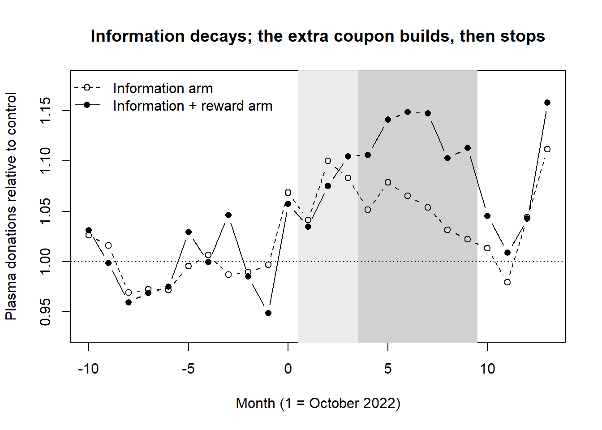
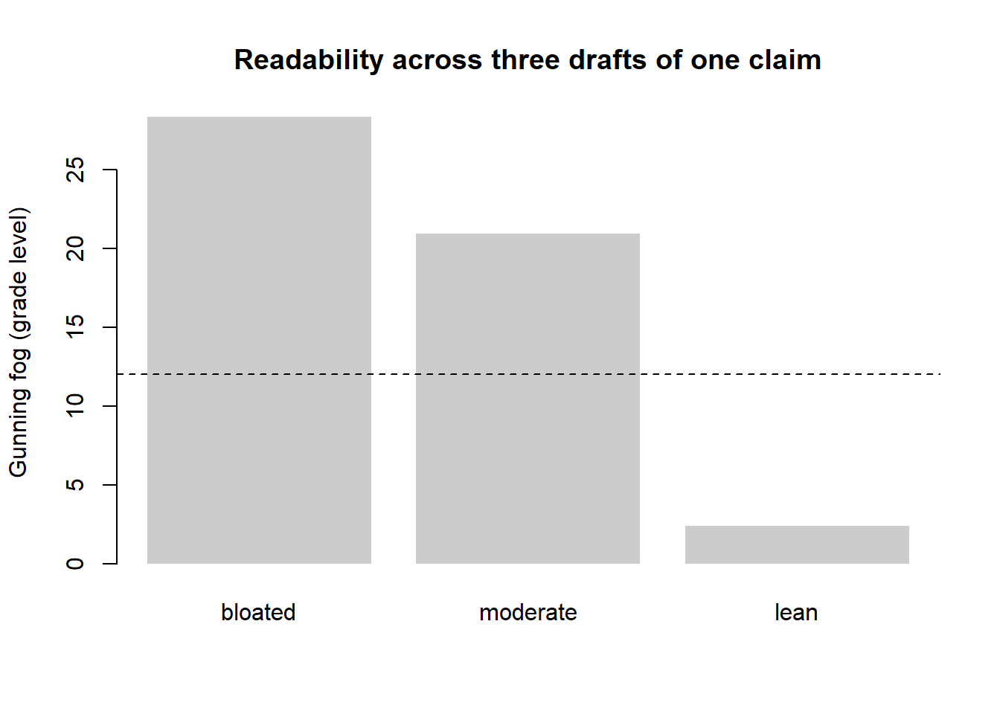

| Section | Words | Purpose | Default tense |
|---|---|---|---|
| Title | 8–15 | Name the contribution | — |
| Abstract | 200–250 | Self-contained summary: objective, method, finding, implication | Past + present |
| Introduction | 800–1200 | Why the paper exists; the gap and the contribution | Present + present perfect |
| Literature / Theory | 1500–3000 | Position vs. prior work; derive hypotheses or model | Present + present perfect |
| Methods | 1000–2500 | What was done, reproducibly | Past |
| Results | 1000–2500 | What was found, with the data doing the talking | Past + present |
| Discussion | 1500–2500 | What it means, limits, boundary conditions | Present + past |
| Conclusion | 400–800 | Restate contribution; implications and future work | Present |
76 Scientific Writing
A research paper is the instrument through which a discovery becomes knowledge. A result that is not written down does not exist scientifically; a result written badly exists only for the handful of readers willing to excavate it. This chapter treats scientific writing not as cosmetic polish applied after the “real” work but as an integral part of the research itself—a design problem with its own constraints, its own failure modes, and its own measurable quality. The audience is the marketing scholar who has a finding and now faces the harder task of convincing a skeptical editor, two or three adversarial reviewers, and an indifferent field that the finding is correct, novel, and important.
The economics of the situation are unforgiving. The top journals in marketing—the Journal of Marketing (JM), the Journal of Marketing Research (JMR), Marketing Science, and the Journal of Consumer Research (JCR), collectively the “top-4”—desk-reject a large share of submissions and ultimately accept only a small fraction of what is sent to them. A reviewer reads dozens of papers a year as unpaid labor and forms a judgment within the first few pages. The paper that survives is not merely the one with the best result; it is the one whose argument the reviewer can reconstruct without effort and whose contribution the reviewer can state in a sentence. Writing is therefore a competitive technology, and this chapter develops it as one.
The chapter proceeds from architecture to sentence. We begin with the structure of a paper—the canonical section sequence and what each section is for—and formalize the underlying logical scaffold. We then treat the hardest and most consequential task, framing the contribution, and then the two genres the hypo-deductive template serves badly—the descriptive paper, which contributes a pattern, and the abductive paper, which reasons from a pattern to the best available explanation. Next comes the part of the paper where framing lives or dies: the front end (title, abstract, introduction). We turn next to the specific demands of writing for the top-4, where the contribution bar is highest. We close with clarity and revision: the sentence-level craft that makes an argument legible, the measurement of readability, and the disciplined process of responding to reviewers. Throughout, the stance is the house stance— intuition first, then the formal structure that makes the intuition operational.
76.1 The Structure of a Paper
76.1.1 The canonical sections and their tenses
Empirical marketing papers share a near-universal skeleton, sometimes abbreviated IMRaD (Introduction, Methods, Results, and Discussion) with literature review and conclusions bracketing the core. Each section answers one question and only one, and—this is a point novices routinely miss—each section has a default verb tense that signals the epistemic status of its claims. Completed actions take the simple past (“we estimated”, “respondents rated”); established knowledge and the paper’s own ongoing argument take the present (“the effect is”, “Table 2 reports”); prior literature as a stream that continues into the present takes the present perfect (“researchers have shown”). Table 76.1 collects the sections, their purposes, approximate lengths, and tense conventions.
The discipline of one-question-per-section is what gives a paper its navigability. A reader who wants to know what you did turns to Methods and finds only that; a reader who wants to know why it matters turns to the Discussion and is not detained by procedure. Violations—results smuggled into the methods, mechanism speculation buried in the results—are the most common structural defect flagged in review, because they force the reader to hold the paper’s logic in their head rather than read it off the page.
A scientific paper is not a chronological record of what the researcher did. It is a reconstructed argument, organized so that the reader can verify the conclusion with minimum effort. The order of discovery and the order of exposition are different things, and conflating them is the surest route to an unreadable manuscript.
76.1.2 The argument as a logical object
Underneath the section skeleton sits a logical scaffold that the prose merely dresses. Make it explicit. A confirmatory empirical paper advances a chain
\[ \underbrace{P}_{\text{problem}} \;\Rightarrow\; \underbrace{G}_{\text{gap}} \;\Rightarrow\; \underbrace{H}_{\text{hypotheses}} \;\Rightarrow\; \underbrace{D}_{\text{design}} \;\Rightarrow\; \underbrace{R}_{\text{results}} \;\Rightarrow\; \underbrace{C}_{\text{contribution}} \tag{76.1}\]
in which every arrow is a claim the reader can refuse to grant. The problem \(P\) must be real (someone cares about the answer); the gap \(G\) must be genuine (the answer is not already known); the hypotheses \(H\) must follow from a theory and be falsifiable; the design \(D\) must be capable of discriminating \(H\) from its negation; the results \(R\) must actually bear on \(H\); and the contribution \(C\) must be what \(R\) licenses, not more. A paper fails at whichever arrow is weakest, and the writing task is to make each arrow as short and as forced as possible. Many rejections that are phrased as “not enough contribution” are in fact broken arrows: a gap that turns out to be already filled (\(G\)), or a design that cannot separate the focal hypothesis from a confound (\(D \not\Rightarrow R\)).
The conceptual or theory paper substitutes a different chain—a construct is defined, related to existing constructs, and shown to do explanatory work—but the demand for unbroken arrows is identical. Figure 76.1 renders the canonical flow and shows where each link in Equation 76.1 is forged.
flowchart TD
A["Title<br/><i>names the contribution</i>"] --> B["Abstract<br/><i>P → R → C in 250 words</i>"]
B --> C["Introduction<br/><i>problem P, gap G,<br/>promised contribution C</i>"]
C --> D["Theory / Literature<br/><i>position; derive H</i>"]
D --> E["Methods<br/><i>design D</i>"]
E --> F["Results<br/><i>evidence R</i>"]
F --> G["Discussion<br/><i>does R license C?</i>"]
G --> H["Conclusion<br/><i>restate C; boundaries</i>"]
C -.->|"promise"| G
H -.->|"payoff"| C
style C fill:#e8f0fe,stroke:#1a73e8
style G fill:#e8f0fe,stroke:#1a73e8
The dashed promise–payoff loop in Figure 76.1 is the structural heart of a paper. The introduction makes a promise—“we will show that \(X\) causes \(Y\) through mechanism \(M\)”—and the discussion must redeem exactly that promise, no more and no less. A paper that promises a causal claim and delivers a correlation, or that delivers a richer finding than it promised and never updates the framing, reads as incoherent even when every individual sentence is sound.
76.1.3 Paper types
The skeleton flexes with the paper’s type, and naming the type early orients both writer and reviewer. Four types recur. A research paper tests hypotheses and reports findings; its contribution lives in \(H \Rightarrow R\). A research paper can also build theory inductively instead of testing it, naming a new construct from qualitative evidence (Section 76.12). A methods paper proposes a new estimator, design, or measurement instrument; its contribution is that the method recovers something prior methods could not, so the burden is a demonstration—often on synthetic data with known ground truth—that it works and a comparison against incumbents. Its design-science variant, common in information systems, has its own architecture (Section 76.9). When the instrument is a new variable built from text or another unstructured source, the burden shifts from ground truth to validation against outcomes (Section 76.13). A review paper consolidates a domain, and its contribution is organization: a taxonomy, an integrative framework, or an agenda that practitioners and scholars did not previously have. A conceptual or discussion paper advances or critiques theory, trading empirical evidence for argumentative rigor. The reviewer evaluates each type against a different standard, and a paper that does not signal its type invites evaluation against the wrong one.
76.2 Framing the Contribution
76.2.1 What a contribution is
The single most important sentence in a paper is the one that states its contribution, and the most common reason good work is rejected is that this sentence is missing, vague, or overclaimed. Define the contribution formally. Let \(\mathcal{K}\) denote the field’s existing knowledge—the set of claims a competent reader already accepts before reading the paper. A paper’s contribution is the increment
\[ \Delta\mathcal{K} \;=\; \mathcal{K}_{\text{after}} \setminus \mathcal{K}_{\text{before}}, \tag{76.2}\]
the set of claims that a reader is licensed to accept after reading the paper and was not licensed to accept before. Three properties make \(\Delta\mathcal{K}\) publishable, and reviewers probe each one explicitly:
- Novelty (\(\Delta\mathcal{K} \neq \varnothing\)): the increment is non-empty. If every claim in the paper already belonged to \(\mathcal{K}_{\text{before}}\), there is no contribution, however well executed the study.
- Validity (\(\Delta\mathcal{K}\) is warranted): the increment is actually licensed by the evidence and argument. Overclaiming—asserting elements of \(\Delta\mathcal{K}\) that the design \(D\) cannot support—is the fastest route to a reviewer’s “the conclusions outrun the data”.
- Importance (\(|\Delta\mathcal{K}|\) matters): the increment is one the field cares about. A true, novel, but trivial claim clears the first two bars and fails the third, and “importance” is precisely the bar that rises from a field journal to the top-4.
Two broad species of contribution recur in marketing, and a paper should know which it is making. A substantive contribution changes what we believe about a marketing phenomenon—that brand prominence signals status through quiet versus loud cues, say, or that responding to online reviews trades complaint quantity for depth (see Chapter 12). A methodological contribution changes how we can learn about phenomena—a new identification strategy, a scalable text measure, a more efficient estimator. The strongest papers often pair a methodological advance with the substantive finding it unlocks, but a paper that is fuzzy about which kind of increment it offers will be read as offering neither.
76.2.2 The contribution statement and the framing trap
A contribution should be expressible as a single declarative sentence of the form “We show that [claim], which prior work did not establish because [reason], using [design].” The clause “which prior work did not establish” is the gap \(G\) of Equation 76.1 made explicit, and it must be true: nothing destroys credibility faster than a literature-savvy reviewer who knows the claimed gap was filled years ago. Conversely, a contribution can be undersold. Authors who have lived inside a problem for years often state their finding in the narrow terms in which they discovered it, missing the more general claim the evidence actually supports. The discipline is to state the most general claim that \(R\) licenses and not one inch more.
Framing is the act of choosing which \(\mathcal{K}_{\text{before}}\) to write against— which conversation the paper joins—and it is a genuine strategic choice, not a neutral description. The same result can be framed as a contribution to several literatures, and the framing determines the reference set, the reviewers, and the perceived importance. A study of how customers respond to a salesperson’s language, for instance, could be framed against the persuasion literature, the frontline-service literature, or the computational-text-analysis literature, and the right choice depends on where the increment \(\Delta\mathcal{K}\) is largest and the audience most receptive. The framing trap is to choose the literature in which the result is most surprising rather than the one in which it is most defensible; surprise attracts an editor’s eye but invites reviewers who hold the strongest priors against the claim.
76.2.3 Setting Up a Question Whose Answer Is Not Already Known
The framing trap above has a constructive counterpart. A paper is read when its question is genuinely open—when a well-informed reader, having finished the introduction, could not confidently guess the result. Most manuscripts fail this test in the first two pages, and the usual reason is that they motivate with a gap rather than a question. “Prior work has not examined \(X\)” tells the reader that something is missing, invites the reply that it may be missing for good reason, and quietly promises that \(X\) will turn out to matter. Everyone knows how that paper ends.
The strongest available move is to assemble two established literatures that imply opposite answers, or that block the two obvious remedies, and then let the data adjudicate. Tanlamai, Khern-am-nuai, and Cohen (2026) is a compact instance, and it is worth reading as a piece of construction rather than for its result (Section 69.10.3.1).
The setup takes two moves. First, decades of evidence establish that houses in white-dominant neighborhoods sell above otherwise-similar houses in minority-dominant neighborhoods, and the literature attributes the gap to human bias. The implied remedy—take the human out of the loop—is the reader’s own next thought, which is exactly why the second move lands: recent work shows the gap is not fixed by conventional AI models, including those designed specifically to address discrimination. Machine bias closes the escape route that human bias opened.
With both remedies blocked, “what does a generative model do here?” becomes a question a reader cannot answer from the armchair. A case runs each way. Generative models are trained on human-produced text and should inherit human bias; they are also statistical predictors and should inherit the proxy encoding that defeats conventional models. Yet they represent a property differently than a hedonic regression over neighborhood features does, and it is not obvious that the same proxies survive that representation. The paper reports that generative AI narrows the gap—and the finding is interesting only because the framing made both directions live beforehand.
Three rules generalize from this.
Both branches must be publishable before you know which one you have. Write the question so that each answer is a contribution, ideally as an explicit pair: if the gap narrows, then \(X\); if it widens, then \(Y\). If only one branch is a paper, the introduction is doing advocacy, and reviewers detect this even when they cannot name it. This is also the honest form of the framing: it is what you would have pre-registered.
A counter-intuitive result raises the evidentiary bar rather than lowering it. Surprise is not a contribution by itself; it is a debt. The reader’s first hypothesis is that something is wrong with the measurement, so a paper of this shape owes a mechanism section, and owes it as a real analysis rather than a paragraph of speculation (Section 44.9, Section 76.6). Papers that lead with a surprising headline and defer the mechanism to “future research” are the ones that fail to replicate.
The two literatures must be summarized in terms their own authors would accept. The move degrades into a straw man the moment either position is flattened to make the opposition sharper. The workable test: write your one-sentence characterization of each literature, and ask whether a proponent would sign it. If either would object, the tension you have constructed is between caricatures, and a referee drawn from that literature will be the one to say so.
76.3 The Descriptive Paper
The template assumed so far—theory, hypotheses, identification, test—is not the only publishable shape, and treating it as such quietly rules out a class of papers the field needs. A descriptive paper establishes what a phenomenon looks like without claiming to have identified a causal effect within it. Its increment \(\Delta\mathcal{K}\) consists of pattern claims: this outcome co-occurs with that antecedent, this population sorts into these categories, this quantity has moved this way over this period.
The genre has explicit methodological warrant. Helfat (2007) argues that stylized facts are a legitimate and necessary input to theory development, because a theory can only be built against a phenomenon whose shape is known. Hambrick (2007) goes further, arguing that the field’s insistence on a theoretical contribution in every paper suppresses precisely the descriptive work theory needs to feed on. Neither position licenses atheoretical data-dumping: Sutton and Staw (1995) is equally clear that data, variables, and diagrams are not themselves theory. The reconciliation is that a descriptive paper contributes a pattern, states it as a pattern, and lets the theoretical payoff be the discipline the pattern imposes on subsequent explanation.
Choudhury, Moeen, and Wormald (2026) supply the positive account. Abduction—the mode of inference that formulates candidate explanations for an unexplained phenomenon—is a distinct research design rather than a deduction that failed to find support. Their treatment distinguishes the abductive trigger (the anomalous observation that starts the inquiry) from creative abduction (generating candidate explanations) and selective abduction (winnowing them), and is explicit that abduction admits no fixed template. That absence of a template is exactly why descriptive papers need to make their design visible on the page: a reader cannot infer it from convention.
76.3.1 What makes a descriptive contribution defensible
Five design choices separate a descriptive paper that publishes from one that reads as a set of cross-tabulations. Table 76.2 states them alongside a worked example: Moeen (2026), which maps founder knowledge origin onto mode of economic value capture in U.S. medical device start-ups and is developed substantively in Chapter 30.
| Design choice | Why it matters | In the worked example |
|---|---|---|
| The outcome is a category, not a magnitude | A mode question (“which market does the venture monetize in?”) has no natural causal counterpart, so description is the right design rather than a consolation prize | Value captured in the market for technology, the market for product, or not at all |
| The antecedent variation is institutionally sharp | A boundary drawn by an institution rather than by the researcher forecloses the “you defined the groups to get the result” objection | Founders who were academic scientists vs. former employees of within-industry firms |
| The typology is declared before the data | A pattern claim can only be wrong—and therefore only be informative—if the correspondence it predicts was specified in advance | Scientific vs. commercial knowledge dimensions, crossed with founder origin |
| The outcome categories are externally classified | Descriptive work dies when the dependent variable rests on the author’s judgment calls | IP transactions and FDA clearance leave a regulatory paper trail |
| The off-diagonal case is reported | The cell that violates the clean mapping is what distinguishes a mechanism from a stereotype; in a design with no treatment, it does the work an interaction term would do elsewhere | Founders bridging both dimensions shift to pioneering products rather than following their institution |
The fifth row deserves emphasis because it is the one most often omitted. A descriptive paper that reports only the clean correspondence has documented a stereotype: academics do this, employees do that. The reader has no way to tell whether the operative variable is the credential or the knowledge. Reporting the cases that break the correspondence, and showing that they break it in the direction the proposed mechanism predicts, converts the pattern into an explanation candidate. This is selective abduction performed in public.
76.3.2 How the contribution sentence changes
The contribution sentence of Section 76.2 still applies, with the causal verb removed and the boundary stated. Rather than “we show that \(X\) causes \(Y\),” a descriptive paper claims “we establish that \(X\) and \(Y\) correspond in population \(P\), which prior work had not documented because it lacked [data/classification/setting], and we show the correspondence tracks \(M\) rather than \(X\) itself.” The final clause is what makes the paper theory-relevant without overclaiming, and it should be paired with an explicit statement of what the design cannot support. Reviewers punish descriptive papers that reach; they reward the ones that name their own ceiling. Stating “we do not claim founder origin is exogenous” in the paper is strictly better than having a reviewer state it for you.
76.3.3 Norms differ by field, and the difference is not subtle
This genre travels much better in Organization Science, Strategic Management Journal, and Strategy Science than in JM, JMR, or Marketing Science, where the descriptive lane is narrower and more codified. In marketing it runs mainly through three channels: empirical generalizations, in which a regularity is established across many datasets and contexts; new-data-source papers, in which the contribution is a measurement capability and the first look it affords; and stylized-facts sections embedded inside otherwise structural or causal papers, where description motivates the model rather than standing alone. Bart J. Bronnenberg, Dhar, and Dubé (2009) is the canonical marketing-side exemplar of the standalone form—a persistent geographic pattern in brand shares, a scaffold for interpreting it, and no causal overclaim.
On the management side, SMJ publishes papers that name the genre in the abstract. C. Liu and Shi (2026) describe their study as taking a “question-driven approach”: does liberal institutional ownership show up in a firm’s symbolic climate actions, its substantive ones, or neither? The answer is reported as associations, not effects, and several rows of Table 76.2 are visible in it. The antecedent comes from an external paper trail (the investors’ political donations), not from the authors’ judgment. The cuts that carry the finding (consistent donors, dedicated investors, firms without CEO duality) do the off-diagonal work of showing where the pattern holds and where it fails. The finding also turns on a dated split, 2016 onward, which the authors tie to rising political polarization. Whether that break was fixed before the estimation is exactly what the third row asks a reader to check, because a break chosen after looking at the data is a forking path. The substance is developed in Section 26.7.
Management Science publishes the genre as well, through its organizations department. De Stefano and Bidwell (2026) relate the breadth of an employee’s project portfolio to promotion inside one services firm, and their limitations section says in so many words that the results are correlational. Two specification choices do the work that identification would do elsewhere. First, the regressor is split by timing. Breadth in the current year and breadth accumulated before it enter separately, because the first is contaminated by selection (poorly matched employees keep switching projects) and the second much less so. The two coefficients take opposite signs, which a single cumulative measure would have blended. Second, the main models leave out the performance rating, on the argument that breadth plausibly works through performance and a mediator is a bad control. The rating is then added in a separate column so the reader can see how much the estimates move. Neither choice makes the estimates causal. Each tells the reader which rival account a coefficient has been protected against, and that is the most a descriptive design can offer. The substance is in Section 30.4.
The practical implication is a targeting decision made before writing. A descriptive paper aimed at a marketing journal usually needs one of the three channels above as its declared home; the same paper aimed at a management journal can stand on the stylized-facts warrant directly. Authors who write the management version and submit it to the marketing journal receive a predictable review: interesting, but what is the identification?
76.3.4 From a New Measure to a Model: When the Facts Cannot Choose
Of the three marketing channels, the new-data-source paper is the one most students will write first: the contribution is a measurement capability and the first look it affords. Its characteristic weakness is the one a referee names in the opening paragraph of the report. The facts are new, but what do they mean? Often the facts are consistent with two mechanisms that carry opposite implications, and no amount of further description will separate them. The paper then has two honest options. It can find a design that identifies the mechanism, or it can write down a model in which the mechanisms make different predictions and let the measured facts discipline it. The second route is how a measurement paper reaches a top general-interest journal when no experiment is available, and Lee (2026) is a compact specimen.
Lee measures something that had been measured mainly for large, established firms (Guiso, Sapienza, and Zingales 2015; Li et al. 2021): the corporate culture that start-ups advertise to job seekers, read from their postings on an online job board. Table 76.3 traces how the paper moves from that measure to a question the facts cannot answer, and then to a model that answers it.
| Step | What the paper does | What the step buys |
|---|---|---|
| A new measure | Reads the culture start-ups advertise in job postings; two types emerge, worker-centered (employee well-being) and firm-centered (customers, firms, markets) | An observable for a construct that is otherwise inferred from surveys or from large-firm disclosures |
| Facts with a price attached | Worker-centered postings draw 20% more applications and pay 5% less than measurably similar jobs | Workers value the culture, and the value appears as a wage discount: a quantity, not a sentiment |
| A null that matters | Firm outcomes do not differ significantly by advertised culture | Weighs against the simple story that culture pays for itself, but a null with selected adoption can also mask an effect |
| The question the facts leave open | Is the worker-centered culture adopted to cut labor costs or to raise productivity? | A question with opposite managerial and welfare answers, which no further cross-tabulation can settle |
| An equilibrium model | Develops an equilibrium model of the choice between the two cultures | Its answer: many firms adopt the worker-centered culture primarily for cost savings |
(Only the published abstract was accessible when this section was written. The article is not open access, and the working-paper copy sits behind a bot check. The table records the paper’s moves as its abstract states them, and the model below is a stylized illustration written for this chapter, not Lee’s.)
It is worth seeing concretely why the null forces a model. A zero outcome gap between adopters and non-adopters is evidence of a zero effect only if adoption is unrelated to the firm’s underlying quality. If cash-poor firms value a 5% wage saving more, as they should, adopters are negatively selected, and a genuine productivity effect can be offset exactly by that selection. The chunk below builds two worlds. In World A the culture is purely a cost device: it has no productivity effect, and adoption is unrelated to firm quality. In World B the culture raises outcomes by 0.25 standard deviations, but the value of the wage saving falls with productivity, so weaker firms adopt more. Both worlds are tuned to the same adoption rate and the same outcome gap.
Code
# A stylized adoption model written for this illustration; it is not Lee's model.
# theta is a firm's latent productivity, which the researcher never sees; f is a
# noisy observable proxy for it (funding raised, say). Advertising the
# worker-centered culture (W = 1) is worth
# s0 * exp(-rho * theta) the labor-cost saving, worth more to cash-poor firms
# + delta any productivity gain, which also raises the outcome
# - K + u a fixed cost of sustaining the claim, and a taste shock
# and the outcome is y = theta + delta * W + e. Workers' taste for the culture
# (the wage discount and the application premium) is the same in both worlds.
s0 <- 0.25; sig_u <- 0.5
draw_world <- function(delta, rho, K, n = 5000, seed = 1) {
set.seed(seed)
theta <- rnorm(n); f <- theta + rnorm(n)
W <- as.integer(s0 * exp(-rho * theta) + delta - K + rlogis(n, scale = sig_u) > 0)
data.frame(f, W, y = theta + delta * W + rnorm(n))
}
facts <- function(d) c(
`Adoption share` = mean(d$W),
`Outcome gap` = mean(d$y[d$W == 1]) - mean(d$y[d$W == 0]),
`Adoption slope on f` = unname(coef(lm(W ~ f, data = d))[2]))
world_A <- draw_world(delta = 0, rho = 0, K = 0.475) # cost device only
world_B <- draw_world(delta = 0.25, rho = 0.425, K = 0.747) # productivity, masked
knitr::kable(rbind(`World A: cost saving only` = facts(world_A),
`World B: productivity effect, selected adoption` = facts(world_B)),
digits = 3,
caption = "Two worlds, one set of headline facts. The adoption slope is the moment the headline facts do not use.")| Adoption share | Outcome gap | Adoption slope on f | |
|---|---|---|---|
| World A: cost saving only | 0.383 | -0.028 | -0.002 |
| World B: productivity effect, selected adoption | 0.385 | 0.003 | -0.027 |
Code
# Model-implied moments, computed from adoption probabilities on a large
# simulated panel of firms (the same draws for every parameter value).
set.seed(99); th_s <- rnorm(20000); f_s <- th_s + rnorm(20000)
implied <- function(delta, rho, K) {
S <- s0 * exp(-rho * th_s)
p <- plogis((S + delta - K) / sig_u)
c(adopt = mean(p),
gap = sum(p * (th_s + delta)) / sum(p) - sum((1 - p) * th_s) / sum(1 - p),
slope = cov(p, f_s) / var(f_s),
cost_share = sum(p * (S > delta)) / sum(p)) # adopters whose cost motive is larger
}
# For a candidate delta, find the (rho, K) that reproduce the two headline facts.
fit_headline <- function(delta, obs) {
K_for <- function(rho) uniroot(function(K)
implied(delta, rho, K)[["adopt"]] - obs[["Adoption share"]], c(-5, 10))$root
rho <- uniroot(function(r)
implied(delta, r, K_for(r))[["gap"]] - obs[["Outcome gap"]], c(-3, 5))$root
c(delta = delta, rho = rho, K = K_for(rho))
}
obs <- facts(world_B)
ridge <- t(sapply(c(0, 0.1, 0.2, 0.3, 0.4), function(dl) {
par <- fit_headline(dl, obs)
c(par[1:2], implied(par[1], par[2], par[3])[c("adopt", "gap", "slope", "cost_share")])
}))
colnames(ridge) <- c("Productivity effect", "Selection strength", "Adoption share",
"Outcome gap", "Adoption slope", "Cost-motivated share")
knitr::kable(ridge, digits = 3,
caption = "Every candidate productivity effect fits the headline facts of World B exactly; only the implied adoption slope differs.")| Productivity effect | Selection strength | Adoption share | Outcome gap | Adoption slope | Cost-motivated share |
|---|---|---|---|---|---|
| 0.0 | -0.006 | 0.385 | 0.003 | 0.000 | 1.000 |
| 0.1 | 0.190 | 0.385 | 0.003 | -0.011 | 1.000 |
| 0.2 | 0.368 | 0.385 | 0.003 | -0.023 | 0.764 |
| 0.3 | 0.523 | 0.385 | 0.003 | -0.035 | 0.441 |
| 0.4 | 0.664 | 0.385 | 0.003 | -0.047 | 0.333 |
Code
# The third moment picks the point on the ridge.
d_hat <- uniroot(function(dl) {
p <- fit_headline(dl, obs); implied(p[1], p[2], p[3])[["slope"]] - obs[["Adoption slope on f"]]
}, c(0, 0.45))$root
p_hat <- fit_headline(d_hat, obs)
knitr::kable(data.frame(
` ` = c("True (World B)", "Recovered from three moments"),
`Productivity effect` = c(0.25, d_hat),
`Cost-motivated share of adopters` = c(implied(0.25, 0.425, 0.747)[["cost_share"]],
implied(p_hat[1], p_hat[2], p_hat[3])[["cost_share"]]),
check.names = FALSE), digits = 3,
caption = "Adding the adoption slope identifies the productivity effect and the distribution of motives.")| Productivity effect | Cost-motivated share of adopters | |
|---|---|---|
| True (World B) | 0.250 | 0.565 |
| Recovered from three moments | 0.234 | 0.622 |
The first table is the referee’s problem in miniature. Both worlds show the same adoption share (about 0.38) and an outcome gap that no sample of this size could tell from zero; its standard error is about 0.04. The wage discount and the application premium come from workers’ taste and are identical by construction. The second table shows why more description of the same facts cannot help. For every candidate productivity effect from 0 to 0.4 there is a selection strength that reproduces the headline facts exactly, so the facts trace a ridge, not a point. What breaks the tie is a prediction the model makes and the headline facts do not use. If selection is masking a productivity effect, adoption must fall with an observable proxy for firm quality, and the steeper the fall, the larger the effect it hides. In World B the slope is −0.027 with a standard error near 0.005, so it is easily detected. Matching that one extra moment picks a point on the ridge and recovers an effect of 0.23 against a true 0.25. It also returns a quantity no regression could report: the share of adopters for whom the cost saving, rather than the productivity gain, is the larger motive. The recovered share is 0.62 against a true 0.57.
Five lessons carry over to any measurement paper that is tempted to add a model.
- The facts ask for the model. Its question is the one the reduced form leaves open, and the paper says so before the model appears. A model appended to answer a question nobody raised reads as decoration.
- The measured facts discipline the model. The wage discount is not only a finding; it sets the size of the cost motive. A model whose parameters owe nothing to the paper’s own measurements throws away the contribution the paper has already made.
- Name the moment that identifies the mechanism. Say which feature of the data separates the hypotheses and why the headline facts could not. In the toy it is the adoption gradient; in a real paper it may be an entry margin, a distribution rather than a mean, or a response to a shock.
- Deliver a quantity, not a verdict. “Many firms adopt primarily for cost savings” is a statement about the distribution of motives across firms, which a model can return and a regression cannot.
- Keep the model as small as the question. The toy needs three parameters to settle one question. Every additional primitive is another link in Equation 76.1 that a referee may refuse to grant.
The paper’s history suggests that the third and fourth lessons were learned in revision. An earlier version circulated in 2022 as a Singapore Management University working paper. As indexed there, its abstract presented the model as showing that financially constrained start-ups have an incentive to advertise the culture workers prefer, even though without the constraint they would not. The published abstract instead poses the model as a contest between two named mechanisms, cost savings and productivity, and reports which one dominates. The model’s job shifted from rationalizing a fact to adjudicating between explanations of it, and that is the form in which the paper was published. (The working-paper abstract was read through a search index, not from the document itself.)
A descriptive paper that stops at the pattern is one genre; a paper that goes on to argue for a particular explanation of that pattern is another, and it needs a reporting structure of its own. That is the subject of Section 76.4.
76.4 The Abductive Paper and the PEEBI Structure
A descriptive paper stops at the pattern. A large class of empirical papers does not: it commits to an explanation of the pattern that was constructed after the pattern was seen, and that was never tested deductively because it did not exist before the data did. This is abduction, or inference to the best explanation (IBE), and it produces a great deal of what marketing knows. The difficulty is not the inference—it is the testimony. Pillai et al. (2026) observe that although scholars employ abduction routinely, there is no agreed-upon structure for reporting it, and the hypo-deductive reporting template does not align with the epistemology of abduction. They propose one, PEEBI, a five-section structure in which the authors take prior knowledge and theories, establish the context and observations worthy of interest, identify and evaluate candidate explanations for the observed patterns, determine the best explanation and their reasoning for accepting it, and abstract that explanation to a more generalizable theoretical contribution. The structure “advances knowledge in a modest, stepwise fashion” and is designed to foreground the author’s judgment rather than hide it.
76.4.1 Why the deductive template misreports abductive work
The template of Section 76.1 asks the reader to grant a chain that begins with a hypothesis and ends with a test. Abductive work runs the other way: the observation comes first, the candidate explanations are generated by the author rather than handed down by prior theory, and the evidence that discriminates among them is assembled afterward. Table 76.4 contrasts what each mode actually asks of a reader.
| Hypo-deductive paper | Abductive paper | |
|---|---|---|
| Where the claim comes from | Derived from theory before the data | Constructed to explain an observation after it |
| What the evidence does | Discriminates \(H\) from \(\neg H\) | Discriminates \(E_k\) from the other candidates in a set the author assembled |
| What the reader grants | That the design could have falsified \(H\) | That the candidate set is adequate and was evaluated evenhandedly |
| What failure looks like | The test does not reject | A rival explanation survives that the author did not consider |
| What must be disclosed | Design, measures, robustness | All of that, plus the order of discovery and the rejected candidates |
| Who does the judging | Nominally the data | Explicitly the author—and, if the paper is written well, the reader |
Forcing abductive work into the deductive template requires a small fiction: the explanation is presented as though it preceded the data. The field already has a name for the vicious version of that fiction—HARKing—and the reason abduction is not HARKing is disclosure: the order of discovery is stated, the rival explanations are named, and the residual uncertainty is quantified or at least bounded. The deductive template deletes precisely those three things. It does not merely misfit the work; it removes the information that licenses the conclusion.
76.4.2 The five acts
Table 76.5 states the five sections, what each one owes the reader, and where it goes in a manuscript aimed at a marketing journal, since few marketing editors will accept section headings named after an epistemology.
| Act | What the section does | What the reader is handed | Marketing manuscript home |
|---|---|---|---|
| Priors | States the prior knowledge and theories the inquiry begins from | The baseline against which the observation is surprising | Introduction and a short theory-background section |
| Establish | Establishes the context and the observations worthy of scholarly interest | The phenomenon itself: measurement, setting, and why the pattern is not an artifact | “Empirical setting” plus a stylized-facts or model-free-evidence section |
| Evaluate | Identifies and evaluates candidate explanations for the observed pattern | The full candidate set and the evidence bearing on each | “Alternative explanations”, promoted from appendix to spine |
| Best | Determines the best explanation and the reasoning for accepting it | The author’s judgment, stated as judgment, with its grounds | “Discriminating evidence” or the analysis section that adjudicates |
| Implication | Abstracts the best explanation into a more generalizable theoretical contribution | The claim that travels beyond this setting, and its boundary | General discussion and theoretical implications |
The move that does the work is the third act. In a conventional marketing paper, alternative explanations are a defensive appendix written to preempt reviewer objections; in an abductive paper they are the argument. A reader who is shown four candidates, the evidence for and against each, and the author’s reasoning for preferring one has been given the material to disagree—which is the point. Pillai et al. (2026) frame this as elevating the reader’s role: the paper’s job is to supply the information a reader needs to reach a judgment, not to foreclose it.
76.4.3 The abductive chain
The counterpart to Equation 76.1 runs
\[ \underbrace{O}_{\text{observation}} \;\Rightarrow\; \underbrace{\mathcal{E} = \{E_1, \dots, E_K\}}_{\text{candidate set}} \;\Rightarrow\; \underbrace{V}_{\text{evaluation}} \;\Rightarrow\; \underbrace{E^{*}}_{\text{best explanation}} \;\Rightarrow\; \underbrace{T}_{\text{abstraction}} \tag{76.3}\]
and, as before, every arrow is a claim the reader may refuse to grant. The observation \(O\) must be real and genuinely surprising against the priors—a pattern that everyone expected is not an abductive trigger. The candidate set \(\mathcal{E}\) must be adequate: it must contain the explanation a hostile expert would propose, which is the arrow that breaks most often. The evaluation \(V\) must apply the same standard to every candidate; searching hard for evidence that supports \(E_1\) and casually for evidence against it is the abductive analogue of a rigged specification search. The selection \(E^{*}\) must dominate the survivors on stated grounds rather than on the author’s enthusiasm. And the abstraction \(T\) must not outrun the case: one setting supports a mechanism claim, not a law.
Failure at each arrow has a diagnostic signature in reviews. A weak \(O\) draws “this is well known.” A thin \(\mathcal{E}\) draws “the authors have not ruled out…” An asymmetric \(V\) draws “the evidence for the preferred story is treated differently from the evidence against it.” An overreaching \(T\) draws “the contribution is not supported by a single context.”
76.4.4 What makes an explanation “best”
The word best carries the whole burden, and Pillai, Goldfarb, and Kirsch (2024) unpack it along two dimensions that do not coincide. An explanation is lovely when it is useful, general, and provides meaning; it is likely when it is close to the truth. Loveliness is what makes a mechanism worth having; likeliness is what makes it true. A managerially elegant story about why a promotion worked can be extremely lovely and quite unlikely, and a precisely estimated coefficient can be likely and entirely unlovely. Their argument is that interpreting observational results requires an understanding of context that statistical analysis alone cannot supply, and that historical methods—hermeneutics, contextualization, and source criticism—help scholars both generate new candidate explanations and judge and balance the virtues that make one explanation better than another.
In marketing the contextual sources are close at hand and systematically underused: category and brand histories, trade press, retailer and manufacturer archives, advertising archives, regulatory filings, and interviews with the people who made the decisions in the data. A researcher who knows that a category was restructured by a distribution change in 1998 has a candidate explanation that no amount of panel-data variance decomposition will hand them.
The practical artifact this yields is a candidate-explanation table, written early and revised as evidence accumulates. Table 76.6 sketches its form for a stylized marketing pattern—a brand’s share is persistently higher in markets it entered first—and it is the single most useful document a student can produce before writing an abductive paper, because it makes the completeness of \(\mathcal{E}\) visible to the author.
| Candidate explanation | Lovely? (useful, general, meaningful) | Likely? (evidence for) | Evidence against | Discriminating test available? |
|---|---|---|---|---|
| Consumer-side brand capital formed early and persisting | High—travels to any repeat-purchase category | Share gap survives entry of national rivals | Cannot separate from supply-side with market-level data alone | Yes: observe consumers who move between markets |
| Supply-side cost or distribution advantage in early markets | Moderate—context-specific | Early entrant has denser distribution | Gap persists after distribution converges | Yes: control distribution and re-measure |
| Retailer assortment and shelf-space lock-in | Moderate | Assortment correlates with share | Pattern holds in categories with weak retailer power | Partly: cross-retailer variation |
| Advertising stock accumulated over decades | High | Cumulative spend correlates with share | Gap holds where historical spend was symmetric | Yes: historical ad-spend series |
76.4.5 A worked example, reconstructed
Marketing has abductive exemplars; what it lacks is the habit of labeling them. Read as a two-paper arc, Bart J. Bronnenberg, Dhar, and Dubé (2009) and B. J. Bronnenberg, Dubé, and Gentzkow (2012) instantiate the chain in Equation 76.3 almost exactly—though neither paper presents itself in these terms, and the reconstruction is ours.
The first paper establishes: brand shares in consumer packaged goods differ persistently across U.S. geographic markets, and the differences track the brand’s early entry more than a century back. Against the priors of a field that models share as a function of current marketing mix, that is a genuine surprise, and the paper states it as a pattern rather than as an effect. The candidate set is the obvious one—something on the demand side (consumers in these markets simply prefer this brand, for reasons formed long ago) versus something on the supply side (the early entrant enjoys durable cost, distribution, or retail advantages there).
Market-level data cannot separate those candidates, and this is where an abductive paper either finds a discriminating observation or admits it cannot. The second paper finds one: consumers who move between markets carry their preferences with them, converging only slowly toward their new market’s shares. Movers separate the two candidates cleanly, because a consumer-side stock travels with the consumer while a supply-side advantage does not. That is act four performed in public—the best explanation determined, with the reasoning for accepting it visible—and the abstraction in act five is the one that made the work matter beyond CPG: brand preference behaves as an accumulated consumer-side capital stock with a very long half-life.
Two features of the arc are worth copying. The discriminating evidence was sought after the candidates were named, not before—the honest order, and the one PEEBI asks you to report. And the abstraction stops where the evidence stops: a claim about how preferences persist and transfer, not a claim that early entry causes share everywhere.
76.4.6 Getting an abductive paper through a marketing review
The genre travels less easily in JM, JMR, and Marketing Science than in SMJ or Organization Science, for the reason given in Section 76.3: the default reviewer question in marketing is “what is the identification?” Three adjustments carry most of the load.
Declare the design in the introduction. A sentence—“we do not test a pre-specified hypothesis; we document a pattern, enumerate the explanations consistent with it, and present evidence that discriminates among them”—costs nothing and prevents the paper from being evaluated against a template it is not using. Reviewers punish papers that appear to have failed at deduction far more than papers that never attempted it.
Keep the conventional headings and put PEEBI underneath them, as in the last column of Table 76.5. The structure is a reporting discipline, not a demand for new section names, and a manuscript that renames its sections after an epistemology spends its first reviewer paragraph defending a formatting choice.
State the ceiling before a reviewer does. The abductive paper’s ceiling is that \(\mathcal{E}\) may be incomplete, and the correct response is to say so and to name what evidence would change the ranking. Papers that specify the observation that would overturn their preferred explanation read as confident; papers that imply the candidate set is exhaustive read as naive. This is the same principle that governs the R&R response in Chapter 77—make the reader’s job of disagreeing with you easy, and they will usually decline the invitation.
Figure 76.2 summarizes the flow, including the loop that the deductive template has no way to represent: evaluation frequently sends the author back for more candidates or more context, and the paper reports the end state of that loop rather than pretending it did not run.
flowchart TD
P["<b>P</b>riors<br/><i>prior knowledge and theories</i>"] --> E1["<b>E</b>stablish<br/><i>context and observations<br/>worthy of interest</i>"]
E1 --> E2["<b>E</b>valuate<br/><i>identify and evaluate<br/>candidate explanations</i>"]
E2 --> B["<b>B</b>est explanation<br/><i>and the reasoning<br/>for accepting it</i>"]
B --> I["<b>I</b>mplication<br/><i>abstract to a generalizable<br/>theoretical contribution</i>"]
E2 -.->|"candidate set inadequate"| E1
B -.->|"no candidate dominates"| E2
I -.->|"new priors for the next study"| P
style E2 fill:#e8f0fe,stroke:#1a73e8
style B fill:#e8f0fe,stroke:#1a73e8
76.4.7 A checklist for the abductive manuscript
A reader finishing each act should be able to answer one question. If they cannot, the act is not written yet.
- After P: what did we believe before, and why is the observation surprising against that belief?
- After E (establish): is the pattern real—measured how, in what population, and robust to what obvious artifacts?
- After E (evaluate): what else could produce this pattern, and what does the evidence say about each of those?
- After B: why this explanation rather than the runner-up, and what would change my mind?
- After I: what claim travels beyond this setting, and where does it stop?
The parallel exercise for a course is worth assigning directly: take a published hypo-deductive paper in the student’s area, reconstruct the abductive history that almost certainly produced it, and rewrite the introduction in PEEBI form. Students discover quickly that the reconstructed version is both more honest and easier to read, which is the argument of Pillai et al. (2026) in miniature. The seminar treatment of abduction as a mode of inference, alongside empirical generalizations and stylized facts, is in Section 65.6.
76.5 The Decomposition Paper
A third genre sits beside description and abduction, and it is the one most likely to rescue a paper whose headline effect is small, imprecise, or already known. Its claim is not “\(X\) affects \(Y\)” but “\(X\) affects \(Y\) through these specific channels, which push in opposite directions, in these proportions, under these conditions.” The increment \(\Delta\mathcal{K}\) is the anatomy of an effect rather than its sign.
The genre is worth naming because the alternative is so common and so weak. A great many papers—in marketing, economics, and management alike—end at a signed average: the promotion raised sales, the technology cut employment, the entry helped the incumbent. Signed averages age badly. They do not transfer to settings where the mixture of channels differs, they cannot explain why two credible studies disagree, and they give a manager or regulator nothing to act on beyond “more” or “less.”
The exemplar. Clemens and Lewis (2026) study a question with a long history of irreconcilable estimates: does employing low-skill immigrants displace native workers? The design is a natural firm-level randomization—the US H-2B visa quota is allocated in part by federal lottery—paired with a pre-analysis plan and a purpose-built firm survey of 2021 lottery winners and losers. That alone would produce a signed average. What makes the paper a template is that the signed average is derived rather than reported.
The authors write down a monopolistically competitive firm producing with immigrant labor \(I\), native low-skill labor \(N\), capital \(K\), and high-skill labor \(H\) in a nested CES technology (Ottaviano and Peri 2012), facing demand elasticity \(\eta\), with immigrant–native substitution elasticity \(\sigma\). Two mechanisms then run in opposite directions. Substitution: immigrants and natives compete for the same tasks, so cheap access to one displaces the other, and the force is governed by \(\sigma\). Scale: relaxing the hiring constraint lets the firm expand output, raising demand for every input including native labor, and the force is governed by \(\eta\). Stripping the model to labor alone makes the arithmetic transparent: with \(s_I\) and \(s_N\) the immigrant and native revenue shares, the effects of winning the lottery on revenue and on native employment are \[ \ln\frac{R_w}{R_\ell} \approx s_I \cdot \frac{\eta - 1}{(\eta-1)(1-s_N) + (\sigma-1)s_N}\cdot \ln\frac{I_w}{I_\ell}, \qquad \ln\frac{N_w}{N_\ell} \approx s_I \cdot \frac{\eta - \sigma}{(\eta-1)(1-s_N) + (\sigma-1)s_N}\cdot \ln\frac{I_w}{I_\ell}. \tag{76.4}\]
The revenue effect is unambiguously non-negative. The employment effect has indeterminate sign, positive when \(\eta > \sigma\) and negative otherwise: whether immigrant hiring crowds natives in or out is not a fact about immigrants but a race between two elasticities. (With capital and high-skill labor restored, the crossing condition generalizes but keeps the same structure.)
Code
# Effects of an exogenous increase in immigrant employment, from eq-sw-decomp.
s_I <- 0.20; s_N <- 0.65 # revenue shares of immigrant and native labor
grid <- expand.grid(eta = c(4, 8, 16), sigma = c(0.5, 1.5, 3, 6))
denom <- with(grid, (eta - 1) * (1 - s_N) + (sigma - 1) * s_N)
grid$revenue_effect <- with(grid, s_I * (eta - 1) / denom)
grid$native_effect <- with(grid, s_I * (eta - sigma) / denom)
grid$verdict <- ifelse(grid$native_effect > 0, "crowds in", "crowds out")
round_df <- within(grid, {
revenue_effect <- round(revenue_effect, 3)
native_effect <- round(native_effect, 3)
})
round_df[order(round_df$eta, round_df$sigma), ]
#> eta sigma revenue_effect native_effect verdict
#> 1 4 0.5 0.828 0.966 crowds in
#> 4 4 1.5 0.436 0.364 crowds in
#> 7 4 3.0 0.255 0.085 crowds in
#> 10 4 6.0 0.140 -0.093 crowds out
#> 2 8 0.5 0.659 0.706 crowds in
#> 5 8 1.5 0.505 0.468 crowds in
#> 8 8 3.0 0.373 0.267 crowds in
#> 11 8 6.0 0.246 0.070 crowds in
#> 3 16 0.5 0.609 0.629 crowds in
#> 6 16 1.5 0.538 0.520 crowds in
#> 9 16 3.0 0.458 0.397 crowds in
#> 12 16 6.0 0.353 0.235 crowds inEvery row has a positive revenue effect; the native-employment column flips sign inside the same table. That single display carries more transferable knowledge than any average treatment effect estimated from it, because a reader in a different industry can locate their own \((\eta, \sigma)\) and read off the prediction. The paper’s empirical estimates then close the loop: losing the lottery cuts immigrant employment by 56% and contracts the firm—revenue elasticity about \(+0.16\), investment about \(+1.03\) in the working-paper version, with the published estimates in the range \(0.20\)–\(0.22\) for production and \(1.5\)–\(2.1\) for investment—while the effect on US employment is zero or positive. Read through Equation 76.4, a null employment effect is not a non-result: it identifies the substitution elasticity, which the authors back out at \(0.8\)–\(2.2\), low relative to the demand elasticity, which is exactly why scale wins.
The four moves worth stealing. The genre has a recognizable structure, and each move is portable to a marketing paper.
- Write the model that makes the sign ambiguous. The theory’s job here is not to generate a directional hypothesis but to prove that direction cannot be signed a priori. That reframes a null or mixed result from a failure into an estimate of the parameter that decides the race.
- Turn the mechanism into a prespecified heterogeneity test. The same model predicts where each channel should dominate—larger revenue effects for small firms facing more elastic demand, larger native-employment effects in rural areas where complementary workers have worse outside options—and both predictions were registered in advance and confirmed. Heterogeneity chosen after the fact is fishing; heterogeneity implied by the decomposition is a test.
- Recover the structural parameter from the reduced form. The reduced-form coefficients are used to invert for \(\sigma\), which is the quantity other studies argue about and the quantity that transfers.
- Say which quantity you estimated. The authors distinguish the LATE recovered from the usual shift-share instruments—variation in immigrant supply, irrespective of current demand—from the policy-relevant treatment effect of a policy-induced restriction, and argue their lottery identifies the latter. Naming the estimand is itself a contribution when the literature has been silently averaging over several.
Companion designs. The decomposition move is not foreign to marketing; it is simply underused as an explicit frame.
- Promotion analytics has run on decomposition for decades: a sales spike splits into brand switching, category expansion, purchase acceleration, and stockpiling, and the split—not the spike—determines incremental profit (Van Heerde, Helsen, and Dekimpe 2007; Guyt and Gijsbrechts 2014) (Chapter 21).
- Biswas, Yoganarasimhan, and Zhang (2026) decompose the value of channel adoption by the pathway that produced it, isolating forward buying from habit persistence, and show the two mechanisms imply opposite corrections to incremental CLV (Section 16.8).
- Q. Liu et al. (2026) decompose the environmental effect of platform entry by market structure, finding that the entire average effect comes from dual-platform cities and none from single-platform ones (Section 70.7.1).
- Ellickson, Kar, and Reeder (2023) decompose a campaign’s effect into the effects of its components with double machine learning, turning “the email worked” into which element of the email worked.
- In economics, the same instinct underwrites the task-based decomposition of automation into displacement and reinstatement effects, and the decomposition of trade shocks into substitution and scale channels; the shared feature is that the aggregate is written as a sum of forces with known signs before it is estimated.
A field-experiment specimen. The decomposition frame suits a firm-run randomized experiment especially well, because a policy change seldom moves only one line of the profit statement. Fang et al. (2026) worked with a leading global e-commerce platform to test an agentic-AI refund policy on nearly one million customers. In the treatment arm, an AI system evaluated the customer’s multimodal evidence and offered a partial refund with no return required. The control arm kept the standard process: ship the item back for a full refund. No one could sign the net effect in advance, because the components push in different directions. Refund payouts can rise. Processing costs fall. Less hassle can raise long-run customer value. Strategic claiming is a cost. The paper’s economic framework writes the platform’s payoff in terms of these drivers and states the conditions under which the policy creates value. The experiment then signs each one: payouts rise, processing costs fall, long-term customer value rises, and the net effect on profit is positive. Treated customers go on to buy more, but they also show signs of strategic behavior. The case adds two moves to the four above.
- Name the bundle. The two arms differ in who decides (an AI agent or the standard process), in whether the item comes back, and in how much is refunded. The experiment identifies the effect of that policy as it would be deployed, not the effect of any one component, and the deployment effect is the quantity a platform deciding whether to deploy actually needs (Section 44.3.3). A reader who wants the separate effect of returnlessness needs a different design, and saying so up front pre-empts the referee who would otherwise ask for it.
- Measure the downside. Strategic behavior is the obvious objection to paying refunds without a return. Measuring it and pricing it into the net effect turns the referee’s first question into one of the paper’s findings.
The abstract is also a compact template for the genre. In order, it states the cost the status quo imposes, on consumers in hassle and on firms in money; the technology that makes a new policy feasible; the partner, the randomization, and the scale; the two arms, each described as a complete policy; the framework; the sign of each payoff component; the net effect; the countervailing risk; and the claim to novelty, here “one of the first large-scale causal evaluations” of agentic AI in customer service. The whole promise–payoff loop of Figure 76.1, from problem to redeemed claim, fits in fewer than two hundred words. (Only the abstract was accessible when this section was written; the design details and effect sizes are in the paper.)
Where it fails. Two failure modes recur. The first is decomposition by regression mediation with no design behind it: adding a mediator to a regression and reporting an “indirect effect” decomposes nothing if the mediator is endogenous, and this remains the most common way marketing papers claim mechanism without earning it. The second is decomposing into channels the data cannot separate; if two mechanisms imply identical predictions in every observable dimension, naming them both is rhetoric, not evidence. The test to apply before writing is simple: for each channel in the decomposition, state the observation that would change its estimated share. If no such observation exists, the channel is not identified and the decomposition should be presented as an interpretation rather than a result.
76.6 The Effect–Mechanism–Boundary Paper
A fourth architecture is now common enough in empirical strategy, marketing, and information systems to be worth naming, because students imitate its surface without understanding why it holds together. The paper establishes an effect, then explains it, then bounds it—three stages that answer, in order, whether, how, and for whom. Singh et al. (2026) is a well-built specimen and the running example here; its substance is discussed in Chapter 28.
Stage 1 establishes the effect. Firms adopting open-source product development gained 4–5% in gross margin, estimated with staggered difference-in-differences and replicated under a second DID estimator, generalized synthetic control, an instrumental variable, and two dynamic panel estimators (Chapter 44).
Stage 2 explains it. A moderated mediation model routes the effect through labor productivity and shows the pathway is switched on by external contributor participation (Section 44.9.6).
Stage 3 bounds it. A configurational analysis identifies the resource profiles under which the gains actually appear, finding R&D intensity in every high-profitability configuration (Section 42.2).
A different, equally instructive pairing is the multimethod paper in which one method produces the measure the other estimates. Huang, Huang, and Hong (2026) use machine learning to classify roughly 280,000 GitHub issues as maintenance or development work and then estimate, with econometrics, how two forms of workflow automation change resolution speed for each (Section 28.7.5). The writing lesson is that the two methods are not parallel robustness checks but a pipeline, so the paper must justify the classifier’s validity before the regression is believed, because any classification error enters the econometric stage as measurement error in the outcome’s category. The theory does the matching work: two mechanisms (mechanization, orchestration) are mapped to two innovation types (exploitative, explorative) before any data appear, so each estimate answers a stated prediction instead of fishing across cells.
76.6.1 Why the stages are ordered, and why the method changes
The ordering is not stylistic. Each stage exists to answer the objection the previous one provokes, which is the same architectural logic as the five-move template in Section 75.3. A reader shown a 4–5% margin gain immediately asks through what, and a reader given a mediation pathway immediately asks for which firms. Reversing the order strands the reader: a mechanism for an effect not yet established is a story about nothing, and a boundary condition on an unexplained effect is a subgroup table.
The subtler point, and the one students miss, is that the method changes at every stage because the question changes. Quasi-experimental estimators answer a counterfactual question about an average. Structural equation modeling answers a question about a pathway’s composition. Set-theoretic analysis answers a question about which combinations of conditions travel with the outcome. Running one technique through all three stages is a category error—a mediation model cannot establish an average effect against selection, and a difference-in-differences cannot represent equifinality. When a manuscript uses the same estimator throughout and merely adds interaction terms, it usually has one stage wearing three hats.
Robustness follows the same principle: put it where the identification is weakest. Their Stage 1 carries six estimators because that is where the causal claim lives. Stage 2 gets a base-versus-full model comparison on AIC and BIC, a 5,000-replication bootstrap, and a second operationalization of the moderator. Stage 3 gets consistency thresholds and a separate analysis of the negated outcome. A uniform robustness appendix applied indiscriminately to all three signals that the author has not thought about which claim is actually fragile.
76.6.2 The honesty requirement
The architecture has a built-in temptation, and resisting it is what separates the good version from the imitation. Identification strength declines across the stages. Stage 1 can be genuinely causal. Stage 2’s mediator-to-outcome link usually is not, because nothing randomized the mediator (Section 44.9.2). Stage 3 is set-theoretic description within a sample. A paper that presents all three in the same confident register is overclaiming, and a careful referee will say so. The fix costs one sentence per stage, stating what the design does and does not support, and it buys the credibility the rest of the paper spends.
Is your Stage 2 load-bearing?
The diagnostic for whether the later stages are contributions or decoration: would a null there have changed the paper? In the running example it would. Without the mediation result, the 4–5% is a fact with no account of itself, equally consistent with cost arbitrage—firms getting free labor—which the authors explicitly rule out by showing that value accrues to firms with R&D rather than to firms with low internal capacity. Without the configurational stage, the paper would recommend open source to everyone, and its actual finding is that it pays only for firms able to absorb what the community sends. If you cannot say what a null at Stage 2 or 3 would have meant, those stages are robustness checks with ambitions, and a referee will read them that way.
When adapting this architecture, the marketing translation is usually straightforward: an adoption or policy shock supplies Stage 1, a mediator the field already measures well—satisfaction, salience, search effort, salesforce productivity—supplies Stage 2, and the firm or customer heterogeneity the field argues about supplies Stage 3. The binding constraint is almost always Stage 2, because the mediator must be measured on the same units and at a frequency that lets it sit causally between the shock and the outcome.
76.6.3 A Second Specimen: When the Effect Is Already in Print
Chan et al. (2026), published online in JMR in 2026, uses the same three-stage architecture under a harder starting condition, and the contrast with the running example is instructive. Its question is whether a public EV charging station on a supermarket’s parking lot raises the store’s revenue; the substance is in Section 54.6.1. The difficulty is that two earlier studies had already reported that nearby chargers raise customer spending at US businesses, by about 5% and 3.2% (Babar and Burtch 2024; Zheng et al. 2024), so the Stage 1 estimate of 3.4% could not by itself be the contribution. This is the situation Section 76.5 describes, a headline effect that is already known, and the paper is worth reading for how its front end converts that effect into a contribution a marketing journal would publish.
The funnel earns the question before it reaches the literature. The introduction opens on the retailer’s opportunity rather than on energy policy: parking lots could become charging hubs that relieve drivers’ “charger anxiety”, and the habitual, high-frequency nature of grocery trips lines up with the recurring need to recharge. A second paragraph shows practice moving, with European grocers and Walmart installing chargers, and a third supplies the tension: penetration is still low, the grid and permitting constraints behind the slow rollout are expected to ease, and no one knows whether demand will materialize or through what mechanisms. The fourth paragraph makes the move that turns this into a marketing paper. It sets aside the rent or revenue share a retailer can earn from the charging operator and declares the grocer’s focal interest to be its core business; the data section later keeps charging income out of the revenue measure, so the dependent variable matches the question. The same paragraph discounts the existing evidence on grounds of credibility rather than absence: industry reports that chargers lift sales lack causal identification, often come from parties with a stake in the answer, and say nothing about mechanisms or boundary conditions. Only then come the three research questions (effect, process, boundary conditions), one paragraph of data and design, and three contributions that mirror the questions one for one. Each contribution closes by naming who can act on it: retailers and policymakers for the effect size, store managers for the process evidence, and managers rolling chargers out across a chain for the heterogeneity. The abstract ends the same way. Figure 76.3 traces the chain.
flowchart LR
subgraph SG1["Why it matters"]
direction TB
M1["Opportunity:<br/>parking lots as<br/>charging hubs"] --> M2["Practice moving,<br/>rollout still slow"]
M2 --> M3["Retailer's question:<br/>effect on core sales?"]
end
subgraph SG2["Why it is still open"]
direction TB
G1["Industry claims:<br/>no causal design,<br/>vested interests"] --> G2["Two prior studies:<br/>card data, mixed<br/>US sectors"]
end
subgraph SG3["What the paper does"]
direction TB
D1["RQ1 effect<br/>RQ2 process<br/>RQ3 boundaries"] --> D2["300+ stores,<br/>staggered DiD"]
end
subgraph SG4["Who can act on it"]
direction TB
U1["Effect size:<br/>retailers, policymakers"] --> U2["Process:<br/>store managers"]
U2 --> U3["Boundaries:<br/>chain roll-out managers"]
end
SG1 --> SG2
SG2 --> SG3
SG3 --> SG4
Positioning against two predecessors is done in a table. The literature section grants the economics, transportation, and operations streams their own questions (subsidies, optimal charger placement, the incentives of businesses to host chargers) and narrows to the one that is open for a retailer: what hosting does to store performance. The two predecessors are credited with showing that a positive effect is possible, and a positioning table then lists study characteristics, process analyses, and heterogeneity analyses as rows, with check marks showing where each earlier study overlaps. That table is \(\mathcal{K}_{\text{before}}\) made explicit, the remedy for the annotated bibliography described in Section 76.14. Each empirical difference is tied to a specific weakness rather than asserted as better data. Cross-sector averages may hide sector heterogeneity, so the paper studies one sector to gain internal validity. Third-party card data omit cash, and cashless payment is known to raise spending, so retailer revenue including cash removes a possible bias. Foot-traffic counts include people who buy nothing, so actual transactions replace them. Chargers anywhere nearby give way to chargers on the retailer’s own premises, which is what a retailer controls. Germany complements the US evidence, and a staggered-robust estimator replaces two-way fixed effects. The substantive gap is then grounded in what the earlier data structurally could not show (a footnote notes they had no within-store variation across categories), and the paper quotes each predecessor’s own call for future research, one for sales measured directly at the retailer and one for the underlying causes of the spending effect, before stating that it answers both.
The identification story is institutional first and tested second. The case for exogenous timing comes from how chargers actually get built. The retailer’s management explains that hardware shortages, grid capacity, and permits from several parties make the go-live date unpredictable by anywhere from a few months to more than a year, and operators racing to sign partnerships are not timing individual stores. The authors then call their own approach conservative and test each way the claim could fail: model-free before-and-after evidence first, then conditional parallel trends, pre-trend leads, selection on observables, late adopters as controls, timing regressed on store traits, a stacked synthetic-control design, alternative catchments and distance thresholds, and named confounds (click and collect, pricing) checked one at a time.
Stage 2 is built by decomposing the outcome, not by adding a mediator. This is the sharpest contrast with the running example and a direct answer to the binding constraint just named. Rather than measure a mediator, the paper splits the outcome along its own identity (revenue is transactions times average basket) and reruns the Stage 1 design on each piece, then on transactions by weekday or weekend and peak or off-peak hour, on promoted versus non-promoted sales, and on dozens of food categories. Two further tests apply the same design to new contrasts: chargers equally close but off the store’s lot, and chargers added by a nearby rival, observed through the chain’s untreated stores. Because each of these tests inherits the Stage 1 identification, most of Stage 2 keeps the causal register that the honesty requirement says mediation usually loses. The exception is the last step, which regresses the category-level effects on category traits such as impulse buying and ability to stockpile; that is association across categories, and it should be read as such. What the decomposition delivers is concrete: more transactions, unchanged basket size, and the largest gains in weekend off-peak hours.
Stage 3 reports the difference test, not just two subgroup estimates. For every median split the paper reports whether the two subgroup effects differ, and several do not (absolute store size, distance to a main road, local charger density), which the text states plainly; the euro translations in the appendix are restricted to splits whose subgroups differ significantly. The register is less even between results and summary. The market-stealing test yields ATT \(= -0.0180\) (\(p = 0.067\)), and the authors note that their data cannot quantify how much of the treated stores’ gain came from rivals; the abstract nonetheless reports “significant evidence for market stealing”, and the discussion says stealing contributes substantially. A reader who checks the summary sentence against the table will notice the difference, and so will a referee. The qualifier the table carries belongs in the sentence that summarizes it.
The “so what” is priced in the reader’s currency. The 3.4% becomes roughly €200,000 a year for an average store. The discussion frames a “triple dividend”: rent from the operator, a higher top line, and demand spread more evenly across the week, which eases staffing. A null result, that a category’s environmental footprint does not predict its uplift, is reported as a finding against an intuitive expectation. The research implications place the paper in three marketing conversations: retail performance, keeping physical stores relevant, and sustainability-oriented marketing. The published version also carries an approved alternative disclosure plan, with proprietary data and disguised data and code deposited with the journal’s Data Editor, which is how a paper built on one retailer’s books meets JMR’s replication policy.
Arguing for an effect someone else found first
- Name the decision maker whose question this is, and choose the outcome that answers that question, even if it means excluding revenue the treatment also produces.
- Treat earlier estimates as a baseline to sharpen. Tie each design difference to a specific bias or blind spot in the earlier measures, never to “better data” in general.
- Ground the gap in what earlier data could not show, and quote the earlier authors’ own calls for future research when they exist.
- Put the positioning in a table a reviewer can audit at a glance.
- Argue exogeneity from the process that sets the treatment date, then test each way that argument could fail.
- If no mediator is measured on the right units at the right frequency, decompose the outcome and rerun the Stage 1 design on each component.
- Report the difference test for every split, and keep the summary sentence in the same register as the table behind it.
- End each contribution with the person who can act on it, and price it in that person’s currency.
76.6.4 A Third Specimen: Mechanism by Moderation, Without a Model
Luca, Nagaraj, and Subramani (2026), published in Management Science in 2026 (marketing department), ask whether being listed on a review platform raises a small business’s revenue. Their answer is 5% to 10% for Texas bars and restaurants added to Yelp. The paper is worth studying for its craft more than its topic. It builds all three stages from reduced-form evidence, with no structural demand model and no formal theory model. It also runs on an outcome anyone can download (Section 33.8). The account below draws its numbers from the NBER working-paper version (Luca, Nagaraj, and Subramani 2022). The heterogeneity results summarized at the end are from the published abstract, because the working paper does not yet contain them.
The main effect is set up by a descriptive puzzle. The paper’s first result is a count, not a coefficient. About 18% of alcohol-serving establishments in the state still had no listing at the end of 2017, and 4,810 of 14,381 were never listed at all, even though a listing costs nothing. That fact does two jobs. It makes the causal question non-obvious: if a free listing raised revenue, why would so many owners skip it? It also sets the extensive margin apart from the review literature, which had studied ratings, rankings, and review counts for businesses already on the platform. The working paper then gives the magnitude a familiar benchmark, comparing it with the revenue value of one additional star.
The endogeneity argument is a ladder, and each rung removes the owner from the timing decision. The threat is specific: an owner might add a listing during a renovation, an ownership change, or an upswing, and the revenue gain would then belong to those events. The paper answers with four samples, each estimated with the same imputation difference-in-differences and establishment and county-by-month fixed effects (Figure 76.4). The estimate is 0.052 log points for all listings and 0.052 for venues listed at least three months after opening, which rules out a new-venue ramp-up. It is 0.089 for the 747 venues listed by 56 “super-adders”, the top 1% of users by listings created, whose timing has nothing to do with the restaurant’s plans. It is 0.104 for the 1,295 venues Yelp created on 22 and 23 July 2010 from a purchased directory file, whose timing the platform set. The direction of travel is the argument. If owner timing inflated the full-sample estimate, taking the owner out should shrink it. It grows instead. Event-study leads close the case by showing no rise in revenue before any listing.
flowchart LR R1["All listings<br/>date set by owners,<br/>users, or platform<br/>+0.052"] --> R2["Listed 3+ months<br/>after opening<br/>no new-venue ramp<br/>+0.052"] R2 --> R3["Added by 56<br/>super-adders<br/>date set by heavy users<br/>+0.089"] R3 --> R4["Bulk adds, July 2010<br/>date set by a<br/>data purchase<br/>+0.104"]
Two qualifications show what each rung costs. First, every rung changes the population as well as the identification. Bulk-added venues are more rural (75% urban against 86% for all listed venues) and later earn a mean rating of 2.09 against 3.03. So the 0.104 is an effect for the kind of venue that waits to be added, not a cleaner estimate of the 0.052. The ladder supports “positive, and not an artifact of owner timing”. It does not support a single number. Second, the estimator is part of the evidence. Ordinary two-way fixed effects give 0.054 for the bulk sample, about half the two-stage estimate. The paper explains its choice by its setting: the panel is unbalanced in calendar time, and Yelp’s reach grows over the sample, so effects should differ by when a venue was listed. That is the case in which the robust estimators of Section 44.1.6 matter. The two-way results go in an appendix, so a reader can see the gap.
Measurement is validated where it could fail. Two of the paper’s inputs are proxies, and each gets its own check. Alcohol receipts stand in for total revenue, and an appendix assembles outside evidence that the two move together. The tax-to-Yelp match comes from Yelp’s internal matcher, which the authors audited with three crowdworkers per venue on 750 venues. Of the matched venues, 241 of 250 really were on Yelp. Of the unmatched venues, 202 of 250 really were absent. The second number deserves more weight than the working paper gives it. The paper says only false positives affect its regressions, but never-listed venues are its main control group. A listed venue misclassified as unlisted therefore sits among the controls, and with about one unmatched venue in five actually listed, the bias runs toward zero.
The mechanism comes from who gains, not from a mediator. The first specimen measured a mediator, and the second decomposed the outcome. This paper takes a third route, and it is the one open to anyone without a mediator series. Each candidate mechanism predicts which venues should gain more. If a listing works by standing in for reputation the venue cannot build otherwise, gains should be larger where reputation is hard to build: independents rather than chains, and tourist areas whose customers lack local knowledge. If a listing works by revealing quality to people who would not otherwise see it, gains should be larger for better products. The published abstract reports both patterns. Independents and venues in tourist areas gain more, and so do larger venues and those with good reviews. Each split is a prediction stated before the table, so the heterogeneity table is the mechanism test. A disclosure result answers the opening puzzle. Venues that stayed off the platform until the bulk import earned lower ratings, as voluntary-disclosure models predict: owners who expect bad reviews have a reason not to list. Even so, they gained from being listed.
The honesty requirement applies with full force here, because no one randomized chain status. A chain-versus-independent split is also a split by size, location, and management. Moderation evidence is consistent with a mechanism. It does not isolate one. Its strongest form, which this design reaches toward, pairs splits on which rival mechanisms predict opposite signs, so that only one story fits the whole pattern.
Explaining an effect without a model
- Open with the descriptive fact that makes the causal question puzzling (here, free listings that many owners skip).
- Name who chooses the treatment date, and build a ladder of samples in which someone progressively further from the outcome chooses it.
- Read the ladder by the direction its estimates move, and say what population each rung represents.
- Justify the estimator from features of the setting (unbalanced panel, effects that grow with the platform), and show the naive estimator in an appendix.
- Audit every constructed variable, and work out which group each error type contaminates.
- Derive from each candidate mechanism a prediction about who gains more, state it before the table, and treat the heterogeneity table as the mechanism test.
- Use the selection result (who stayed out) to answer the puzzle you opened with.
The template transfers directly to studies of firms adopting a free digital channel, such as opening a social media account, joining a marketplace, or claiming a profile. Each shares the three problems this paper solves. The adopter picks the date, the non-adopters are a selected group worth describing in their own right, and the outcome has to come from outside the platform, or the effect of being on the platform is measured with the platform’s own data. The rung to look for is an adoption whose date someone other than the firm set. Tax receipts, permits, and other administrative records solve the outcome problem when they exist, and Section 33.8 shows what one such source takes to use.
76.6.5 A Fourth Specimen: A Small Reward Framed as Four Open Questions
Bruers, Ooghe, and Schokkaert (2026), published online in Management Science in 2026, is about as plain as a field experiment gets. Four of twelve Red Cross-Flanders donation centers gave plasma donors one extra thank-you coupon, worth about €1.50, for six months. There is no structural model, no instrument, and no machine learning. The paper is worth reading for how a modest manipulation became a contribution a general-interest journal would take. It fits the three-stage architecture loosely. There is a randomized effect, boundaries in time and across behaviors, and a mechanism stage built from a survey. Published estimates below come from the article’s abstract. Design details and month-by-month estimates come from the KU Leuven dissertation chapter that first reported the experiment (Bruers 2024). Where the two versions differ, we say so.
One experiment, four questions. The dissertation chapter asked a collector’s question: how cost-effective are small material rewards for plasma donors? The published version asks four questions about prosocial behavior in general. Each is answered by a single feature of the design (Table 76.7). This is the move most worth copying. A narrower paper would bury the information-only arm, the month-by-month estimates, and the blood-donation outcome as robustness checks. Here each becomes a headline result, because each answers a question the literature had left open.
| Open question | Why a reader cannot guess the answer | Design feature that answers it | Published answer |
|---|---|---|---|
| Do small rewards motivate prosocial behavior? | A payment small enough to seem token can lower effort below no payment at all (Gneezy and Rustichini 2000) | An extra coupon worth about €1.50, added to an existing coupon scheme | Plasma donations rise 7.1% over the reward period |
| How do short-run effects differ from longer-run adjustment? | Earlier randomized donor-incentive experiments ran for much shorter treatment periods | A 24-month donor panel: 11 months before treatment, 9 under it, 4 after | The reward effect grows over six months and disappears once the coupon is withdrawn |
| Do incentives pull effort away from other prosocial activities? | Displacement had been measured across nearby blood drives (Lacetera, Macis, and Slonim 2012), not across the products one donor can give | Centers collect both blood and plasma, and only plasma earns the extra coupon | Blood donations fall 3.3% |
| Do reminders about existing rewards matter? | Donors may not know which coupons they already receive | A separate arm whose newsletter only states the existing coupons | Plasma donations rise 4.6% over nine months, an effect that fades with repetition |
Each question also passes the test of Section 76.2.3: both answers would have been publishable. A null on the first question would be evidence of crowding-out. A drop below baseline after the coupon was withdrawn would have been a backlash result. Zero substitution would mean the gain was net. The paper did not need any particular sign to have a contribution, which is what made a small experiment safe to run for two years.
The long panel turns a small effect into a dynamics story. Figure 76.5 shows the schedule. The reward arm received the newsletter item for three months before its extra coupon began, to accustom donors to seeing the coupons stated. Every change was announced a month ahead. That staggering separates the reminder from the reward within a single arm. The dissertation’s monthly estimates trace the shape. The reward effect climbs from 6.4% in January 2023 to 9.8% in June. The information effect peaks at about 8% in the second and third months and falls to 0.8% by the ninth. The versions disagree on one point. The dissertation reports a 4.4% effect in the first month after withdrawal, which then fades. The published abstract says the effect disappears immediately. Quote the version you cite.
flowchart LR P["Pre-period<br/>Nov 2021 to Sep 2022<br/>11 months, no treatment"] --> I["Information only<br/>Oct to Dec 2022<br/>newsletter states the coupons<br/>in both treated arms"] I --> R["Reward period<br/>Jan to Jun 2023<br/>reward arm: 3 coupons<br/>for plasma instead of 2"] R --> Q["Post-period<br/>Jul to Oct 2023<br/>2 coupons again,<br/>no newsletter item"] I -.-> E1["Reminder: +4.6%<br/>over nine months,<br/>fading with repetition"] R -.-> E2["Extra coupon: +7.1% plasma,<br/>growing; blood -3.3%"] Q -.-> E3["Reward effect gone<br/>(published version)"]
The dissertation’s appendix prints the monthly donation counts for each center, so the picture can be redrawn from the page. Figure 76.6 redraws it and fits the dissertation’s center-level robustness model: log monthly donations on center and month fixed effects plus the two treatment indicators.
Code
# Monthly plasma donations at the 12 Red Cross-Flanders donation centers,
# November 2021 to October 2023, transcribed from Table 88 of the dissertation
# chapter that reports the experiment (Bruers 2024).
centers <- c("Aalst", "Brugge", "Edegem", "Geel", # control
"Genk", "Gent", "Mechelen", "Roeselare", # information
"Kortrijk", "Sint-Niklaas", "Turnhout", "Leuven") # information + reward
arm <- rep(c("control", "information", "reward"), each = 4)
plasma <- matrix(c(
625, 781, 1084, 493, 801, 1205, 570, 692, 945, 488, 535, 1274, # Nov/21
762, 1004, 1223, 681, 943, 1439, 746, 853, 1128, 647, 690, 1397, # Dec/21
734, 831, 1127, 592, 806, 1108, 686, 799, 971, 567, 654, 1129, # Jan/22
747, 901, 1122, 628, 849, 1259, 667, 753, 971, 561, 605, 1333, # Feb/22
725, 942, 1201, 707, 822, 1339, 690, 859, 1033, 614, 658, 1368, # Mar/22
606, 754, 955, 572, 717, 1106, 572, 674, 947, 514, 534, 1137, # Apr/22
660, 888, 1125, 581, 819, 1327, 633, 718, 999, 517, 572, 1340, # May/22
724, 873, 1148, 585, 868, 1242, 588, 812, 1068, 653, 645, 1306, # Jun/22
768, 998, 1182, 698, 993, 1171, 825, 864, 1062, 639, 702, 1383, # Jul/22
937, 1217, 1481, 839, 1246, 1520, 963, 1032, 1271, 757, 808, 1637, # Aug/22
771, 1018, 1199, 763, 1034, 1394, 878, 974, 1203, 699, 760, 1517, # Sep/22
648, 793, 982, 612, 757, 1225, 629, 764, 904, 498, 630, 1278, # Oct/22
710, 791, 989, 559, 876, 1277, 656, 772, 986, 567, 583, 1319, # Nov/22
719, 825, 923, 573, 807, 1311, 614, 784, 980, 590, 632, 1337, # Dec/22
657, 785, 975, 616, 815, 1124, 666, 800, 1005, 534, 640, 1356, # Jan/23
589, 834, 920, 571, 790, 1222, 599, 745, 1025, 577, 601, 1301, # Feb/23
741, 889, 959, 637, 810, 1286, 702, 872, 1093, 661, 697, 1454, # Mar/23
624, 749, 831, 500, 675, 1110, 523, 735, 983, 508, 564, 1214, # Apr/23
661, 802, 914, 537, 731, 1138, 601, 740, 997, 513, 632, 1244, # May/23
610, 819, 907, 543, 727, 1115, 531, 769, 1030, 551, 609, 1187, # Jun/23
769, 991, 1202, 653, 888, 1291, 805, 927, 1201, 656, 752, 1373, # Jul/23
896, 1148, 1401, 831, 873, 1573, 938, 1087, 1352, 736, 845, 1613, # Aug/23
727, 909, 1000, 629, 778, 1286, 689, 887, 1072, 585, 739, 1191, # Sep/23
619, 817, 993, 575, 739, 1340, 630, 856, 1023, 575, 678, 1390 # Oct/23
), nrow = 24, byrow = TRUE, dimnames = list(NULL, centers))
month <- -10:13 # month 1 = October 2022, the first newsletter that states the coupons
# Each treated arm's total relative to the control arm, rescaled so that the
# eleven pre-experiment months average 1 (the dissertation's Figure 38).
arm_total <- sapply(split(seq_along(centers), arm), function(j) rowSums(plasma[, j]))
relative <- arm_total[, c("information", "reward")] / arm_total[, "control"]
relative <- sweep(relative, 2, colMeans(relative[month <= 0, ]), "/")
plot(month, relative[, "reward"], type = "n", ylim = c(0.93, 1.18),
xlab = "Month (1 = October 2022)", ylab = "Plasma donations relative to control",
main = "Information decays; the extra coupon builds, then stops")
rect(0.5, 0, 9.5, 2, col = "grey92", border = NA) # newsletter states the coupons
rect(3.5, 0, 9.5, 2, col = "grey82", border = NA) # reward arm: third coupon
abline(h = 1, lty = 3)
lines(month, relative[, "information"], type = "b", pch = 1, lty = 2)
lines(month, relative[, "reward"], type = "b", pch = 16)
legend("topleft", c("Information arm", "Information + reward arm"),
pch = c(1, 16), lty = c(2, 1), bty = "n")
# The dissertation's center-level robustness model: log donations on center and
# month fixed effects plus the two treatment indicators.
d <- data.frame(month = rep(month, 12), center = rep(centers, each = 24),
arm = rep(arm, each = 24), donations = as.vector(plasma))
d$information <- as.integer(d$arm != "control" & d$month %in% 1:9)
d$reward <- as.integer(d$arm == "reward" & d$month %in% 4:9)
fit <- lm(log(donations) ~ factor(month) + factor(center) + information + reward, data = d)
round(100 * (exp(coef(fit)[c("information", "reward")]) - 1), 1) # percent effects
#> information reward
#> 3.6 6.0
Plain least squares on the transcribed table gives 3.6% for the information item and 6.0% for the reward. For this model the dissertation reports 3.3% and 5.5%, fitted with autocorrelated errors that we did not reproduce. Its preferred donor-level fixed-effects Poisson model gives 4.6% and 7.1%, the figures the published abstract carries. The figure also shows why the donor-level model carries the paper. With four centers per arm, the pre-period ratios wander by up to about five percent either side of 1. Month 0, before any treatment, already sits near 1.06 in both arms. The late spike in month 13 comes from a recruitment campaign, which the dissertation notes worked best at the two largest centers, both in treated arms.
Substitution is priced, not just reported. The partner collects blood and plasma at the same sites, so the experiment can see what the coupon costs in the prosocial act it did not reward. In the dissertation’s numbers, the blood decline is barely significant at the donor level (p = 0.047) and not significant in the center-level model. It accounts for about one sixth of the plasma gain. The paper reports it anyway, and the cost arithmetic shows why. Every plasma donor gets the extra coupon, including those who would have come anyway. The dissertation therefore puts the marginal cost at €1.50 × 107% / 7%, about €23 per extra plasma donation, and €34 once the lost blood donations are netted out. The same dissertation’s meta-analysis puts the cost of cash or vouchers worth €5 to €15 per blood donation at €20 to €120 per extra donation. A cost per net extra donation is the number a collector can act on.
The partner shapes the design, and the paper says how. The Red Cross funded the study and supplied administrative records on 77,646 donors who gave at a center at least once over the two years. The outcome is therefore a count of donations, not a stated intention. The partner’s rules also set the design’s limits. An informal cap of about €5 on rewards for voluntary, unpaid donation limited the reward to three coupons. A rule against treating donors at the same center differently meant that centers, not donors, were randomized. The twelve centers were grouped by cluster analysis into four triplets of similar size and donor mix, and one center per triplet went to each arm. Matching helps, but twelve units cannot balance everything: 43% of control-arm donors lived more than 15 km from their center, against 26% in each treated arm. Inference is the other cost. The dissertation clusters standard errors by donor, although treatment varies by center. With twelve clusters, a referee will ask for center-level inference such as the wild cluster bootstrap (Section 44.1.5). Say in the paper what the partner allowed and what it cost.
Registration, described accurately. The trial appears in the AEA RCT Registry (Bruers, Ooghe, and Schokkaert 2024), but the entry was submitted in August 2024, more than a year after the intervention ended in June 2023. The dissertation states that no preregistration was done, while noting that the models and hypotheses were fixed before data collection. A registration filed after the data exist documents a design. It does not constrain the analysis the way a pre-analysis plan does, and a careful reader will check the dates. Describe your own registration by its date.
A mechanism stage without a model. The dissertation closed by asking whether a larger reward works through donors’ self-interest or by signaling that donations are more urgently needed. The published version answers with survey evidence. Small rewards act as signals of increased need or as gifts that call for reciprocity, and the authors suggest the findings may carry over to volunteering. The survey’s design is not described in the versions we could read. Asking recipients how they interpret an incentive is a cheap mechanism stage, and the honesty requirement applies to it in full: stated interpretations are consistent with a mechanism but do not isolate one.
Making a small field experiment publishable
- Turn the one effect into several open questions, and give each a design feature that answers it.
- Write each question so that either answer is a result, including a null.
- Run the panel long enough to see build-up, decay, and what happens after the treatment ends, and report effects month by month.
- Measure the behavior the incentive might pull people away from, and fold the loss into the cost per unit gained.
- Give reminding people of what they already get its own arm, separate from giving them more.
- Use the partner’s administrative outcomes, and state which of the partner’s rules shaped the design.
- Match inference to the unit of randomization, and say how many clusters you have.
- Date your registration honestly, and add a direct check on mechanism, even a survey, before a referee asks for one.
The template carries over to loyalty programs and promotions. A points bonus on one product line is the same experiment, and substitution away from the other lines is the outcome that keeps the estimate honest.
76.6.6 A Fifth Specimen: One Effect, Several Routes
Agarwal et al. (2026), published in Management Science in 2026 (finance department), ask whether building a rural road brings a village’s households into the stock market. The treatment and the outcome sit far apart, and a reader’s first reaction is to ask how asphalt could open a brokerage account. That distance is why the paper is useful here. The main effect takes one table. Most of the paper is spent on the routes from road to trade, and each route gets its own prediction, its own data source, and its own test. The earlier specimens each explained an effect one way: a mediator, a decomposition, a moderator table, a survey. This one runs several explanations side by side and tries to discriminate among them.
The account below is drawn from the February 2022 working paper (Agarwal et al. 2022), because the published text was not accessible when this section was written. Where the published abstract differs, the difference is noted. Magnitudes need particular care. The February 2022 draft reports that a new road raises the number of new investors in a postal code by 28.7% and their trades by 64.5%. The abstract on record for the SSRN version reports 6.8% and 7.9%, and the published abstract reports no magnitude. The numbers below are the 2022 draft’s and show the pattern of the argument. Take magnitudes from the published tables before quoting any.
The setting supplies the design, and the paper borrows it openly. India’s rural road program (PMGSY) built all-weather feeder roads to more than 115,000 previously unconnected villages. Development economists had already used the program to study schooling, labor, and lending, and the paper says it follows the empirical strategy of one of those studies. The new ingredient is the outcome: every trade on the National Stock Exchange by 13.5 million individual investors, each tagged with a postal code. The authors assign villages to postal codes within five kilometers, keep the 4,154 postal codes that received their first program road between October 2004 and February 2015, and estimate a monthly panel with postal-code, month, and district-by-year fixed effects. Every unit is eventually treated, so the comparison is only ever about timing (Section 44.5 discusses what that costs). A new outcome on an accepted design is a legitimate contribution, and it leaves the referee’s attention for the mechanism sections, which is where this paper wants it.
The main effect is split once before any mechanism is discussed. New investors, defined as accounts less than three years old, drive most of the response. In the 2022 draft the effect is about six additional new investors and 214 additional trades per postal code per month, in a sample where the average postal code has 36 active investors. Effects are larger in rural postal codes and in areas of intermediate development. The poorest tenth by consumption shows no extra response relative to developed areas. That split is a boundary result and a first hint about mechanism. It is what one would expect if a road cannot create investors where there is little to invest.
Each route is written as a prediction about something other than the headline outcome. Figure 76.7 and Table 76.8 give the structure. The information route says a road lowers the cost of learning about stocks, through better access to facts about companies and through more contact with people who already invest (Hong, Kubik, and Stein 2004). If so, three things should follow, and none of them is the participation count. Remote places, where information was scarcest, should respond more. Portfolios should broaden. Holdings should reach toward firms farther away. The financial-inclusion route says a road brings bank branches, and a branch is where an account gets opened and where savings sit before they move. If so, the effect should concentrate in postal codes where a branch opened after the road, and money should leave savings deposits and consumption. A third candidate is a rival more than a route: roads raise incomes, and richer households buy stocks. If that were the whole story, the response should concentrate in months of good rainfall, the standard proxy for a positive income shock in rural India.
flowchart LR R["New feeder road<br/>(timing varies by<br/>postal code)"] --> I["Information route"] R --> F["Financial-inclusion<br/>route"] R --> W["Income shock<br/>(rival account)"] I --> I1["Larger where remote<br/>More tickers held<br/>More distant firms"] F --> F1["Larger where a branch<br/>follows the road<br/>Deposits and<br/>consumption fall"] W --> W1["Larger after good<br/>rainfall? No"] I1 --> P["More new investors<br/>and trades"] F1 --> P W1 -.-> P P --> Q["Did they do well?<br/>Short-run gains,<br/>long-run losses,<br/>more volatile stocks"]
| Route | Implication tested | Data brought in | Result in the 2022 draft |
|---|---|---|---|
| Information | Larger response in remote postal codes | Distance to the nearest large city (2011 Census) | New investors rise about 0.4% more per additional 10 km |
| Information | Broader portfolios | Count of distinct tickers traded | Up 51.1% |
| Information | Reach toward distant firms | Headquarters locations from a firm database | No increase for firms within 50 km; up 60.6% for firms more than 500 km away |
| Financial inclusion | Larger response where a branch opens within 36 months | Central bank register of branch openings | New investors up a further 8.9%, their trades 9.6% |
| Financial inclusion | Demand, not bank salesmanship | Branch ownership (state-owned or private) | Stronger for state-owned branches |
| Financial inclusion | Money moves out of savings and consumption | Branch-level deposit returns; a household panel in 16 districts | Savings deposits fall; consumption falls while income rises |
| Income shock (rival) | Response concentrated after good rainfall | Gridded monthly rainfall | Interaction not positive; negative for new investors |
Every route costs a new dataset. The right-hand columns of Table 76.8 list a census, a firm database, a confidential branch register, deposit returns, a household survey, and a rainfall archive. Mechanism sections in student drafts usually re-cut the main regression by variables already in the file. Here each claim about a route is checked against a measurement that the main result did not use, which is why seven rows read as seven pieces of evidence and not one result shown seven ways.
The best split is the one on which two stories disagree. A branch could raise participation because households want to invest and now can, or because bank staff sell investments. The authors argue that state-owned banks reach further into rural areas but earn less fee income, and so have less reason to push stock trading. The demand story therefore predicts a stronger effect for state-owned branches, and the sales story a weaker one. The estimate is stronger for state-owned branches. This is the move the third specimen reached toward: a moderator chosen because rival accounts predict opposite signs. The published abstract adds a route the 2022 draft lacks, risk sharing, under which roads should matter more where incomes are volatile, and reports limited evidence for it. A route that was proposed, tested, and found weak is reported as such, and it makes the two surviving routes more credible.
The last stage qualifies the headline. Participation is usually treated as a good outcome, and the paper could have stopped there. It asks instead how the new investors did. In the 2022 draft, trades after road completion earn money over 1-day and 10-day holding periods, show no detectable profit over 25 days, and lose money over 140 trading days, and trading shifts toward more volatile stocks. The published abstract keeps the conclusion: infrastructure raises participation but not necessarily the quality of investment outcomes. This is a fourth stage beyond effect, mechanism, and boundary, and it changes the policy sentence. Without it the paper recommends roads as financial-inclusion policy. With it the paper says roads bring people in and something else has to help them invest well.
Where the specimen is thin. The honesty requirement of Section 76.6 applies, and a conference discussion of the working paper states the problem compactly (Hong 2022). A road moves everything at once: information, bank access, and income. If bank branches were treated as the variable of interest and the road as its instrument, the exclusion restriction would fail, because the road also works through the other routes. The branch split has a second weakness. A branch that opens after the road is itself an outcome of the road, and banks choose where to open, so the postal codes with new branches may be the ones where demand for investing was about to rise anyway. The discussion asks which way causation runs between branches and participation. The rainfall test addresses transitory income only, and a permanent rise in income from better market access remains a live alternative. The evidence supports “both routes are operating” and does not support a share for each. A paper that needs shares has to write down a model, as in Section 76.3.4, or find separate variation in each route. The same discussion suggests a different frame, the unplanned benefits of public-goods spending, which shows that the frame was a choice.
Explaining one effect through several routes
- Before any mechanism test, split the main effect on the margin that matters (here, new against experienced investors) so the reader knows whose behavior needs explaining.
- Write each route as a causal sentence, then derive an implication for a variable other than the headline outcome.
- Bring a new measurement to each implication. Re-cutting the main regression by variables already in the file is weaker evidence.
- Include the dull rival (people simply got richer) and give it a test of its own.
- Look for one split on which two versions of a route predict opposite signs.
- Report a route that found little support. It makes the others more credible.
- Say that the tests show which routes operate and do not apportion the effect among them, and flag any split that conditions on something the treatment itself caused.
- End by asking whether the outcome you raised was good for the people concerned, and let the answer change the policy sentence.
The template carries over to marketing questions where a distant cause is suspected of moving a consumer outcome: broadband rollout and online shopping, a new store format and category entry, a payment technology and spending. In each, the main effect is the short part of the paper, and the list of routes, with one outside dataset apiece, is the plan for the rest.
76.7 The Lifecycle Paper: How Response Changes Across Stages
Many marketing questions are really about a process. A product is announced, launched, reviewed, discounted, and retired. An event is advertised, held, and then sold as a recording. A customer searches, buys, uses, and complains. A lifecycle paper takes one response parameter, such as a price elasticity, an advertising effect, or the weight of word of mouth, and asks how it changes from stage to stage. The finding is the profile across stages, not a single number. Done well, the paper also says why the profile has that shape. The two usual reasons are that different people act at different stages, and that the same people know or want different things at different stages. Separating them is the core analytical task of the genre.
The genre borrows from its neighbors. Each stage needs a credible estimate, as in Section 76.6. The gap between stages is decomposed into selection and within-person change, as in Section 76.5. The mechanism is often tested by moderation, as in Section 76.6.4. What sets it apart is the axis everything is organized on: a sequence of stages whose boundaries are fixed by an institution rather than by the analyst.
The specimen. Cong, Liu, and Manchanda (2026) ask how demand for paid livestreams responds to price before the stream and after it, when the recording is on sale (Section 21.8.2 has the substance). On a Chinese knowledge-sharing platform, 2,299 talks sold at a price fixed for their whole life. Demand before the stream has an elasticity of about \(-1.2\), and demand for the recording about \(-0.8\). The paper traces the gap partly to who buys early (heavy users, who are more price-sensitive) and partly to what buyers know (quality is uncertain until the ratings arrive), and ends with stage-specific prices. The account below follows the authors’ June 2026 arXiv version, which carries the published title.
| Section | What it contains | Rhetorical job |
|---|---|---|
| Introduction | Platforms market the run-up to a stream; recordings are an afterthought; three features of the setting; the two elasticities; the two mechanisms; the pricing number | Make the later stage a neglected object, and promise a clean comparison across stages |
| Literature | Livestreaming studies (all about the live stage); live versus taped content; advance selling | Show that each stream covers one stage or one kind of uncertainty, and that this paper spans the lifecycle |
| Context and data | A lifecycle figure (listing, stream, recording); price fixed after listing; promoted events dropped; 30-day windows covering 85% of sales | Define the stages by the institution, and say what stays constant across them |
| Identification and main results | One pooled model with a stage interaction; rich controls; coefficient-stability bound; double machine learning; similar-event-price instrument | Estimate the parameter in each stage, and test the gap formally |
| Mechanism 1: self-selection | Buyer activity by stage; elasticity by engagement group; the gap within each group | Measure how much of the gap is who buys |
| Mechanism 2: quality uncertainty | Review topics; smaller gaps for reputable creators, “hard” topics, and existing followers; buyers active in both stages | Show within-buyer change where theory says it should be large, and its absence where it should be small |
| Alternative explanations | Weekly elasticities flat within each stage with a jump at the stream; search costs acknowledged | Rule out that the stage boundary is an artifact of how the platform displays each stage |
| Policy | One price versus a price per stage; +2.3% revenue, more for unknown creators | Turn the gap into a decision, with the assumptions stated |
| Conclusion | Rebalance marketing toward the recording; one platform, learning content, no viewing data | Redeem the opening promise and bound how far it travels |
flowchart LR S["Stages fixed by<br/>an event that changes<br/>information or buyers"] --> E["Parameter in<br/>each stage,<br/>one pooled model"] E --> G["Gap between<br/>stages, with a<br/>standard error"] G --> C["Selection:<br/>who acts in<br/>each stage"] G --> W["Within change:<br/>what the same buyers<br/>know or want"] C --> A["Rule out artifacts<br/>of how each stage<br/>is displayed"] W --> A A --> P["Stage-specific<br/>policy, with its<br/>assumptions stated"]
76.7.1 The moves worth copying
Let the institution define the stages. The stages here are set by the platform: the listing date, the stream, and the switch to recording. The analyst did not choose them after looking at the data. The paper’s first figure is the lifecycle itself, and the data section says what stays constant across stages. The price cannot change after listing, which is what makes a comparison of elasticities across stages meaningful. Events the platform discounted partway through are dropped for the same reason. The outcome windows (30 days on each side) are set so that stages are comparable across events, and the paper reports that they capture 85% of sales, so a reader can judge what was left out.
Test the gap, not two separate estimates. The main specification pools both stages and interacts price with a post-stream indicator, so the difference in elasticities has its own standard error. Separate regressions for each stage appear only as a robustness check. The authors justify this in a footnote, and it is worth copying. Note also what the pooled form buys for identification. If an omitted creator quality shifts demand equally in both stages, it biases the two elasticities by the same amount and leaves the gap unbiased. Saying this out loud tells a referee which claim is the robust one.
Describe who acts in each stage before modeling why. The first mechanism table is plain description: buyers before the stream have written more answers and have more followers than buyers of the recording. Only then does the paper estimate elasticities by buyer type. The order matters, because a selection story that has not first been shown in the raw composition reads as speculation.
Split the gap into selection and within-buyer change. The two explanations make different predictions. If the gap is pure selection, it vanishes once buyer type is held fixed. If buyers’ information changes, the gap survives within type. The paper runs this test twice: within engagement groups, and on the buyers who purchased in both stages, a group that holds composition fixed by construction. The gap survives both. A coarse proxy for type leaves some selection inside each group, so the within-type gap is an upper bound on within-buyer change. The simulation below shows why the test works.
Code
set.seed(2026)
J <- 2000 # events, each sold before and after the stream
lp <- rnorm(J, log(20), 0.6) # log price (RMB); fixed for the event's whole life
xi <- rnorm(J, 0, 0.5) # event appeal, independent of price here
eta <- c(frequent = 1.6, infrequent = 0.6) # each type's price sensitivity
# Demand for event j in stage s from consumer type k is Poisson with mean
# scale * share(k, s) * exp(xi_j - eta_ks * (lp_j - log 20)),
# where eta_ks = eta_k + shift if s is the pre-event stage (quality still uncertain).
simulate <- function(freq_pre, freq_post, shift_pre) {
grid <- expand.grid(j = 1:J, stage = c("pre", "post"), type = names(eta),
stringsAsFactors = FALSE)
share <- ifelse(grid$type == "frequent",
ifelse(grid$stage == "pre", freq_pre, freq_post),
ifelse(grid$stage == "pre", 1 - freq_pre, 1 - freq_post))
e <- eta[grid$type] + ifelse(grid$stage == "pre", shift_pre, 0)
grid$lp <- lp[grid$j]
grid$q <- rpois(nrow(grid), 400 * share * exp(xi[grid$j] - e * (grid$lp - log(20))))
grid
}
# Elasticity in each stage from log(1 + demand) on log price, as in a stage-interacted model.
stage_elasticities <- function(d) {
d$post <- as.integer(d$stage == "post")
b <- coef(lm(log1p(q) ~ post * lp, data = d))
c(pre = unname(b["lp"]), post = unname(b["lp"] + b["post:lp"]))
}
summarise <- function(d) {
agg <- aggregate(q ~ j + stage + lp, data = d, FUN = sum) # what the platform sees
pooled <- stage_elasticities(agg)
within <- sapply(names(eta), function(k) unname(diff(stage_elasticities(d[d$type == k, ]))))
round(c(pre = pooled[["pre"]], post = pooled[["post"]],
gap = pooled[["post"]] - pooled[["pre"]],
gap_within_frequent = within[["frequent"]],
gap_within_infrequent = within[["infrequent"]]), 2)
}
scenarios <- list(
"Selection only" = c(freq_pre = 0.8, freq_post = 0.2, shift_pre = 0),
"Uncertainty only" = c(freq_pre = 0.5, freq_post = 0.5, shift_pre = 0.4),
"Both" = c(freq_pre = 0.8, freq_post = 0.2, shift_pre = 0.4)
)
res <- t(sapply(scenarios, function(p) summarise(do.call(simulate, as.list(p)))))
knitr::kable(res, col.names = c("Pre elasticity", "Post elasticity", "Gap (post - pre)",
"Gap within frequent", "Gap within infrequent"))| Pre elasticity | Post elasticity | Gap (post - pre) | Gap within frequent | Gap within infrequent | |
|---|---|---|---|---|---|
| Selection only | -1.41 | -0.84 | 0.57 | 0.01 | 0.00 |
| Uncertainty only | -1.52 | -1.13 | 0.39 | 0.39 | 0.39 |
| Both | -1.81 | -0.84 | 0.96 | 0.41 | 0.40 |
In the first row, no buyer’s price sensitivity changes at all. Frequent, price-sensitive users simply make up 80% of the early market and 20% of the late one. The aggregate data still show demand that is far more elastic before the event (about \(-1.4\)) than after it (about \(-0.8\)), close to the pattern in the paper. Only the split by type gives it away: within each type the gap is zero. In the second row, the buyer mix is constant and every buyer becomes less price-sensitive once quality is known, so the gap appears both in aggregate and within each type. In the third row, both are at work and the aggregate gap is roughly their sum, while the within-type gap recovers the uncertainty part alone. This is the logic of the paper’s Table 10. The aggregate gap cannot tell the stories apart; the within-type gap can.
Test the within mechanism by where it should be weak. Quality uncertainty predicts a smaller gap wherever buyers already knew what they were getting: creators with a quality badge, “hard” topics whose quality can be judged from a description, and buyers who already followed the creator. Each prediction is stated before its table, and each holds. As in Section 76.6.4, moderation is consistent with the mechanism without isolating it, and the paper concedes that live and recorded content differ in other ways too.
Check that the boundary is not an artifact of the display. Platforms often show each stage differently. Here upcoming events sit at the top of the page and past events drift down it. If position drove the gap, elasticities would trend within each stage. Instead they are flat on both sides with a jump at the stream. The paper says plainly that it cannot rule out higher search costs for archived events. Naming the alternative you cannot exclude costs less credibility than letting a referee name it.
End with a policy and the assumption it rests on. The counterfactual compares one price for the whole life with a price for each stage, under linear demand and independent stages. The authors call the second assumption “admittedly strong” and name the dependence it ignores (cheap early tickets could cannibalize the recording or signal quality to its buyers). A lifecycle counterfactual almost always rests on some assumption about how stages are linked, so state it and say which way relaxing it would move the answer.
A lesson from the version history. The first public version (arXiv, July 2021) was titled “The Role of ‘Live’ in Livestreaming Markets.” It estimated a daily elasticity curve from two weeks before to two weeks after the stream with a generalized orthogonal random forest. Elasticity was about \(-0.5\) two weeks out, near zero on the stream day, and about \(-0.1\) afterward, and the paper attributed the stream-day pattern to the chance to interact with the creator in real time. The published paper (June 2026 arXiv) is plainer and stronger. The question became how demand changes across the lifecycle rather than what “live” is worth. The daily curve became a two-stage contrast with a pooled test and an instrument. The real-time interaction mechanism was dropped, because weekly elasticities in the run-up to the stream turned out to be flat. A self-selection mechanism and a pricing counterfactual were added. Coarser stages identified cleanly made a better paper than a fine-grained curve identified by a flexible method, and the mechanism the data no longer supported was cut rather than kept.
The genre in this book. Many papers already cited here have the same shape, and reading them as one genre makes the moves easier to see.
- Elberse and Eliashberg (2003) model movies released in sequence across countries, where performance in the first market shapes demand and screen allocation in later ones.
- Lehmann and Weinberg (2000) treat theatrical release and video as sequential channels and ask when the second stage should open, given that it cannibalizes the first.
- Moe and Fader (2002) use advance purchase orders, the pre-release stage, to forecast sales after launch.
- Y. Liu (2006) trace movie word of mouth from before release through the run and ask which features of it predict box office at each point.
- Eliashberg et al. (2000) build a decision-support model for evaluating a movie before release.
- Golder and Tellis (2004) explain the turning points of the product life cycle (takeoff and slowdown) with informational cascades.
- Avery et al. (2012) show that the effect of opening stores on a retailer’s catalog and online channels changes with time since opening.
- Lemon and Verhoef (2016) organize customer experience into pre-purchase, purchase, and post-purchase stages, the conceptual frame for journey papers.
- Colicev, Kumar, and O’Connor (2019) link firm and user content to separate stages of the marketing funnel.
- S. Y. Kim et al. (2026) ask whether a first customization experience changes the later stages of a customer’s journey, and separate who customizes from what customizing does with a randomized experience manipulation (Section 44.3.2).
- Xie and Shugan (2001) give the theory for the stage before consumption, when buyers are uncertain about their own future state.
A checklist for writing your own lifecycle paper
- Define the stages by an event that changes what buyers know or who is buying (announcement, release, first reviews, the event itself, expiry), not by calendar time. Draw the lifecycle as the paper’s first figure.
- State what is held constant across stages (price, product, display) and drop units where the firm intervened partway through.
- Choose windows that make stages comparable across units, and report how much of total activity they capture.
- Estimate one pooled model with stage interactions so the gap has a standard error, and keep separate per-stage regressions as robustness.
- Identify the level of the parameter in every stage; then say which confounds the pooled form differences out of the gap.
- Show who acts in each stage with descriptive tables before proposing any mechanism.
- Split the gap into selection and within-buyer change: estimate by buyer type, and on buyers active in more than one stage. Report how much of the gap survives.
- For each within-buyer mechanism, name the units where it should be weak, state the prediction before the table, and test it.
- Check whether the stage boundary is an artifact of how the platform presents each stage: look for a jump at the boundary rather than a trend within stages.
- Turn the gap into a stage-specific policy, write down the assumption that links the stages (cannibalization, signaling, strategic waiting), and say which way relaxing it would move the answer.
- Bound the claim: one platform, one kind of content, one period.
76.8 The Field-Experiment Paper from an Emerging Market
A growing share of the data that marketing students hold comes from markets the field’s journals rarely see: a panel of retailers in Vietnam, a survey of vendors in Lagos, transaction logs from a network of mobile-money agents. Writing a paper from such data runs into a problem that none of the templates above solves on its own. The paper usually offers no new theory and no new method. Its evidence does not come as a list of hypotheses, each confirmed by a coefficient. What it has instead is a setting where an important question can be answered cleanly, and a design that answers it. Turning that into a paper takes craft. S. J. Anderson et al. (2026), published online in Marketing Science in October 2026, is a well-built specimen. It is a close cousin of the effect–mechanism–boundary paper (Section 76.6): a randomized experiment supplies the effect, and measured intermediate outcomes carry the mechanism.
(The published article was not accessible when this section was written. The publisher deposits a one-sentence abstract with Crossref. The fuller sources are the abstract of a 2022 working paper in the Private Enterprise Development in Low-Income Countries (PEDL) series, the abstract of a 2023 SSRN version, the trial’s entry in the AEA RCT Registry (AEARCTR-0005591), the article’s deposited reference list, and Chicago Booth Review coverage, including a 2024 article and a 2026 podcast interview with Chintagunta (Chicago Booth Review 2024, 2026). Each number below names the version it comes from. Where versions disagree, the text says so. The section structure discussed here is a reconstruction of what a paper in this genre must contain, not the article’s table of contents.)
76.8.1 The study in two paragraphs
The authors randomized 550 growth-oriented micro and small enterprises in Rwanda into three arms (registry). Two hundred fifty treatment firms received an Android smartphone, a data plan, and MARKETmanager, an app the researchers designed. Owners used it to record sales, products, customers, and marketing actions, and it returned monthly reports comparing the firm’s current performance with its past. Fifty placebo firms received the phone and data plan without the app. Two hundred fifty control firms received nothing during the study and were promised access afterward. The registry dates the intervention from July 2019 to March 2020. The 2022 working paper describes nine months of treatment, and the 2024 Booth Review article seven, ending as COVID-19 arrived. Staff visited treated owners to help them enter and read the data: weekly according to the registry, monthly according to the 2024 article. That article adds that the visitors explained the reports but gave no advice on what to do with them. In the podcast, Chintagunta describes the visitors as mostly undergraduates chosen for their lack of business experience.
The findings come in four families, listed in the same order in every version of the abstract. Usage started low and rose by the third month. The 2022 abstract reports daily usage rates of 90–95%. The 2024 article reports that about 30% of treated firms used the app daily at first, rising to 60%. The two figures probably measure different things, and only the paper can settle which. On mental performance, “objective ability and psychological tests” (six of them, according to the 2024 article) show gains in reasoning, memory, logic, and calculation. On practices, treated firms adopted product-management activities, with spillovers into accounting practices the app never targeted. On money, monthly sales were 36.4% and monthly profits 29.2% higher than in the control group on average. These two figures appear in the 2022, 2023, and published abstracts. The published abstract adds that comparisons with the placebo arm, which holds phone and internet access fixed, attribute the gains to the analytics rather than the device.
76.8.2 Where the contribution comes from without a new theory or method
A paper like this does not claim to have invented anything. Its contribution is one, or several, of three other kinds, and the specimen makes all three.
- A causal estimate of a quantity people already act on. Governments, donors, and software vendors already sell analytics to small firms on the assumption that it pays. The gap is not a missing theory but a missing number. The 2023 abstract says so in one line: analytics is “widely promoted”, but evidence on its effects for individual entrepreneurs “remains limited”. An evidence gap of this kind is legitimate when the quantity is policy-relevant and nobody has randomized it.
- A mechanism measured, not asserted. “Analytics improves decisions” is usually an assumption. Here it becomes an observation, because the authors tested the owners themselves. A battery of cognitive tests is a measurement contribution in a marketing journal, and it turns a firm-level result into a claim about people.
- A tension resolved. The 2022 abstract opens with two literatures that predict opposite signs. In one, technology builds the user’s human capital. In the other, analysis paralysis, confirmation bias, information overload, and “brain drain” erode it. The deposited reference list covers both: studies of cognitive training and neuroplasticity on one side, and on the other a 2025 experiment in which generative AI without guardrails harmed high-school students’ learning. A two-sided prior is what makes an empirical answer a contribution (Section 76.2.3). Neither side could have called the result in advance.
The contribution sentence of Section 76.2 adapts accordingly. It becomes: “We estimate the effect of [a treatment decision makers already buy or fund] on [the outcomes they care about] among [a population described by its economic role], a quantity prior work could not estimate because [the treatment is everywhere where data are rich, or nobody randomized it], and we show that the effect runs through [measured intermediate outcomes].”
The title history shows the same move. The 2022 working paper asked a question: “Is (Smart) Technology Really Making Us Dumber?” The 2023 SSRN version answered it: “(Smart) Technology Doesn’t Make Us Dumber”. The published title drops the provocation altogether: “From Data to Decisions: Marketing Analytics, Mental Performance, and Firm Growth in an Emerging Market”. It names the causal chain in order and puts the setting last, as a scope condition. The country does not appear in it at all.
76.8.3 The country as the source of variation, not a curiosity
The hardest sentence in an emerging-market paper answers the question a referee in Chicago or Rotterdam is silently asking: why should I care about Rwanda? The weak answer describes the country. The strong answer says what the country makes estimable. In rich markets almost every firm already has some data, so the value of analytics cannot be estimated from a starting point of none. In the specimen’s setting, few micro and small enterprises “formally record their marketing data” (registry). In the podcast, Chintagunta puts the baseline share with any records at about 30%. The setting is where the treatment can be switched on from zero. Write the setting paragraph as an argument about variation, and the reader stops treating the country as exotic.
The second move puts the reader’s own literature beside the result. Bar-Gill, Brynjolfsson, and Hak (2024) randomized eBay’s Seller Hub, a data-rich seller dashboard, and found that access raised sellers’ revenues by 3.6% on average. The same question in a rich platform setting produced an effect about a tenth the size. The outcomes, populations, and measurement all differ, so the comparison is a hypothesis about where analytics pays most, not an estimate. Stated that way, it gives a US reader a reason to care: your number is small because your firms already know what this treatment teaches.
The third move describes the firms by their economic role, not their geography. Most are retail shops, with some services such as hair salons (podcast). The registry frames them as the last mile through which large companies reach consumers in emerging markets. A brand manager at a consumer-goods firm recognizes that population at once.
The fourth move is a research program. The same team has varied the marketing lever while holding the population type fixed. Marketing versus finance training came first in South Africa (S. J. Anderson, Chandy, and Zia 2018), then volunteer marketers in Uganda (S. J. Anderson et al. 2021), customer-feedback seeking in Rwanda (Kaul et al. 2025), and now analytics. The Uganda paper appeared in the Journal of Marketing issue on better marketing for a better world, whose editorial invites work of this kind (Chandy et al. 2021). Each paper inherits the credibility of the last one’s fieldwork. A student with one emerging-market dataset should ask early which second paper the same population and instruments could support.
Two habits of style follow. Name the country in the setting section, not in the headline claim. And give the real reason for the choice of country alongside the scientific one. Chintagunta says plainly in the podcast that the study went to Rwanda partly because the research funding was there. Chintagunta also cites the country’s push on technology access and its heavy use of mobile payments. A paper can state both. It should not claim the country was picked for representativeness unless it was.
76.8.4 Evidence without hypothesis tests: the design is the argument
The specimen has no H1 through H4. In their place it has a design whose arms define the estimands, and outcome families reported in causal order. The table below reconstructs the estimands from the registry’s design.
| Contrast | What it estimates | What a writer must say about it |
|---|---|---|
| Treatment vs. control | The whole bundle: phone, data, app, and support visits | This is the policy-relevant effect of offering the program |
| Treatment vs. placebo | The app and its support, holding phone and internet fixed | It answers “it’s just the smartphone”, but the placebo arm has only 50 firms, so the contrast is less precise |
| Placebo vs. control | Phone and data alone | A useful null if it is small, and a finding in its own right if not |
Several practices then replace hypothesis-by-hypothesis testing.
- Report outcome families in causal order. Usage, then mind, then practices, then money. Each family is reported as an effect with a confidence interval, not as a verdict on a hypothesis. The order is the story: a reader who has seen take-up and cognition is ready to believe the sales figure.
- Separate the offer from the use. With usage low at first, the intent-to-treat effect answers the policy question of what offering the app does. Scaling by usage (treatment on the treated) answers how much using it does. Report both, and say which one the abstract quotes. The public versions do not say which estimate the 36.4% is.
- Be exact about registration. The trial was registered on March 24, 2020, after the intervention began in July 2019, and no analysis plan appears on the public page. A writer in that position should say “registered” and not “pre-registered”, should name the primary outcomes (here sales and profits), and should label everything else as secondary or exploratory. Readers forgive late registration far more readily than a claim that turns out to be false.
- Control multiplicity by family. Six cognitive tests and a list of practice items invite fishing. The standard remedy is a summary index per family, with p-values adjusted across families (M. L. Anderson 2008). That paper is in the specimen’s reference list, which suggests, though the public versions cannot confirm it, that the authors use this approach.
- Show the mechanism through intermediate outcomes, and say what that cannot prove. The reference list includes the causal-mediation framework of Imai, Keele, and Tingley (2010). Cognition and practices were not themselves randomized, so a mediation estimate rests on sequential ignorability (Section 44.9.2). The safe claim is that the effect on intermediate outcomes and the effect on profits line up as the mechanism predicts. The placebo arm strengthens that claim, but it cannot turn it into an experiment on the mediator.
- Treat heterogeneity as a test of mechanism, not a search. The reference list includes generalized random forests, debiased machine learning for conditional average treatment effects, and lasso-based selection of controls, the current toolkit for heterogeneity in experiments. Use the forest for discovery and label it that way. Separately, name two or three subgroups that the mechanism says should gain more, such as owners with weak baseline numeracy if the mechanism runs through calculation skill. In the podcast, Chintagunta says that the owners who already kept records showed directionally similar gains but were too few to test. Writing that sentence is the honest version of a heterogeneity result.
- Benchmark the magnitude. A 29.2% profit gain means little until it is compared with something. The 2024 Booth Review article reports the authors’ cost calculation: about $4–$6 a month in variable cost, an unsubsidized up-front cost of $170–$210 per business, and break-even in roughly 7–10 months. Set that against the alternatives a funder would consider. The same team’s volunteer marketers raised monthly profits by 35.8% in Uganda (S. J. Anderson et al. 2021). Classroom training has a mixed record, which McKenzie (2021) reassesses. Intensive consulting worked for large Indian textile plants but at a much higher cost per firm (Bloom et al. 2013). Express the effect as a percentage of the control mean, in local currency and in dollars at a stated exchange rate, and per dollar spent.
76.8.5 The institutional section as persuasion
In a paper from an unfamiliar market, the setting and intervention sections do work that a literature review does elsewhere. They make the reader trust a design they cannot picture. Four kinds of detail carry most of the weight.
- Who the firms are. Sector mix, size, how they were recruited, what “growth-oriented” meant as a screening rule, and how the sample compares with a national benchmark. The specimen’s reference list includes Rwanda’s 2020 Establishment Census, the natural benchmark for that comparison.
- What the treatment was, screen by screen. What owners entered and how often, what came back, and what the visitors were and were not allowed to say. The podcast gives the level of detail a reader needs. Owners entered whether the shop was open and its revenue each day. Every two weeks they entered their top three products with price and cost, from which the app computed margins, together with counts of regular, occasional, and new customers. Detail of this kind is persuasive because it rules out the most damaging alternative, that the program was really free consulting. Visitors chosen for their lack of business experience serve the same purpose.
- What everyone else received. Placebo firms had their data plans topped up, and every arm had enumerator visits (podcast). Balanced contact is the main answer to Hawthorne effects and experimenter demand, and it belongs in the design section, not in a footnote.
- How the design changed. An earlier PEDL-funded project by the same team, active 2016–2018, describes a larger plan on its public page: 1,500 owners around Kigali, a finance-information tool and a marketing-information tool in separate arms, and follow-ups at 12 and 18–24 months. The public record does not say whether the executed study is a revision of that plan. A referee who finds such a page will ask. One paragraph explaining what changed and why pre-empts the question.
76.8.6 Would it work elsewhere?
The external-validity paragraph is where emerging-market papers most often say too much or too little. The productive form names the conditions under which the effect should travel, not a list of countries. For the specimen those conditions are plausibly three: owners do not already track their key numbers, the owner makes the decisions, and the phone and data cost little relative to monthly profit. Each condition can be checked against another market’s data. Chintagunta declines to extrapolate to US corner stores, saying such a claim would be “anecdotal” (podcast). That restraint is a model to copy. Two further caveats belong in the paragraph. The sample was screened for growth orientation, so the estimate describes firms that pass that screen, not the median microenterprise. And persistence is a separate question. The 2024 article reports a March 2021 follow-up of 14 randomly chosen treated owners, 13 of whom still kept records. Evidence that thin is useful as illustration and should be labeled as such, not counted as a long-run estimate.
76.8.7 Credible numbers where firms keep no books
The specimen’s measurement problem is general to the genre, and in one respect it is sharper. The published abstract says treated firms “report” higher sales and profits, and the verb matters: in settings without books, outcomes are self-reported. Here the treatment is record-keeping, so it changes the instrument that measures the outcome. Treated owners may report more accurately, or more optimistically, than control owners who are guessing. The defenses a referee will look for are these:
- Measure outcomes with the same enumerator protocol in every arm. Never use the app’s own records as the outcome for treated firms, because control firms have no such records.
- Collect several follow-up rounds and average them. Noisy outcomes like microenterprise profits gain more power from repeated measurement than from extra firms (McKenzie 2012), a paper the specimen cites.
- Cross-check reported profit against reported sales minus reported costs, and state the trimming or winsorizing rule before looking at treatment effects.
- Pair self-reports with outcomes that are hard to inflate. Business practices measured as a standard index of yes/no items (McKenzie and Woodruff 2017) and objective cognitive tests both qualify. In the podcast, Chintagunta describes the Cognitive Reflection Test (Frederick 2005), with about 0.7 of three items correct in the control group against about one in the treatment group. These are oral, approximate figures. The exact estimates are in the paper.
- Ask whether a test measures the trained skill or general ability. An owner who computes margins every two weeks has practiced arithmetic. A gain on a calculation test is near transfer. A gain on reasoning or memory tests is the more surprising claim and needs the stronger defense. The specimen’s reference list includes the cognitive-training literature in which this distinction is argued.
- Report attrition by arm and bound the estimates for it. The public versions give no attrition figures. The study ended as COVID-19 arrived, which makes the timing of the endline survey and the response rate worth a paragraph of their own.
- Account for local shocks. The reference list includes spatially robust standard errors and satellite night-lights data, which suggests the authors treat local economic conditions explicitly. That is worth doing whenever firms cluster in a few markets.
76.8.8 The anatomy of the genre
| Section | Rhetorical job | What the specimen supplies (version) |
|---|---|---|
| Title | Name the causal chain; put the setting last, as scope | Data, decisions, mind, growth; “an emerging market” (published title) |
| Abstract | One number per outcome family, in causal order | Usage, cognition, practices, sales and profits (all abstracts) |
| Introduction: the tension | Show that the answer is not known in advance | Technology builds vs. erodes human capital (2022 abstract) |
| Introduction: the gap | Present a missing causal estimate, not a missing theory | Analytics widely promoted, evidence limited (2023 abstract) |
| Setting | Turn the country into the source of variation | Few firms record marketing data (registry); about 30% kept records (podcast) |
| Intervention | Make the treatment replicable and rule out “it was just advice” | Entry cadence, monthly reports, visitors who give no advice (registry; podcast; 2024 article) |
| Design | Let the arms define the estimands, with a placebo for the obvious objection | 250 treatment, 50 placebo, 250 control (registry) |
| Data and measurement | Show that outcomes are credible without books | Same contact for all arms; objective tests (podcast; abstracts) |
| Results: take-up | Show the first stage before any effect | Usage rises by month three (all abstracts) |
| Results: mind | Mechanism measured on the person | Reasoning, memory, logic, calculation (all abstracts) |
| Results: practices | Mechanism measured on the firm, including untargeted spillovers | Product management; accounting (all abstracts) |
| Results: money | The policy number | Sales +36.4%, profits +29.2% (2022, 2023, published abstracts) |
| Heterogeneity | Test the mechanism; label discovery as discovery | Forest and debiased-ML methods (reference list) |
| Cost and benchmarks | Make the magnitude interpretable | $4–$6 a month; break-even 7–10 months (2024 article) |
| Scope | Conditions under which the effect should travel | Restraint on extrapolating to the United States (podcast) |
flowchart LR
S["Setting<br/>owners keep few records,<br/>so analytics can start from zero"] --> T["Tension<br/>does technology build<br/>or erode human capital?"]
T --> D["Design<br/>treatment 250 · placebo 50<br/>· control 250"]
D --> U["Take-up<br/>low at first,<br/>rising by month three"]
U --> M["Mind<br/>reasoning, memory,<br/>logic, calculation"]
U --> P["Practices<br/>product management;<br/>accounting spillover"]
M --> P
P --> F["Money<br/>monthly sales +36.4%<br/>monthly profits +29.2%"]
F --> C["Scope<br/>cost, break-even,<br/>where it should travel"]
D -.->|placebo holds the<br/>phone fixed| F
76.8.9 When your own data were not randomized
Most students with emerging-market data have a survey, a panel, or a partner’s transaction logs, not an experiment. Most of the template still applies. The country is still a source of variation, the institutional section still has to make a design believable, the outcome families can still be ordered as a chain, and the measurement defenses apply unchanged. What changes is the design paragraph. The arms that define the estimands become an identification argument: a policy rollout, a boundary, or a staggered adoption whose timing the firm did not choose. Those arguments are developed in Section 76.6.4 and Chapter 44. If no such argument is available, the honest genre is the descriptive paper (Section 76.3), whose contribution is a pattern that nobody had documented, stated with its own ceiling.
A checklist for writing your own emerging-market paper
- Write the setting paragraph as an argument about variation: say what the country lets you estimate that a rich-data market cannot.
- Put the closest result from a high-income setting beside yours, and explain the difference in magnitude as a hypothesis rather than a finding.
- Describe the firms by their economic role (retailers, suppliers, agents) and benchmark the sample against a national census or survey.
- State the contribution as an estimate, a measured mechanism, or a resolved tension, and name the decision maker who needs the number.
- Let the arms or the identifying variation define the estimands, and include a placebo or comparison that answers the most obvious objection.
- Report outcome families in causal order, one index per family, with multiplicity adjusted across families.
- Give both the effect of the offer and the effect of use, and say which one the abstract quotes.
- Say exactly when the study was registered and what was pre-specified.
- Present mechanisms through intermediate outcomes, and state the assumption that a mediation estimate needs.
- Name the subgroups the mechanism predicts before running exploratory heterogeneity, and report underpowered subgroups as underpowered.
- Measure outcomes with one protocol across arms, average several rounds, and pair self-reports with measures that are hard to inflate.
- Cost the intervention and compare it per dollar with the alternatives a funder would consider.
- Write the external-validity paragraph as a list of conditions, and label thin follow-up evidence as illustration.
- Give the real reason the study ran where it did, alongside the scientific one.
76.9 The Design-Science Method Paper
The methods paper sketched under paper types has a codified variant in information systems that marketing scholars increasingly write for, review for, and borrow from: the computational design-science paper. Its artifact is a method, usually a predictive model, and its contribution is design knowledge, meaning a statement of which design choices solve which problem and why (Hevner et al. 2004; Gregor and Hevner 2013; Abbasi et al. 2024). Students who know only the hypothesis-testing template find these papers hard to imitate, because the logic that holds them together is never stated in any one place. The paper reveals it through a handful of tables.
Two papers from the same September 2026 issue of Information Systems Research serve as specimens. Wang et al. (2026) propose DRDL, a deep-learning method that predicts whether and when a firm will fall into financial distress from several data sources at once (Section 56.3 reimplements it). Xu et al. (2026) propose UPSTAR, a product recommender that first infers why a customer bought each item, out of stable preference or exploratory intent, and then predicts the next purchase. The domains share almost nothing, but the architecture is the same, and the shared architecture is what to learn. (DRDL was read in full. For UPSTAR, only the published abstract and the authors’ released code were accessible when this section was written, so statements about UPSTAR’s internals come from the code.)
76.9.1 The spine: one artifact per challenge
The single most important object in a design-science paper is a table that most readers skim: the design framework. It runs from goals to challenges to design components, and it is built backward from the problem’s own features. DRDL’s version (their Table 2) has two goals, five challenges, and five components, one component for each challenge.
| Paper | Goal | Challenge | Design component |
|---|---|---|---|
| DRDL | Use entangled multiview data | Separate complementary from redundant signal | Discrete multiview recoder |
| Fuse views without carrying redundancy | Mask-based view fusion decoder | ||
| Predict risk over several horizons | Risk must not fall as the horizon lengthens | Risk accumulation function | |
| A firm that fails sooner must score riskier | Focal survival loss | ||
| The two objectives’ gradients can conflict | Adaptive gradient balancing | ||
| UPSTAR (reconstructed) | Know why each item was bought | Motivation categories are left implicit | Framework of purchase motivations |
| Inferring motivation usually needs surveys or side data | STB measure from sequences and item attributes only | ||
| Use motivation to predict the next purchase | The two motivations follow different dynamics | Separate sequence encoders, joined by a learned fusion gate | |
| Exploratory signals are sparse and noisy | Teacher–student distillation from the motivation-specific heads |
The table matters because every later section indexes into it. The method section has one subsection per row. The ablation study removes the rows one at a time. The comparison with related methods uses the challenges as its columns. The contribution section restates the goals as design principles. Two failure modes are visible at a glance. A component with no row is decoration, and a referee will ask why it is there. A challenge with no component is a promise the paper never redeems.
Each goal usually comes with a kernel theory, a theory from outside the method’s field that explains why the design should work. DRDL draws on the chunking theory of memory from cognitive psychology to justify discrete codes. UPSTAR starts from a framework of purchase motivations and keeps the two that are rooted in the consumer’s own interests. The kernel theory is inspiration, not a hypothesis under test, and the honest papers say so. DRDL calls it “a principled inspiration”. Referees judge it on whether the design traces back to it, not on whether the experiments confirm it.
76.9.2 The front half: question, gap table, rationale
The research questions are design questions, phrased as how to. DRDL’s two are how to separate useful from redundant information across data views, and how to predict risk over time while respecting two monotonicity constraints. The advice of Section 76.2.3 still applies, but differently: here the gap is a capability gap, so it has to be shown, not asserted. DRDL shows it with a positioning table of prior studies, with design properties as checkmark columns and “This study” as the last row. The table note states the search rule: studies from 2020–2025 in the AIS Senior Scholars’ list of premier journals and in the Academic Journal Guide’s operations research and management science category (rated 3 and above), 57 candidates in all. That note turns a literature review into an auditable claim. The table’s columns reuse the vocabulary of the design framework. So does a second table, which compares the proposed method with the incumbent methods on the same property columns.
Between the literature and the method sits a section that hypothesis-testing papers lack: methodological challenges and design rationale. It argues from the problem’s characteristics to each challenge, so that by the time the method appears, every component already has a reason to exist.
76.9.3 The method section
The method section follows a fixed order: a formal problem definition, an overview figure, one subsection per component, and a subsection explaining why the design should work (DRDL §4.7, “Mechanism of Disentanglement”). DRDL is also honest about novelty, a habit worth copying. Its contribution paragraph separates the existing building blocks it reuses, such as vector quantization and the multilayer perceptron, from the five it designed. A referee who finds an uncredited standard component discounts every other novelty claim in the paper.
76.9.4 Evaluation at three levels
Both papers evaluate at three levels, and DRDL names them: model, application, and mechanism.
Model: does it predict better? DRDL compares against 21 benchmarks from three method families. Sixteen of them are four multitask architectures, each combined with the monotonicity and ranking losses that earlier work proposed for the same two properties. The baselines thus get the best existing fix for each challenge rather than appearing as straw men. It runs five repetitions of 10-fold cross-validation for 50 estimates per cell, plus an out-of-time split. It reports ranking, horizon-specific, and calibration metrics. Two appendices pre-empt the predictable objections. Gradient boosting and parametric survival models on hand-built ratios answer “is the complexity worth it?” Averaging and stacking ensembles answer “isn’t this just an ensemble?” The headline is a C-index of 0.775 against 0.712 for the best benchmark on yearly Chinese-market prediction. UPSTAR’s abstract reports gains over state-of-the-art recommenders on three retail datasets.
Application: is the gain worth anything? Offline accuracy is not a decision, so the paper translates it into the currency of the person who acts on it (the same rule as item 8 above). DRDL simulates investment pools and counts the distressed firms each method lets in, scores profitability by return on assets and equity, and repeats the exercise under mean–variance weighting. For a recommender, the equivalent is what the recommendations do for the retailer. UPSTAR’s abstract stresses surfacing genuinely exploratory items, which drive discovery and cross-category sales.
Mechanism: why does it work? “Mechanism” here means something different from Stage 2 of Section 76.6, and it stands on firmer ground. The author controls the artifact, so removing a component is an intervention on the design rather than an inference from observational data. Five kinds of evidence recur:
- Ablation tied to the spine. Drop each component in turn. DRDL removes six, one at a time, and reports the performance gained per unit of training time for each. The mask-based fusion decoder delivers the most gain per second in both markets.
- Verify the property each component claims. If a component claims to disentangle, measure disentanglement directly. DRDL scores its representations on two disentanglement metrics against two disentangled-VAE baselines. A component whose claimed property is never measured has only an ablation to its name, and an ablation cannot say why the drop happened.
- Locate the gain where the theory predicts it. UPSTAR’s headline mechanism evidence is that the improvement concentrates on exploration-driven purchases. That is where a motivation-aware design should help and a motivation-blind one should struggle.
- Rule out the cheap explanations: more parameters, ensembling, class imbalance.
- Sensitivity and interpretability: vary the hyperparameters the design introduced (codebook size in DRDL, the stable and exploratory cutoffs in UPSTAR), and show what the learned representations encode.
DRDL runs seven such analyses, most of them in online appendices. The main text carries the ablation and the property check, because those two tie the evidence back to the spine.
76.9.5 Make the elaborate version beat the simple one
UPSTAR’s released code shows why the simple version of your own idea should appear in the paper. In the code, the paper’s STB measure works like this. It builds an item co-purchase graph and perturbs it adversarially. It then scores each item by how little its learned embedding moves: robust items count as stable preference, fragile ones as exploratory. Within each customer’s history, the top half of items by score are labelled stable and the bottom 40% exploratory. The repository’s configuration offers three STB variants. Its help text describes a repurchase-intensity score as “default & best” and the original adversarial version as “degenerate”. The repository ships training code but no evaluation script. None of this shows that the published results are wrong, and we have not rerun them. It does show the question a replicator will ask first: does the sophisticated component earn its place over a one-line heuristic for the same construct? The defense is to put that heuristic in the paper as a baseline and beat it. The second defense is to release the code that regenerates the headline table, not only the training loop.
76.9.6 Carrying the template into a marketing journal
Design-science outlets judge the artifact. Marketing journals reading the same paper weigh three further things.
- Validity of any new measure. A score like STB is a measurement claim: that a number computed from transaction logs tracks a psychological motivation. The standards of Section 39.4 apply. That means convergent evidence against an external criterion, such as stated motivation or a known exploration episode, and discriminant evidence against confounds such as purchase frequency.
- Decision value shown in the field. An offline accuracy table persuades an IS referee more than a marketing one. A field experiment, or a credible policy counterfactual, carries the application level further.
- The marketing question in front. UPSTAR’s motivation framework is the marketing hook. The architecture is the means. A marketing version of the paper leads with what the framework says about consumers and treats the recommender as the test of that framework.
A checklist for the design-science method paper
- Phrase each research question as how to design something that achieves a stated property.
- Build the design framework (Table 76.12) before drafting. Every component gets exactly one challenge, and every challenge gets a component.
- Name the kernel theory, and present it as inspiration for the design, not a hypothesis the experiments test.
- Back the gap claim with a positioning table whose selection rule sits in the table note, and reuse its property columns to compare against incumbent methods.
- Separate reused building blocks from novel ones in the contribution statement.
- Benchmark across method families, give strong baselines the best existing fix for each challenge, and report variance across repeated splits plus an out-of-time test.
- Include the simple heuristic version of your own idea, and a tuned off-the-shelf learner on hand-built features, as baselines.
- Translate accuracy into a decision outcome measured in the user’s currency.
- Ablate one component at a time, measure the property each component claims, and show the gain landing where the kernel theory predicts.
- State the contribution as design principles, and release code that reproduces the headline table, not only the training loop.
76.10 The Structural-Model Paper: A Consumer-Search Specimen
A third paper from the same September 2026 issue of Information Systems Research shows a different genre, the empirical structural-model paper. Zhang et al. (2026) model how consumers search across a platform’s native app and its mini-program, carrying a reference price from one channel to the other, and use the estimates to design a promotion (Section 53.5.3 covers the substance). The artifact here is not a method to be benchmarked, as in Section 76.9, nor a causal effect, as in Section 76.6. It is an estimated model of behavior, and the contribution is what the model lets a decision maker do that a reduced-form analysis cannot. Structural papers in marketing, economics, and IS share a skeleton, and this one shows it clearly. (Only the two versions of the abstract and the deposited reference list were accessible when this section was written, so what follows reads the paper’s framing, not its internals.)
76.10.1 The title and the abstract
The title has two halves joined by a colon, a phenomenon and a model: “Analyzing Consumer Footprints on E-Commerce Platforms: A Multichannel Sequential Search Model with Reference Price.” The first half echoes Ghose, Ipeirotis, and Li (2019), “Modeling Consumer Footprints on Search Engines,” and that echo positions the paper in an IS tradition before the reader reaches the abstract. The second half lists the model’s ingredients in order of novelty: multichannel is new, sequential search is the inherited framework, and reference price is the behavioral addition.
The Crossref abstract makes six moves in seven sentences, and each is one or two sentences long:
- Context. Mini-programs let consumers browse across the app and the mini-program, leaving click and purchase records in both.
- Opportunity. These multichannel footprints contain information about search preferences that could improve multichannel management.
- Gap. Prior studies focus on single-channel contexts that “may not directly apply.”
- Model. A threefold search across channels, products, and pages, with a reference price updated along the journey.
- Findings. Heterogeneity in channel preferences, cross-channel costs, and reference-price sensitivity explains the variety of footprints.
- Policy. A 32% average promotion gap between channels, and more profit from a smaller promotion than the state-of-the-art model achieves.
A second abstract, on the paper’s record in City University of Hong Kong’s repository and marked “© 2026, INFORMS”, swaps move 5 for a prediction claim (“significantly outperforms the state-of-the-art sequential search models in predicting both clicks and purchases”) and quantifies move 6 as a 22% profit improvement. That pairing is the genre’s signature: the model is first shown to be right (it predicts held-out behavior better than the incumbent model) and then shown to be useful (it changes a decision, by an amount in money).
76.10.2 The spine: data feature, model component, counterfactual lever
The design-science paper is held together by a table of challenges and components (Table 76.12). The structural paper’s equivalent links three things: a feature of the data that the incumbent model cannot reproduce, the model component added to reproduce it, and the counterfactual lever that the component makes available. A component that changes no counterfactual is hard to justify; a lever with no component behind it is a promise the paper cannot keep.
| Paper | Data feature | Model component | Counterfactual lever |
|---|---|---|---|
| Zhang et al. (2026) | Same products, two channels, different prices | Cross-channel search with channel-specific costs | Channel-specific promotion |
| Prices seen early shape later clicks | Reference price updated along the journey | Promotion gap between channels | |
| Results arrive in pages | Cross-page search cost | (inherited from ranking work) | |
| Channels are linked by external links | Channel entry and switching costs | Aligning links with promotions | |
| Hu & Karacaoglu (2024) | Mini-program sessions are longer and convert more | Fixed (entry) and marginal (per-click) search costs by channel | Referral credits on WeChat; coupons on the app |
The table also says where to spend pages. The paper has to show model-free evidence for every data feature in the first column before the model appears (for example, that consumers who saw a lower price in one channel click differently in the other), because a referee who does not believe the feature will not believe the component.
76.10.3 The sections, and what each must contain
A structural search paper usually runs in this order.
- Introduction, ending with the policy number and a contribution paragraph for each literature the paper joins. This paper joins three, as its reference list shows: consumer search (Weitzman-type models from Weitzman (1979) to Morozov et al. (2021)), reference prices (Mazumdar, Raj, and Sinha (2005); Putler (1992)), and multichannel and mobile commerce. The contribution claim works because the three have rarely been combined. That is the “intersection” gap of Section 76.2, and it holds only if the intersection is really empty, which leads to the next item.
- Literature, organized by stream, closing each stream with what this paper adds. The closest prior work deserves a paragraph of its own. The nearest predecessor here is Hu and Karacaoglu (2024), a Production and Operations Management paper on the same app versus mini-program comparison, estimated on JD.com data with a sequential search model. It does not appear in the ISR paper’s deposited reference list. Whether the two were developed in parallel we cannot tell. The lesson for authors is general: search the adjacent fields (operations, IS, economics) for the closest competitor, because a referee from that field will know it.
- Data and model-free evidence. Sessions, channels, click order, prices, and purchases, with descriptive patterns tied to the spine’s first column.
- Model. Utility, search costs, the reference-price process, and the decision rules, stated as equations, with every departure from the canonical model flagged. A reference price that updates with prices seen during the search breaks one of Weitzman’s independence assumptions. An honest paper says what the consumer is assumed to anticipate and what she is not.
- Identification. Which variation in the data pins down which parameter: click order for preferences, stopping for search costs, cross-channel price differences for the reference-price parameters. The framework of Ursu, Seiler, and Honka (2025) is now the standard reference for this argument.
- Estimation: the simulator, its tuning, and a Monte Carlo study showing that the estimator recovers known parameters (Section 53.5.4 does this for a stylized version).
- Results: parameter estimates, heterogeneity, and fit against benchmark search models and machine-learning predictors (this paper’s reference list includes a deep click-prediction model, xDeepFM).
- Counterfactuals. The policy simulation, compared against the policy the benchmark model would have recommended. Choose counterfactuals the normalizations permit: price and promotion changes rather than search-cost changes.
- Robustness and conclusion.
A checklist for the structural search paper
- Make the title name the phenomenon first and the model second.
- Build the spine (Table 76.13) before drafting: every new component answers a data feature and opens a counterfactual lever.
- Show model-free evidence for each data feature before the model.
- Flag every departure from the canonical model, and say what it costs in optimality or identification.
- Argue identification parameter by parameter, from the variation in the data.
- Run a Monte Carlo recovery study for the estimator and report the tuning choices.
- Beat the incumbent structural model and a flexible predictive model out of sample.
- Run counterfactuals the normalizations allow, and compare against the incumbent model’s recommendation.
- Search adjacent fields for the closest prior paper and position against it explicitly.
76.11 The Observational Contagion Paper: A Fraud-Spread Specimen
Many marketing and finance questions are about spread: of word of mouth, of a product, of a misconduct norm, of an investing habit. Usually there is no experiment and no clean shock, only outcomes by place or person and a measured network. Papers in this genre cannot claim identification in the strict sense, so their persuasiveness depends on structure. Griffin, Kruger, and Mahajan (2026), on fraud in the U.S. Paycheck Protection Program (PPP), is a well-built recent example from The Review of Financial Studies. The econometrics, with our replication from the authors’ package, are in Section 52.5.1. This section reads the paper as a piece of writing.
76.11.1 Title and abstract
The title is a yes-or-no question with a subtitle naming the setting: “Is Fraud Contagious? Social Connections and the Looting of COVID Relief Programs.” The question repeats the title of Dimmock, Gerken, and Graham (2018), who asked it about coworkers at financial-advisory firms. Reusing a known question tells finance readers which literature the paper extends before they read a word of the abstract. The subtitle supplies the channel (social connections) and a vivid object (“looting”).
The abstract makes four moves in four sentences. It states a fact: fraud is geographically concentrated. It states the main finding: high-fraud places are socially linked, and fraud spreads over time along those links. It gives mechanism evidence: members of fraud-promoting social media groups commit more fraud, and linked places use the same FinTech lenders. It closes with policy: faster, data-driven detection and prosecution. The abstract has no identification jargon. The identification argument starts in the introduction.
76.11.2 Rival hypotheses before the favored one
Section 1.2 sets out three hypotheses before any result. The first is an individualist null: some people were more willing to commit fraud and took the chance. If so, local crime, culture and demographics should explain where fraud happened, and social ties should add nothing. The second is organized cybercrime using stolen identities, which predicts a link to past identity theft. The third, social transmission, is grounded in Sutherland’s differential-association theory of crime: people learn both the techniques and the rationalizations for an offense from their contacts.
The paper then gives the first two hypotheses a real test. Section 2 regresses fraud on demographics, religious affiliation, public corruption, identity theft, suspicious-activity reports and social capital, and it reports what works (identity theft, poverty, race) as partial support for both. Only then does the social measure arrive, and it wins on incremental \(R^2\): it explains about ten times as much within-county variation as the strongest demographic variable. Giving the favored hypothesis a fair fight against named rivals is more persuasive than testing it alone. It also answers in advance the referee who asks “isn’t this just poverty?”
76.11.3 The spine: one section per referee question
After the main estimate, every subsection heading in Section 3 is a question a skeptical reader would ask, and each is answered by one exhibit.
| Section | Heading, as the reader’s question | Worry it answers | Main exhibit |
|---|---|---|---|
| 2 | Is fraud explained by demographics, corruption, crime? | Individual propensity | County and ZIP regressions |
| 3.1 | (Social proximity to suspicious lending) | Is the effect large? | Coefficients plus incremental \(R^2\) |
| 3.2 | Concentrated in particular areas? | One subgroup drives it | Coefficient plot by median split |
| 3.3 | Do connections explain the spread over time? | Static correlation | Decile heat map; matched pairs; lagged regression |
| 3.4 | Driven by nearby regions? | Physical spillover | Binscatter; distance-restricted regressions |
| 3.5 | Homophily or omitted variables? | Reflection problem | Five numbered responses, ending in an Oster bound |
| 4 | Mechanisms | What actually travelled? | Social media groups; identical-loan clusters; lender choice |
Building this table before drafting is the most useful thing to take from the specimen. List the worries a referee will raise, give each one a heading and an exhibit, and order them from the most obvious alternative to the most subtle. Section 3.5 is the section referees read most closely. The paper names the threat by its canonical source, Manski’s reflection problem (Manski 1993). It concedes that the threat is hard to eliminate. It then lists five numbered responses, each pointing back to evidence already shown. Conceding the limit first makes the numbered responses easier to trust.
76.11.4 Moves worth copying
- Description first. Figure 1 shows a county map, then within-county variation across ZIP codes, then fraud rates over time by lender type. The reader sees the variation to be explained before any model tries to explain it.
- A network figure that makes an argument. Figure 2 places ZIP codes of three cities on the sides of a triangle, sorted by fraud decile, with edge width showing tie strength. High-fraud nodes visibly connect to each other. Most network plots show only that a network exists. This one shows the result.
- Magnitude in a portable unit. All variables are standardized, so every coefficient reads in standard deviations, and the incremental-\(R^2\) comparison gives a sentence readers remember (“ten times the next predictor”).
- Fingerprint outcomes as mechanism evidence. The strongest section concerns outcomes that homophily cannot easily produce: clusters of loans identical in industry, amount and headcount, and the choice of a particular FinTech platform. A refrain recurs at the end of each mechanism test, that the pattern would be “difficult to explain if social connections merely proxy for homophily.” Repeating one sentence ties the separate tests to a single claim.
- Qualitative texture. Group names and posts from fraud-promoting social media groups (“sauce”, “methods”), and word clouds contrasting high- and low-fraud groups, make the mechanism concrete. The full posts go in an appendix exhibit. Differential-association theory explains why both techniques and rationalizations show up in them.
- Robustness in footnotes. The body states each robustness result in one sentence and points to the Internet Appendix, which has about twenty tables. Weighting and clustering are stated once in a footnote and then kept the same throughout.
- Calibrated language. The heterogeneity results “may alleviate (though not eliminate)” concerns about omitted variables. Hedges like that one show readers the authors know where the evidence stops.
- Policy that follows from the finding. The policy point concerns speed: fraud spreading through networks outran the program’s pay-now, chase-later model. That conclusion depends on the spread result, so it does not read as an afterthought.
76.11.5 Where the specimen is thin
A referee reading the paper with Section 52.5.1 open would press on three points. First, linked places can be targeted together, for example by social media advertising. That is a common shock that travels along ties, and none of the tests separates it from person-to-person transmission. Second, the network is measured in 2021, after the program began, so the design assumes ties predate the fraud. Third, the Oster bound depends on the assumed maximum \(R^2\) (Section 44.10), and the paper uses one value. None of these sinks the paper, but a manuscript of this genre should raise each point itself, in Section 3.5’s list, before the referee does.
76.11.6 Carrying the template into a marketing journal
The same skeleton fits a word-of-mouth or adoption paper using place-level outcomes and the public county-to-county Social Connectedness Index (Bailey, Cao, Kuchler, Stroebel, and Wong 2018). The contribution paragraph should name which of four evidence types the paper supplies, because marketing referees will rank them. A shock to the network itself, as in Dimmock, Gerken, and Graham (2018)’s use of firm mergers, ranks highest. Next comes a shock to one’s contacts that does not touch oneself, as in Bailey, Cao, Kuchler, and Stroebel (2018). A fingerprint outcome ranks third, as in Maturana and Nickerson (2019)’s same-lender choices among teachers. A stacked falsification battery alone comes last. The specimen combines the third and fourth. Say plainly which ones you have, and title the effect accordingly: “social transmission is consistent with” is a defensible claim from a battery, “the causal peer effect is” is not.
A checklist for the observational contagion paper
- Ask the question in the title; if a well-known paper asked it in another setting, echo that title.
- State rival hypotheses before the favored one, with the prediction each makes, and give the rivals a real test.
- Show the raw variation (maps, within-unit spread, time paths) before any regression.
- Define the exposure measure as an equation, and exclude the nearest units (own county, own firm) so it cannot be mechanical.
- Report magnitude in a portable unit: standardized coefficients plus incremental \(R^2\).
- Build the spine (Table 76.14): one heading per referee worry, one exhibit per heading.
- Name the reflection problem explicitly, concede what cannot be ruled out, then list your responses.
- Find at least one fingerprint outcome that only shared information could produce.
- Add qualitative evidence of what was transmitted, with the raw material in an appendix.
- State weighting, clustering and standardization once, and keep them fixed across tables. Standardized coefficients change with the standardization sample.
- Rank your evidence type against shock-based designs and phrase the causal claim to match.
76.12 The Theory-Building Paper: Naming a Construct from Hidden Data
Some papers earn their place by changing how a field looks at a phenomenon. They name a construct nobody had named, show how to observe it, sort its variants, and end with what institutions should do about it. This is the inductive theory-building paper. It is the house genre of Organization Science, Administrative Science Quarterly, and the Academy of Management Journal, and marketing journals publish it too, in consumer culture theory and in conceptual-empirical work. It is hard to learn from the hypothesis-testing template, because the contribution is not an estimate. It is a concept, a classification of the concept’s forms, and an argument about where a boundary lies.
Weiss and Radoynovska (2026a) is a clean specimen. The authors ask how entrepreneurs carry out criminal deception, meaning the use of deceptive means to defraud audiences. They answer from the court records of 12 Silicon Valley technology ventures whose founders were prosecuted for securities, wire, or bank fraud between 2000 and 2023. The answer is a new construct, façading. Entrepreneurs construct, perform, and protect an illusory appearance of a high-growth venture that masks the venture’s actual underperformance, and they do it in three forms keyed to how far the venture has fallen behind what its audiences expect. The paper closes with remedies addressed to the SEC, to investors, and to entrepreneurship educators. (This section was written from the authors’ accepted manuscript (Weiss and Radoynovska 2026b). Section and table numbers follow that version and may differ slightly in print.)
76.12.1 The spine: one construct, three sub-processes, three forms
The paper makes ten moves, and each one transfers to other topics.
| Move | Where it sits | What Weiss and Radoynovska (2026a) do | What to copy |
|---|---|---|---|
| Name an unstudied trajectory | Introduction | Prior work treats deception as dramatized storytelling. The unstudied path is the slide from dramatization into criminal deception | Place the phenomenon on a continuum the field already accepts, and point to the segment nobody has studied |
| Anchor in public cases | Introduction | Nikola’s demo truck rolled down a slope; Frank fabricated a customer dataset ten times its real size | Open with one or two named public examples before the anonymized data |
| Choose a lens that spans two literatures | Introduction; Theoretical Motivation | The discourse–organizing interface. Cultural entrepreneurship studies the stories, wrongdoing research studies causes and effects, and neither studies the organizing that makes a lie hold up | Show that each literature owns half the phenomenon. Borrow the distinction from precedent (their footnote 1) instead of coining one |
| Get past the observability barrier | Methods: Dataset | Federal court records from PACER, filtered by statute, district, venture age, and funding type | Find the archive in which the hidden behavior was forced into the open, and write the sample as a filter someone could rerun |
| Define the construct from an existing one | Introduction; Data Analysis | Façade, an established organizational concept, becomes façading, a process with three sub-processes | Start from a definition readers accept, extend it, and give the extension parts a coder can find |
| Operationalize the parts | Data Analysis, Steps 2–4 | Facets deceived (narrow: one or two; expansive: more), audience (novice or expert), protection approach | Turn every part of the definition into a coding rule |
| Explain the variation | Data Analysis, Step 5; Table 3 | The form of façading tracks the size of the expectation–reality gap, which tracks the venture’s life-cycle stage | Name the one dimension that sorts the cases, and report the rival explanations checked first |
| Report findings as a grid | Findings | Three forms × three sub-processes, in the same order in every subsection | Give every cell of the typology the same internal structure |
| Draw the theory | Figure 1 | Expected and actual performance over the life cycle, with the gap shaded | Make the construct a visible quantity in one picture |
| Turn mechanism into remedy | Practical Implications | Whistleblower protection for startup employees, SEC audits of late-stage ventures, investor accountability, education | Derive each remedy from a finding, and address it to a named institution |
76.12.2 Seeing something new
The paper’s new way of looking rests on three reframings, and none of them needs new vocabulary.
- From discourse to the discourse–organizing interface. Earlier work studied the stories entrepreneurs tell. This paper studies the organizing that lets a false story survive checking: the doctored invoices, forged term sheets, staged demos, and impersonated reference calls.
- From the future to the past. The earlier literature treats deception as part of future-making, in the form of aspirational claims about what a venture will do. The prosecuted founders fabricated what the venture had already done: booked revenue, recurring customers, a completed audit. The authors argue that fictionalizing the past is the hallmark of the criminal form.
- From the entrepreneur to the institution. Silicon Valley’s unicorn ideal sets what audiences expect at each stage, so the gap founders backfill is set by the ecosystem, not only by their own pitches.
Each reframing is a contrast a referee can check against the literature cited, and that is what makes it defensible. A lens the referee cannot check against prior work reads as a label.
Positioning against the nearest neighbor takes one clause. The paper cites a 2022 working paper by Mohliver, Karp, and Zuzul titled Dominant Deceptions, which appears to be an earlier version of Zuzul and Mohliver (2026). That project follows a single venture and traces how deception spreads inside it. Weiss and Radoynovska (2026a) describe that work as being about how deception diffuses within ventures, and they claim a different question: how deception is carried out, compared across ventures. Both papers build on an expectation–reality gap, and their answers fit together. One traces the drift from “we will” to “we have” inside one firm. The other sorts the finished schemes across firms. When a close competitor exists, name it, say which question it answers, and claim a different one.
76.12.3 Defining the construct
The definition is built in three steps. It starts from a noun the field already uses. In the organizational definition the authors adopt, a façade is a symbolic front that reassures stakeholders of the organization’s legitimacy. The noun then becomes a process, façading. Finally, the process is split into sub-processes a coder can find in a document:
- constructing the façade, through fictionalized stories, fabricated evidence, staged product demos, co-opted verification, and manipulated regulatory compliance;
- performing it before the audiences that hold resources;
- protecting it from scrutiny.
A construct also needs a boundary, because a construct defined only by its center gets stretched to fit everything (Chapter 3). The paper draws the line between ordinary entrepreneurial dramatization and criminal deception. Entrepreneurs cross it when their stories become detached from the venture’s operational reality and are propped up by organized fabrication of evidence. That boundary is what makes the construct useful, because it tells an educator, an investor, or a juror which side of the line a given act falls on.
The typology is cumulative. Surface façading fictionalizes stories of imminent success. Reinforced façading adds interlocking sets of faked historical evidence and central control of information. Deep façading adds faked product demos, co-opted due diligence, manipulated regulatory compliance, and organized secrecy. Each form contains the acts of the one before it (their Table 3). That makes the scheme easy to apply and hard to dispute at the margins. The authors also report what they did not see. They call the process discontinuous because no venture in the data moved from one form to the next, and they say such a progression is possible but unobserved.
76.12.5 Findings as a grid
Each findings subsection has the same internal order:
- an opening paragraph that places the form in the life cycle and states the size of the gap;
- three parts, on constructing, performing, and protecting the façade, each headed by a run-in sentence that states the finding (for example, “Protecting the façade through passing blame”);
- a closing paragraph that restates the form in one sentence and leads into the next form.
Each subsection draws on three to five ventures. The evidence is block quotations from complaints, sentencing memoranda, and plea agreements. Evidence that would only repeat what the previous form already showed goes to an online appendix (footnotes 6 and 9 say so), and the main text shows only what is new at each level. A reader can turn to any cell of the three-by-three grid and find the same structure.
76.12.6 Drawing the theory
The paper’s Figure 1 puts the theory in one picture. The venture life cycle runs along the horizontal axis and performance up the vertical one. A steep curve, topped with a unicorn icon, marks the performance audiences expect. A lower curve, ending in a horse icon, marks actual performance. The area between them is shaded and widens from left to right, and the three forms of façading label three regions of it. Breaks in the expectation curve encode the claim that ventures enter a form directly rather than passing through all three. Figure 76.10 lays out the argument the figure compresses.
flowchart TD
E["Institutional expectations<br/><i>unicorn ideal; burden of proof<br/>rises with life-cycle stage</i>"] --> G["Expectation–reality gap<br/><i>minor · wide · extreme</i>"]
A["Actual venture<br/>performance"] --> G
G --> F["Form of façading<br/><i>surface · reinforced · deep</i>"]
F --> C["Construct<br/><i>stories → faked records →<br/>staged demos, co-opted checks</i>"]
C --> P["Perform<br/><i>novice → expert audiences</i>"]
P --> Pr["Protect<br/><i>blame → information control →<br/>organized secrecy</i>"]
Pr --> D["Unmasking<br/><i>insiders, probing counterparties</i>"]
R["Remedies<br/><i>whistleblowers, audits,<br/>due diligence, education</i>"] -.-> D
R -.-> E
style F fill:#e8f0fe,stroke:#1a73e8
76.12.7 Contributions: arguments first, then literatures
The discussion opens with a subsection titled “Toward a Theory of Criminal Deception”. It states four numbered arguments before it mentions any literature:
- Façading backfills the gap between expected and actual performance.
- The form of façading depends on the size of the gap.
- The theory sits at the discourse–organizing interface.
- The venture’s projected appearance becomes progressively detached from its reality.
The fourth argument climbs a ladder of metaphors: a veneer laid over the real venture, then a standalone artifact that audiences deal with instead of the venture, then a staged parallel world like the one in The Truman Show. Each metaphor names a different level of detachment, so the ladder adds content rather than decoration.
Only then come the contributions, one subsection for each of three literatures (cultural entrepreneurship, organizational wrongdoing, and the social effects of entrepreneurship), and each ends with a research agenda. One claim is built to be quoted and argued with: verifiability, not authenticity, is the right guard against deception, because authenticity judgments reward the rule-breaking and hubris that entrepreneurial culture already prizes. A contrarian claim that can be tested is often the sentence later papers cite.
76.12.8 Proposing a solution
The practical implications say who should act and how. Lower the barriers to whistleblowing, and extend SEC whistleblower protection to startup employees. Introduce SEC audits of ventures late in the life cycle. Hold investors who sit on boards more accountable, and have them check claims against several independent sources during due diligence. Teach entrepreneurship students where permissible dramatization ends and criminal façading begins. The remedies also enter a live debate in legal scholarship over whether the SEC should police private markets, which gives the paper readers beyond its own field.
The remedies persuade because they follow from the findings. Table 76.16 sets each protection approach beside what defeated it in the cases and the remedy that would make that outcome more likely. We compiled the middle column from the findings section; the paper does not tabulate how each façade was unmasked.
| Form | Protection approach | How the façade was unmasked | Remedy it motivates |
|---|---|---|---|
| Surface | Passing blame | A novice investor’s lawyer ran a reference check (TakeOff); an intern spotted doctored wire confirmations and a former employee blogged about it (RapidLauncher); the money ran out (Speedify) | Investor due diligence; education so that novice investors and employees recognize the pattern |
| Reinforced | Centralizing and controlling information | An employee reviewing the books found nonexistent customers (QuickSnap); a newly hired CFO quit within days and told the board (Accelify) | Board pressure to hire independent finance staff; whistleblower protection for startup employees |
| Deep | Entrenching organized secrecy | Employees went to regulators and the press (ScaleX); insurers questioned the billing (UnicornHealth); the general counsel, asking a KPMG contact about CFO candidates, learned the audit had never happened (HyperJet) | Whistleblower protection; SEC audits late in the life cycle; verification that bypasses the founder |
Insiders unmasked five of the eight façades whose unmasking the findings describe: an intern, an employee, a new CFO, employees who went to regulators and the press, and a general counsel. That pattern is the empirical case for putting whistleblowers first, and a reader can see it in the evidence without being told. The paper does not test any remedy, which is acceptable in Organization Science, where practical implications follow from the theory. Marketing’s policy outlets set a higher bar (Chapter 75). There a remedy should be evaluated, or at least costed, before it is recommended.
76.12.9 Carrying the template into a marketing journal
Marketing has its own archives in which hidden behavior was forced into the open. FTC complaints and consent orders, National Advertising Division decisions, state attorney-general actions, and class-action filings all document deceptive claims with exhibits, as these court records do. The construct travels too. One deep-façading venture sold “AI” insights that were partly produced by paid human workers watching videos, the pattern now called AI washing. Greenwashing, fake reviews, and vaporware announcements (Chapter 29) are other cases in which a claim and the organizing behind it can come apart. Three adjustments help a marketing version get through review.
- Put the market stake in front. A marketing referee will ask what the construct changes for buyers, competitors, or regulators, not only for theory.
- Pair the typology with a measure that scales. The coding rules in Table 76.15 (facets deceived, audience, protection approach) can become labels for a text classifier run over thousands of enforcement documents (Chapter 47). A claimed-to-actual ratio like the one above is a continuous measure of the gap. The typology then becomes a hypothesis the next study can test at scale.
- State the boundary as a decision rule. The line between dramatization and criminal deception has a counterpart in advertising law, the line between puffery and a material misrepresentation. A paper that tells readers which side of it a claim falls on is useful to managers and regulators alike.
A checklist for the theory-building paper
- Place the phenomenon on a continuum the field already studies, and name the segment nobody has studied.
- Open with one or two named public cases before the anonymized data.
- Show that each relevant literature holds half of the phenomenon, and borrow the lens from an existing distinction.
- Find data in which the hidden behavior is already documented, and write the sample as a filter someone could rerun.
- Build the construct from a definition readers accept, split it into sub-processes a coder can find, and state the boundary where it stops applying.
- Make the typology cumulative if you can, and say which transitions you did not observe.
- Report the rival explanations you checked, and check whether the depth of your data varies with the construct.
- Give every cell of the typology the same structure in the findings, and move repeated evidence to an appendix.
- Draw the construct as a quantity in one figure.
- State the theoretical arguments before the contributions to each literature, and end each contribution with a research agenda.
- Derive each remedy from a finding, address it to a named institution, and say whether it was tested.
- Make every headline number recomputable from a table in the paper.
76.13 The Measurement Paper: A New Variable from Text
A measurement paper names something that matters and that no dataset records, builds a variable for it from a source nobody had mined for that purpose, and then spends most of its pages showing that the variable behaves the way the thing itself should. The contribution is the variable. The regressions are there to earn the reader’s trust in it, and none of them needs to identify a causal effect. Finance and accounting publish this genre steadily, with text-based measures of competition, financial constraints, corporate culture, and brand value among the well-known cases (Li et al. 2021; Boustanifar and Kang 2025), and it is the most direct route by which unstructured data (Chapter 47) becomes a top-journal paper.
Boustanifar and Verriest (2026) is a specimen worth taking apart because the method is as simple as the genre allows. The measure is a word count. Whatever persuades the reader therefore comes from the architecture of the paper, and that architecture can be copied. The authors start from an accounting rule. A liability goes on the balance sheet only if it is probable and can be reliably estimated. Anything else, such as a pending lawsuit, a product-liability exposure, an environmental obligation, or a false-advertising or patent-infringement claim, is disclosed in the text of the annual report and nowhere in the numbers. They call these obligations intangible liabilities (IL), count the words that signal them in every 10-K filed between fiscal years 1996 and 2020, and show that the count predicts lawsuits, reputational damage, valuation, stock returns, and crash risk. (This section was written from the authors’ accepted manuscript (Boustanifar and Verriest 2023), in its April 2026 revision marked as forthcoming in Management Science. Table numbers and estimates follow that version and may differ slightly in print.)
76.13.1 The spine: define, build, validate, price
| Move | Where it sits | What Boustanifar and Verriest (2026) do | What to copy |
|---|---|---|---|
| Name the construct by symmetry | Title; first paragraph | Intangible assets are valuable but off the balance sheet, and a large literature measures them. Intangible liabilities are the unmeasured mirror image | Find the empty cell next to a construct the field already accepts. The reader then needs no persuading that the new one is real |
| Open with a case in which the gap is visible | Epigraphs | 3M faced earplug litigation that one bank analyst put between $2 billion and $185 billion, and had reserved nothing, because it judged the liability neither probable nor estimable | Show one case where the standard data say zero and everyone knows the answer is not zero |
| Explain why the source contains the construct | Section 2.2 | Disclosure is legally required, and firms tend to over-disclose, vaguely, to protect themselves from plaintiffs | Argue the data-generating process of the source before measuring anything. Who writes it, under what obligation, with what incentive to shade it? |
| Build the simplest defensible measure | Section 2.2; Appendix Table 1 | Start from the 904-word litigious list of Loughran and McDonald (2011), delete 407 words, add 72, and publish all 569 terms | Start from a published instrument, document every deletion and addition with examples, and print the whole instrument |
| Check that it sorts known groups | Section 3 | Tobacco, insurance, healthcare, and pharmaceuticals rank highest. Textiles, printing, and apparel rank lowest | Show a ranking the reader could have guessed. An unsurprising figure is the point of this step |
| Show it is not only the known groups | Sections 3–4 | Industry effects alone explain 13% of the variation. 3M sits in a low-IL industry | Report how much variance the obvious classifier leaves over. That remainder is the measure’s reason to exist |
| Predict an outcome the construct should cause | Section 5 | Higher IL this year, more class actions and worse media coverage next year, including within firm | Use future outcomes from an independent source, and repeat the test with unit fixed effects |
| Show that someone pays for it | Sections 5–7 | Lower valuation ratios, higher expected returns, higher crash risk, higher cost of debt and audit fees | Tie the measure to a price or a decision, so that the construct has stakes |
| Separate it from its neighbors | Appendix | The result survives controls for two litigation-risk measures and four intangible-capital measures | Enter the closest existing measures in the same regression |
| Open the box | Sections 8 and 10 | Risk-factor text and the rest of the filing both carry signal. A LASSO names the most predictive terms | Show where in the source the signal lives and which components drive it |
The abstract follows the same order at one sentence per step: the accounting rule, examples, the name, the measure, its correlates, what it predicts, how it is priced, and the implication. A reader who stops after the abstract already knows what the construct is and why it has stakes. That matters more in this genre than in most, because there is no clever identification strategy to carry the reader’s interest.
76.13.2 Defining the construct before measuring it
The definition is borrowed from a rule, which makes the boundary of the construct checkable. An intangible liability is an economically significant obligation that fails the recognition test (probable and estimable) and so appears only in text. A footnote then separates it from the neighboring accounting category. Disclosed contingent liabilities are a subset, because a firm can be exposed to a kind of harm, such as personal injury from its products, before any claim exists, and that exposure is written up under risk factors. The footnote is also the argument for measuring over the whole filing. A measure built only on the legal-proceedings section would capture the subset and miss the construct.
A second footnote settles what “intangible” means. It is not “cannot be touched.” It is “cannot be appraised at an actual or approximate value.” Human capital can be touched and is off the balance sheet. A firm’s cryptocurrency cannot be touched and is on it. Two sentences of this kind close off the most likely misreading of a new label, and a new construct should always get them (Chapter 3).
The positioning against prior work is equally short. Accounting research already measures litigation risk, the probability of being sued (I. Kim and Skinner 2012). The authors grant that it is one source of intangible liabilities and list others that it leaves out: pending suits, recalls, guarantees, environmental obligations, and pending legislation. They later add litigation-risk measures as controls. The claim is that the new construct is broader than its nearest neighbor, and the paper supports the claim with a definition in the front and a regression in the back.
76.13.3 Building the measure, and the three decisions inside a word count
A dictionary measure looks like it involves no decisions. This one involves three, and the paper defends each.
Which words. The starting list was built to measure tone, so many of its entries are legalistic words with no bearing on obligations (hereby, shall, aforementioned). The authors read how each word is used in filings before deciding. Interrogate appears in biotech filings about interrogating cells. Designator is an airline code. Extracorporeal is a medical procedure. All three go. The parent list is also unigram-only and correctly omits liability, which is neutral in a financial statement. The new list adds bigrams such as product liability, environmental liability, false advertising, and filed suit, which carry the meaning that the single word does not. For a marketing reader, the dictionary is in part a list of marketing-made obligations: false advertising, deceptive, product liability, recall, warranty defect, counterfeit, unfair competition.
How to weight. Every term counts equally. The cited justification is a comparison of methods in the disclosure literature, which finds equal-weighted, domain-specific word counts about as powerful as more elaborate schemes, provided the list excludes words that also appear in other contexts (Henry and Leone 2016). That is why so much of the effort goes into pruning.
How to scale. The main measure is the log of the raw count, with the log of filing length entered as a control. The authors argue against the usual share-of-words scaling. In sentiment work every word is positive, negative, or neutral, so a share is natural. Here the researcher is looking for one kind of content inside a document that is mostly about other things, and dividing by length lets differences in length drive the variation. Where a control is impossible, as in portfolio sorts, they fall back on the share.
The scaling decision has consequences that a short simulation makes visible. In their Table 3 the coefficient of the log count on log filing length is about 1.2, so dictionary hits grow faster than the filing does. The simulation below builds that in. It is our illustration and uses no data from the paper. Each filing has a latent exposure that the researcher never sees, a length, and a count of dictionary hits that depends on both. The outcome depends on exposure and, separately and negatively, on length.
Code
# A stylized illustration written for this section; none of it is the paper's data.
set.seed(41)
n <- 20000
theta <- rnorm(n) # latent exposure, never observed
len <- 10 + 0.74 * rnorm(n) # log words in the filing
count <- rpois(n, exp(4.3 + 0.5 * theta + 1.2 * (len - 10))) # dictionary hits
y <- 1.0 * theta - 0.5 * (len - 10) + rnorm(n, sd = 3) # long filings do worse
z <- function(x) as.numeric(scale(x))
log_count <- log(1 + count)
share <- count / exp(len)
resid_ct <- resid(lm(log_count ~ len)) # log count net of filing length
slope <- function(f) unname(coef(lm(f))[2])
scaling <- data.frame(
measure = c("Log count, no length control", "Share of total words",
"Log count, length controlled", "Latent exposure (infeasible)"),
cor_with_exposure = c(cor(log_count, theta), cor(share, theta),
cor(resid_ct, theta), 1),
cor_with_length = c(cor(log_count, len), cor(share, len),
cor(resid_ct, len), cor(theta, len)),
slope_per_sd = c(slope(y ~ z(log_count)), slope(y ~ z(share)),
slope(y ~ z(resid_ct) + len), slope(y ~ z(theta) + len))
)
scaling[-1] <- round(scaling[-1], 2)
print(scaling, row.names = FALSE)
#> measure cor_with_exposure cor_with_length slope_per_sd
#> Log count, no length control 0.48 0.86 0.14
#> Share of total words 0.87 0.26 0.74
#> Log count, length controlled 0.96 0.00 0.92
#> Latent exposure (infeasible) 1.00 0.00 0.96The raw log count is mostly a measure of how long the filing is, and its slope on the outcome is close to zero because the length effect cancels the exposure effect. The share does much better, but it still loads on length, because hits grow faster than words, and it recovers only about three-quarters of the true slope. The log count with length controlled comes close to the infeasible benchmark. Two things follow for anyone building a count-based measure. Estimate the elasticity of the count to document length before choosing a scaling, since a share is right only when that elasticity is one. And when two versions of the measure appear in one paper, say which result rests on which.
76.13.4 The validation ladder
The paper never claims that its dictionary is accurate. It shows, one test at a time, that the measure sits where the construct should sit among other variables. That is a nomological argument (Section 39.4), and laid out as a ladder it reads as follows.
| Rung | The question a referee asks | Evidence | Size |
|---|---|---|---|
| Face validity | Does it rank groups the way I would? | Mean IL across the 49 Fama–French industries | Tobacco, insurance, healthcare, and pharmaceuticals on top. Utilities sixth, traced by hand to cases such as PG&E’s wildfire liabilities |
| Case validity | Does it find the firms I know about? | Top firms inside low-IL industries | 3M in business supplies, Corteva in agriculture. HP scores high and IBM low |
| Incremental variance | Is it just industry and size? | Regressions of IL on firm characteristics | Industry alone explains 13%. Industry, year, and size explain about half |
| Convergent correlates | Does it move with the known proxies? | Same regressions | Higher volatility and turnover, lower ROA, abnormal returns, and Tobin’s \(q\), matching the inputs to existing litigation-risk models |
| Prediction, legal | Does it forecast the event? | Securities class actions filed in the next year | 0.32% of bottom-quintile firm-years and 5.66% of top-quintile ones. One SD of IL adds 1.64 points to a 2.2% base rate, and the result holds within firm |
| Prediction, reputational | Does a different source agree? | RepRisk index of negative media coverage in the next year | One SD of IL adds 2.2 points to a mean of 10.4 |
| Valuation | Do investors see it? | Log P/E and log market-to-book | One SD of IL goes with ratios 4–5% lower |
| Pricing | Do investors demand payment for it? | Quintile portfolios and Fama–MacBeth regressions | High minus low earns 4.35% a year. Alphas run from 2.91% (\(q^5\)) to 6.02%. One SD of IL goes with 0.16% a month, with 19 other predictors controlled |
| Mechanism | Why would it be priced? | Firm-specific crash risk in the next year | One SD of IL raises negative skewness by 14% of its mean. Earnings surprises show no sign of mispricing |
| Discriminant | Is it an old measure renamed? | Litigation-risk and intangible-capital controls | The IL coefficient is stable. In the return regressions the litigation-risk measures do not survive the full controls |
Four features of the ladder are worth copying beyond the list itself.
- The outcomes come from somewhere else. Lawsuits come from a law-school clearinghouse, reputation from a commercial media-screening vendor, and returns from the exchange. None of them is built from 10-K text, so the measure cannot predict them by construction.
- Every test is run twice, across firms and within firm. The within-firm version says that when a firm’s own filings add liability language, lawsuits and bad press follow. That answers the objection that the measure only identifies a type of firm.
- The descriptive tables are allowed to disagree with the thesis. In the raw quintile means, valuation ratios rise with IL. The negative relation appears only once size, profitability, and industry are held fixed. The authors print the raw table, say that it shows a positive association, and then show the regression. A referee who finds that reversal unaided will distrust the paper. A referee who is told about it will not.
- The pricing result is given a reason. A return premium invites the charge of data mining (Section 26.9.1). The paper answers with a risk story, that these liabilities can crystallize suddenly, and tests an implication of the story on a different outcome, crash risk. It then tests the rival story, mispricing, on earnings announcements, and concedes that the two cannot be fully separated.
76.13.5 Opening the authors’ data: what the term counts show
The paper’s replication package, available from the journal’s supplemental-material page, includes the count of every dictionary term in every filing, together with the Stata logs behind each table. The return, accounting, and reputation data are licensed and not included, so the regressions cannot be rerun from the package alone. Two checks are still possible. The first is against the logs. They reproduce the means and standard deviations in the manuscript’s descriptive table, and the twelve portfolio alphas to within 0.03 percentage points, so the estimates quoted in this section match the authors’ final runs. The second is on the measure itself. The script replication/intangible-liabilities/il_measure_checks.R in this book’s repository computes the statistics below from the term counts, over all 232,874 filings from 32,604 filers with fiscal years 1996 to 2020. That is the full set of filings scored, about twice the 112,457 firm-years that survive the match to stock and accounting data, so the figures describe the measure before any sample selection. They are our calculations and appear nowhere in the paper.
| Question | Result in the term counts |
|---|---|
| How fast does the count grow with filing length? | Elasticity of 1.16, and 1.11 with year and two-digit industry effects. Length alone explains 66% of the variance of the log count |
| How much is industry? | Two-digit industry effects alone explain 12%, close to the paper’s 13% |
| How concentrated is the count? | Ten terms supply 43% of all hits: claims, legal, court, settlement, litigation, contingent, judgment, claim, penalties, damages. Fourteen terms supply half, and 51 of the 569 supply 80% |
| Does the measure depend on those ten? | Net of length and year, the measure without the top ten terms correlates 0.94 with the full measure |
| How much comes from marketing-origin terms? | False advertising, deceptive, product liability, recall, warranty, counterfeit, unfair competition, and misrepresentation supply 1.4% of hits. An index built from them alone correlates 0.28 with the full measure |
| Is it a firm trait or a yearly signal? | Net of length, year, and industry, 63% of the variance is between firms. Net of length and year, the year-to-year correlation within a firm is 0.86 |
Three lessons follow, and each one is a check any dictionary paper can run on itself.
A dictionary of 569 terms is, in use, a dictionary of about 50. Zipf’s law guarantees that a few frequent terms dominate any count. The ten that dominate here are the most generic words on the list, and legal appears in nearly every filing. The measure survives their removal almost unchanged, which is reassuring, and it is the kind of evidence a reader wants in the paper: a table of the top terms with their share of hits, and the measure recomputed without them.
A sub-construct can be nearly invisible inside the total. The marketing-made obligations are in the dictionary, but they carry 1.4% of the count and move largely independently of it. A researcher who wants product-harm or false-advertising exposure should build that index separately and validate it separately. The full measure is mostly a litigation-and-contingency measure.
Check the named cases under both scalings. The paper contrasts IBM, with very low intangible liabilities, and HP, with very high ones. In the fiscal-2020 counts HP has 767 hits in a filing of about 52,800 words and IBM has 77 in a filing of about 10,300 words. On the raw log count IBM sits at the 15th percentile of that year’s filings and HP at the 96th. Net of length, year, and industry, IBM rises to the 79th percentile and HP stays at the 95th. IBM’s 10-K is short, which is what one would see if much of its annual report were incorporated by reference in exhibits that the text processing drops, though the package cannot confirm the reason. The other named cases hold either way: 3M, PG&E, and Corteva are above the 90th percentile on both versions, and Boston Beer is below the 15th on both. An illustrative contrast should be chosen after checking that it does not depend on the scaling.
76.13.6 Where the specimen is thin
A template is more useful with its weak points marked, and several of them are places where a marketing referee would press harder than a finance referee did.
- No human has checked the measure against text. There is no hand-coded sample of filings, no precision for individual terms, and no test of whether a high score means much liability or much boilerplate. The generic words that dominate the count (Table 76.19) appear in filings with nothing at stake. The validation is entirely by association with outcomes. A marketing journal would normally ask for agreement with human judgment as well (Section 47.5.2).
- The simplest rival is beaten off the page. A footnote reports that the parent dictionary shows no robust relation to future lawsuits, reputation, or returns. This is the comparison that justifies all the pruning, and it is described as unreported. It should be a table (Section 76.9 makes the same point about method papers).
- The legal outcome is narrower than the construct. The lawsuits are securities class actions, which shareholders bring. The construct’s own examples are product, environmental, and intellectual-property claims. The two are related, since a product disaster often triggers a shareholder suit, but the validation outcome is not the obligation the paper defines.
- Filing length does a lot of work. Adding length and three accounting ratios lifts the explained variance of IL from 0.51 to 0.75. In the return regressions, length carries a coefficient of \(-0.17\) beside IL’s \(+0.16\). The finding is therefore about liability language relative to the length of the filing, and long filings alone predict lower returns. The simulation above shows why this must be stated plainly, and the IBM case shows it in the data.
- The headline number is one of several. The abstract’s 3% matches the industry-adjusted figures (a 3.02% return spread and a 2.99% six-factor alpha). The same table gives 2.11%, significant only at the 10% level, under the industry-adjusted \(q^5\) model and 6.02% under a mispricing-factor model. Announcement returns for high-IL firms are significantly negative in the two specifications without industry effects and insignificant with them.
- The predictive words are hard to read. The LASSO’s 149 selected terms include infringement, product liability, and fraud, and also majeure, bailiff, and attornment. The text describes a pre-2015 training sample and a post-2015 test sample but reports no out-of-sample fit. The authors do warn that a zero coefficient does not make a word uninformative.
- Some counts do not reconcile in the manuscript. The text gives 112,716 firm-years and the descriptive table 112,457. The package’s construction log settles it in favor of the table: 114,276 filings match the stock and accounting data, and 1,819 without a count are dropped. The reputation sample is 11,329 in the text and 11,256 or 12,598 in the regressions. The final typeset version may resolve these. The lesson from Section 76.12 applies here too: every sample size in the prose should be recomputable from a table.
None of this undoes the contribution. It marks what a successor paper can add, and the authors’ own conclusion lists two of the items: more sources (earnings calls, social media, press coverage) and better language models.
76.13.7 Carrying the template into a marketing journal
Marketing is full of constructs that firms describe in words and no database records. A firm’s exposure to a product-harm crisis, its dependence on a few customers or one retailer, its reliance on a celebrity or founder, its privacy and data-breach exposure, and the gap between its sustainability claims and its operations are all discussed in filings, earnings calls, complaints, and reviews, and none has a standard variable. One of the authors had already applied the recipe on the asset side, with a brand measure built from the frequency of the word brand in filings (Boustanifar and Kang 2025) (Chapter 12). Seen together, the two papers are one research program: pick an off-balance-sheet quantity, find the text in which firms must discuss it, count, validate, and price.
Four adjustments help a marketing version.
- Validate against people as well as outcomes. Have trained coders rate a few hundred documents on the construct, report agreement among them, and report how the measure tracks their ratings. Predictive tests show that a measure is useful. Agreement with human judgment shows that it measures what its name says (Section 39.4).
- Tabulate the horse race. Put the parent dictionary, a share-scaled version, an embedding-expanded dictionary (Section 47.4.2), and an LLM coder (Section 47.6) in one table with the same outcomes. If the simple count wins or ties, transparency is the argument for it. If it loses, the paper has a better measure.
- Choose outcomes a marketing reader prices. Recalls, regulatory actions, complaint volume, brand-tracking scores, customer churn, and retailer delistings can play the role that class actions and RepRisk play here. Stock returns remain available for a strategy audience (Chapter 26).
- Decide what the last third of the paper is. A finance paper ends with pricing. A marketing paper can end with a decision instead: which firms should change disclosure, product design, or claims, and what it is worth to them. If the measured facts raise a question that reduced-form evidence cannot settle, a small model is the other way to finish (Section 76.3.4).
A checklist for the measurement paper
- Name the construct by its relation to one the field already measures, and define it with a rule that says what is in and what is out.
- Open with a named case in which the standard data record nothing and the stakes are plainly large.
- Explain who produces the source text, under what obligation, and with what incentive to distort it.
- Start from a published instrument. Document deletions and additions with examples, and print the full instrument in an appendix.
- Estimate how the raw count scales with document length before choosing between a share and a controlled count, and say which results use which.
- Show that the measure sorts known groups and finds known cases, then report how much variance those groups leave unexplained.
- Predict future outcomes drawn from independent sources, across units and within unit.
- Tie the measure to a price or a decision.
- Put the nearest existing measures, and the parent instrument, in the same table. Report the top terms’ share of the count and the measure recomputed without them.
- Validate against human coding as well as against outcomes.
- Show where in the source the signal sits and which terms carry it, with out-of-sample fit.
- Print the raw descriptive pattern even when it runs against the conditional one, and make every sample size recomputable.
76.14 The Front End
The front end—title, abstract, and introduction—is the part of the paper most people read and the only part most people read. It carries the entire promise– payoff loop of Figure 76.1 in compressed form, and a reviewer’s accept-lean or reject-lean is often set before the methods section begins. The front end deserves a disproportionate share of writing effort precisely because it does a disproportionate share of the persuasive work.
76.14.1 The title
A title’s job is to name the contribution in eight to fifteen words such that the right reader stops scrolling. It should contain the paper’s key constructs (the terms a searcher would type) and, where possible, signal the relationship the paper establishes rather than merely the topic it addresses. “Brand Prominence and Status Signaling” names a topic; “Signaling Status with Luxury Goods: The Role of Brand Prominence” names a relationship and a mechanism. Question titles and two-part titles (a hook before the colon, the substance after) are common in JCR and JM and rarer in Marketing Science, reflecting the venues’ different house voices—a difference worth matching to the target journal.
76.14.2 The abstract
The abstract is the most-read and least-revised 250 words in science, and the imbalance is a mistake. It must be self-contained: a reader who sees only the abstract should be able to state the paper’s objective, method, principal finding, and implication. The canonical structure mirrors Equation 76.1 in miniature—one or two sentences each for the problem, the approach, the result (with direction and, where it fits, magnitude), and the “so what”. Two failure modes dominate. The descriptive abstract announces what the paper does (“we examine the effect of X on Y”) without ever stating what it found, leaving the reader no wiser; the overloaded abstract crams in every robustness check and moderator, drowning the headline. The fix for both is the same: lead with the finding.
76.14.3 The introduction as a funnel
The introduction is where most rejections are decided, and it has a near-mechanical structure: a funnel from the broad problem to the specific contribution. A robust template runs problem \(\rightarrow\) tension or puzzle \(\rightarrow\) gap \(\rightarrow\) “in this paper we” \(\rightarrow\) approach \(\rightarrow\) findings \(\rightarrow\) contributions \(\rightarrow\) roadmap. Figure 76.11 renders it.
flowchart TD
P["The broad problem<br/><i>why anyone should care</i>"] --> T["The tension / puzzle<br/><i>what doesn't fit</i>"]
T --> G["The gap<br/><i>what prior work left open</i>"]
G --> Q["<b>In this paper, we…</b><br/><i>the pivot to contribution</i>"]
Q --> A2["Approach<br/><i>data and method, one paragraph</i>"]
A2 --> F["Findings<br/><i>headline results, with direction</i>"]
F --> C2["Contributions<br/><i>ΔK, stated as claims</i>"]
C2 --> R2["Roadmap<br/><i>optional, brief</i>"]
style Q fill:#fce8e6,stroke:#d93025
style C2 fill:#e6f4ea,stroke:#188038
Two discipline points govern the funnel. First, the pivot sentence—“In this paper, we…”—should arrive early, by the end of the second page; an introduction that is still motivating the problem on page four has lost the reviewer. Second, the contributions should be stated as claims the reader will be able to accept, not as activities the authors performed. “We contribute by examining the role of arousal” is an activity; “We show that empathetic responses raise gratitude even before a service failure is resolved, which the prior literature’s resolution-centric models cannot accommodate” is a claim and an explicit \(\Delta\mathcal{K}\).
76.14.4 Positioning against the literature
The literature review is not a homage to everyone who has touched the topic; it is the construction of \(\mathcal{K}_{\text{before}}\), the precise baseline against which the contribution is measured. Its house failure mode is the annotated bibliography—a serial list of “Author (year) found X; Author (year) found Y”—which demonstrates reading but not synthesis and leaves the reviewer to infer the gap. The remedy is to organize the review around tensions and open questions rather than around papers, so that the gap emerges as the natural next move in a conversation the reader can now follow. The house style guide’s instruction to weave, not list citations is exactly this principle applied at the sentence level: each citation should earn its place by advancing the argument, and the strongest evidence per point should crowd out the duplicative.
76.15 Writing for the Top-4
76.15.1 What rises to a top journal
The top-4 differ from solid field journals less in the correctness of the work they publish than in the size and generality of the increment \(\Delta\mathcal{K}\). The bar that rises is importance: a top-4 paper must change how a non-trivial slice of the field thinks, not merely add a brick to a narrow wall. Editors and reviewers operationalize this in recurring questions—Would I assign this in a doctoral seminar? Does it change what I would tell a manager? Does it open new research, or close a question others were pursuing? A paper can be flawless and still be rejected for answering a question too few people were asking.
The venues also have distinguishable identities, and matching the paper to the venue is part of the craft. Marketing Science and JMR lean toward methodological rigor and formal models—a structural estimator or an analytical game-theoretic result is at home there. JCR prizes psychological process and theory, typically established across multiple experiments that triangulate a mechanism. JM spans substantive and managerial questions with an explicit demand for managerial relevance. The same finding, dressed for the wrong venue, draws reviewers who want what the paper was never built to deliver.
76.15.2 Genres of contribution: many roads to the top-4
The importance bar is not cleared in a single way. Marketing is methodologically plural, and a top journal publishes several distinct genres of research, each with its own logic of contribution and its own standard of proof. Naming the genre—to oneself first, then to the reader—matters as much as naming the paper type earlier in this chapter, because a reviewer recruited for one genre will judge by its rules. A working map of the traditions a marketing scholar will meet:
- Experimental and consumer-behavior work identifies a psychological mechanism by controlled manipulation, usually triangulated across several studies that close off rival accounts one at a time. The contribution is a process: not merely that \(X\) moves \(Y\) but why.
- Analytical / game-theoretic work builds a deliberately stylized model and extracts a non-obvious, general implication from its equilibrium—why a firm might rationally do the counterintuitive thing. The currency is generality, not data.
- Empirical / structural work estimates the primitives of behavior—preferences, costs—under an explicit identification argument so it can run counterfactuals the raw data never ran (Section 38.4). The contribution is policy-relevant quantities and the “what if” they license.
- Descriptive work documents robust, previously unseen patterns in novel—often large-scale—data, and makes no causal claim. The contribution is the fact itself.
- Prescriptive / optimization work formulates a decision problem and solves it with a guarantee or a demonstrably better method (Section 38.4.1). The contribution is a solvable formulation and its performance.
- Strategy and marketing-management work links a marketing action to firm outcomes and firm value with an explicit demand for managerial relevance (the JM register above).
These are axes, not bins: a single paper is often empirical and descriptive, or analytical and prescriptive, and the strongest work borrows across them. But the reader must be told which claim bears the weight, because the standard of proof differs by genre—an identification argument is decisive for a structural paper and beside the point for an analytical one.
The genre students most often underrate is the descriptive, and it repays a closer look because its revival is one of the field’s live developments. For two decades the credibility revolution (Section 77.8) so prized causal identification that pure description read as second class—a table on the way to a regression. That has reversed, for a concrete reason: platform, transaction, and sensor data now expose patterns no prior dataset could show, and a pattern no one had seen is a genuine increment to \(\mathcal{K}\) even with no causal arrow attached. The descriptive paper still clears the top-4 bar, but on different terms. It does not owe internal validity for an effect it never claims; it owes (i) genuinely novel data, (ii) patterns robust to how the data are sliced, (iii) a surprise—a fact that overturns or sharpens a belief the field held—and (iv) scrupulous candor about what is described versus explained. Overclaiming causation is the descriptive paper’s characteristic failure; under-selling importance (“we merely describe”) is its mirror-image one.
Chen and Xiang (2026) is a clean specimen. From millions of cross-border orders the authors document a U-shaped relationship between income and counterfeit consumption—both low- and high-income consumers buy more fakes than the middle, with the tails differing in composition—advancing no instrument and estimating no treatment effect. Its title announces “A Descriptive Analysis,” and its contribution is precisely the documented gradient, which complicates the tidy poseur account of counterfeit demand (Chapter 12). That the top journals now run short-format Frontiers articles for exactly this kind of high-value description—Kaiser and Schulze (2026)’s map of a nascent LLM sales channel is a companion case—is institutional evidence that the genre has a settled place. The craft lesson mirrors the framing discipline of Section 76.2: know your genre, promise the kind of contribution it actually makes, and defend it on its own terms rather than borrowing the rhetoric of a genre you did not practice.
Chang et al. (2026) is a second specimen, and a useful complement because it ran as a full article without the Frontiers label, and because almost every design choice in it is visible from its front matter. The question is small and concrete: do online home listings with more pictures of plants sell for more? From 40,294 sold properties and their 569,773 listing photos on a major U.S. real-estate platform, labelled for plant content by a multimodal language model, the authors document that listings with more plant imagery transact at higher prices, sell faster, and attract more online engagement, after accounting for an extensive set of property, neighborhood, listing, and market factors. Six choices are worth copying.
- The title names the genre, and the claim never borrows a causal verb. The one-sentence summary on the journal record says plant imagery is “associated with” higher valuations. A reader is told what kind of evidence to expect before reading a single table, which pre-empts the “where is the instrument?” review.
- Theory motivates the look without being put on trial. Phytophilia, the idea that people are innately drawn to plant life, explains why anyone should expect a pattern. The paper does not claim to test it, and does not need to.
- A practitioner survey supplies the surprise. The authors survey real-estate agents and report that awareness of plants as a staging tool, and the priority agents give it, are low. That converts a correlation into a fact worth knowing: the pattern is valuable precisely because the people who could act on it do not act on it. It is the descriptive paper’s version of the “open question” of Section 76.2.3.
- Several outcomes, one direction. Price, time on market, and online engagement are three outcomes with different confounds. A pattern that runs the same way in all three is harder to explain away than a pattern in one, and triangulation of this kind does part of the work that a mechanism test does in a causal paper.
- The conditioning set is the robustness argument. The obvious rival account is that greenery proxies for bigger lots, richer neighborhoods, better photographers, and more effort by the seller. A descriptive paper cannot rule that account out with exogenous variation, so it narrows it with controls for property, neighborhood, listing, and market factors, and states that what survives is an association.
- Measurement is the method. A general-purpose vision-language model makes a narrow visual construct codable at a scale no research assistant could match (Chapter 49). The paper’s reference list (manual image-annotation software, CLIP, Faster R-CNN, VGG, Gemini 2.5 Flash, GPT-5) points to a pipeline built with manual annotation and several competing models. Its validation is where a reader should look first, because a generated label is the one input a descriptive design cannot afford to get wrong.
The paper also cites de Kadt and Grzymala-Busse (2025), whose standard is a useful checklist for anyone writing in this genre: a good descriptive question uncovers a fact in need of explanation, builds theory, or helps evaluate theory, and a good descriptive analysis is clear, comparable, and complete. Filled in for this paper, the contribution sentence of Section 76.2 reads: we establish that listing photos with more plants are associated with higher prices, faster sales, and more engagement among U.S. homes, a pattern prior work could not document because coding plants in half a million photos was too costly, and one practitioners do not act on.
76.15.3 Robustness as rhetoric
At the top-4, a single clean result rarely suffices; the paper must anticipate and preempt the reviewer’s alternative explanations. This is why top-4 empirical papers carry batteries of robustness checks, alternative specifications, and—in experimental work—multiple studies whose designs rule out competing accounts one by one. The logic is the broken-arrow logic of Equation 76.1: every alternative explanation is a way the arrow \(D \Rightarrow R\) might fail, and each robustness check is a patch that keeps the arrow intact. The writing task is to present this defensive machinery without burying the headline—typically by stating the main result cleanly, then organizing the defenses as a navigable sequence of named threats and the evidence that disarms each.
The reviewer is not your enemy; the reviewer is the proxy for every skeptical reader your paper will ever have. Every alternative explanation a reviewer raises is one a future reader would have raised silently and then disbelieved you. Writing the rebuttal into the paper before submission is simply doing the reviewer’s job for them, and it is the single highest-return revision activity.
76.15.4 The review process and the response
Top-4 papers are essentially never accepted on first submission; the modal good outcome is a revise and resubmit (R&R), and the revision is where many papers are won or lost. The response to reviewers is itself a document with its own craft. Its governing principle is that the author’s job is to make the editor’s accept-decision easy to defend: every reviewer comment receives a numbered, verbatim restatement followed by a specific response and a pointer to the exact change in the manuscript. Disagreement is permitted but must be argued with evidence, courteously, and sparingly—an author who fights every point signals defensiveness, while an author who concedes everything signals that the original work was unconsidered. The art is to distinguish comments that improve the paper (adopt them) from comments that reflect a misunderstanding (clarify the text so the next reader does not misunderstand either) from the rare comment that is simply wrong (rebut it with evidence and grace).
76.16 Clarity and Revision
76.16.1 Clarity as a property of the reader, not the writer
Clarity is not an ornament; it is the probability that a reader recovers the intended meaning on the first pass. Writing that the author finds clear because the author already knows the answer is a category error—the test of clarity is whether a reader who does not yet know the conclusion can follow the argument. A few sentence-level disciplines do most of the work, and they are mechanical enough to apply as a checklist. Prefer the active voice and a concrete agent (“we estimate”, “the model predicts”) over agentless passives that hide who did what. Put the subject and verb early and close together so the reader is not made to hold an open clause across half a line. Use one term for one concept—do not alternate “effect”, “impact”, and “influence” for the same quantity, because the reader will hunt for a distinction that is not there. Expand every acronym on first use and define every construct before deploying it, a discipline the house style enforces throughout.
76.16.2 Measuring readability
Readability can be measured, and while no formula substitutes for judgment, the indices make a useful diagnostic. The Gunning fog index estimates the years of formal education a reader needs to understand a passage on first reading (Gunning et al. 1952). Let a passage contain \(W\) words, \(S\) sentences, and \(C\) “complex” words (three or more syllables, excluding common suffix inflections). The index is
\[ \text{Fog} \;=\; 0.4\left(\frac{W}{S} \;+\; 100\,\frac{C}{W}\right), \tag{76.5}\]
a weighted sum of average sentence length and the percentage of complex words. The two terms encode the two main sources of difficulty—long sentences and unfamiliar words—and the constant scales the result to a U.S. grade level, so a fog score of 12 corresponds roughly to the reading level of a high-school senior. Academic prose runs higher, but a methods section with a fog score in the high teens is usually not “rigorous”; it is merely overlong in the sentence and overloaded in the noun phrase. Textual-complexity measures of exactly this family are now standard tools in the marketing and finance literatures for analyzing corporate disclosures and other documents at scale (Loughran and McDonald 2024, 2020), which is a useful reminder that the readability of your prose is itself a measurable, and therefore improvable, quantity.
The estimator in Equation 76.5 is a heuristic, not a model, and its assumptions are worth stating because they tell you when it misleads. It assumes that syllable count proxies word difficulty (false for short technical jargon like “prior” or “yield”, which are hard despite being monosyllabic) and that sentence length proxies syntactic load (false for a long but perfectly parallel list). It is best read as a smoke detector: a high score reliably indicates a problem somewhere, but a low score does not certify clarity. The following chunk implements it and a companion length diagnostic so the measure is reproducible rather than mystical; Figure 76.12 shows the score falling as the same sentence is progressively tightened.
Code
set.seed(41)
# A deliberately rough syllable counter: count vowel groups per word.
# Heuristic, not linguistic ground truth -- adequate for a relative diagnostic.
count_syllables <- function(word) {
word <- tolower(gsub("[^a-z]", "", word))
if (nchar(word) == 0) return(0L)
groups <- gregexpr("[aeiouy]+", word)[[1]]
n <- if (groups[1] == -1L) 1L else length(groups)
if (grepl("e$", word) && n > 1L) n <- n - 1L # silent terminal 'e'
max(n, 1L)
}
gunning_fog <- function(text) {
sentences <- unlist(strsplit(text, "(?<=[.!?])\\s+", perl = TRUE))
sentences <- sentences[nzchar(trimws(sentences))]
words <- unlist(strsplit(text, "\\s+"))
words <- words[nzchar(words)]
W <- length(words); S <- max(length(sentences), 1L)
syl <- vapply(words, count_syllables, integer(1))
C <- sum(syl >= 3L) # "complex" words
0.4 * (W / S + 100 * C / W)
}
versions <- c(
bloated = paste("The utilization of an excessively elaborate and",
"circumlocutory prose style, characterized by the",
"accumulation of subordinate clauses, demonstrably",
"attenuates comprehensibility for the readership."),
moderate = paste("Using an elaborate, indirect prose style with many",
"subordinate clauses reduces how well readers understand",
"the argument."),
lean = "Dense prose is hard to read."
)
fog <- vapply(versions, gunning_fog, numeric(1))
print(round(fog, 1))
#> bloated moderate lean
#> 28.3 20.9 2.4
barplot(fog, col = "grey80", border = NA, ylab = "Gunning fog (grade level)",
main = "Readability across three drafts of one claim",
names.arg = names(versions))
abline(h = 12, lty = 2)
76.16.3 Revision as a process
First drafts are for the writer; revision is for the reader. The empirical regularity behind all writing advice is that meaning is discovered, not transcribed: the act of writing reveals which arrows in Equation 76.1 are actually weak, and the first draft’s value is largely diagnostic. Productive revision proceeds top-down— structure before paragraph, paragraph before sentence, sentence before word—because fixing a comma in a paragraph that will be deleted is wasted effort. A useful sequence is to first verify that the contribution sentence is present and true, then that each section answers its one question, then that each paragraph has a single point announced in its first sentence, and only then to polish prose. The “reverse outline”—reading the draft and writing in the margin the single claim each paragraph makes—exposes structural defects (two paragraphs making the same point, a claim with no supporting paragraph, a paragraph with no claim) that are invisible at the sentence level.
A final discipline is distance. Prose that seems clear the night it is written is frequently opaque a week later, when the author has forgotten the unstated assumptions that made it cohere—and a week-later author is a closer proxy for the real reader than the night-of author ever is. Where time does not permit distance, a co-author or colleague reading cold is the next best instrument, and the most valuable feedback is not “I disagree” but “I got lost here”, because confusion localizes a broken arrow that the author can no longer see.
76.17 Key Takeaways
- A paper is a reconstructed argument, not a lab diary: the order of exposition is engineered for the reader, and each section answers exactly one question with its own default verb tense (Table 76.1).
- The effect–mechanism–boundary architecture answers whether, how, and for whom in that order, and the method must change at each stage because the question does—quasi-experimental for the average effect, structural equations for the pathway, set-theoretic for the configurations (Section 76.6). Put the robustness where identification is weakest, and state plainly that identification strength declines from stage to stage. The test of whether the later stages are contributions rather than decoration is whether a null there would have changed the paper (Singh et al. 2026).
- A design-science method paper hangs on its design framework, which maps goals to challenges and gives each challenge exactly one component (Table 76.12). It evaluates the method at three levels: model, application, and mechanism. Its mechanism evidence is ablation plus a direct check of the property each component claims, and its simplest credible rival is the heuristic version of its own idea (Wang et al. 2026; Xu et al. 2026).
- A theory-building paper names a construct from data in which hidden behavior was forced into the open. It defines the construct from an existing concept, splits it into parts a coder can find, states the boundary where it stops applying, sorts its forms along one dimension, and derives remedies from the mechanism (Table 76.15). Every headline number should be recomputable from a table in the paper (Weiss and Radoynovska 2026a).
- The argument is a chain of claims the reader may refuse to grant (Equation 76.1); a paper fails at its weakest arrow, and most “low contribution” rejections are in fact broken arrows—a filled gap or a design that cannot license the conclusion.
- Motivate with a question, not a gap. The strongest setup assembles two established literatures that imply opposite answers, or that block both obvious remedies, so that no informed reader can guess the result—human bias and machine bias doing exactly that in Tanlamai, Khern-am-nuai, and Cohen (2026) (Section 76.2.3). Write it so both branches are publishable before you know which one you have; remember that a counter-intuitive finding raises the evidentiary bar and obligates a real mechanism section; and state each literature’s position in terms its own authors would sign.
- A contribution is the warranted increment to knowledge \(\Delta\mathcal{K}\) (Equation 76.2); it must be novel, valid, and important, and the top-4 bar that rises is importance. State the most general claim the evidence licenses, and not one inch more.
- The front end carries the promise; the discussion must redeem exactly that promise. Make the “in this paper, we…” pivot early and state contributions as claims, not activities (Figure 76.11).
- Not every paper is hypo-deductive. A descriptive paper contributes a pattern and names its ceiling; an abductive paper reasons from the pattern to the best explanation and owes the reader the whole candidate set (Equation 76.3). The PEEBI structure—priors, establish, evaluate, best explanation, implication (Table 76.5)—reports that reasoning honestly where the deductive template would force a fiction about the order of discovery.
- A new measure earns a top-journal contribution when its facts carry a price and pose a question they cannot answer alone. When a null outcome gap could be a true zero or a real effect masked by selected adoption, a small model disciplined by the measured facts, and identified by a moment the headline facts do not use, turns the null into a statement about motives: many start-ups advertise a worker-centered culture mainly to save on wages (Lee 2026) (Section 76.3.4).
- A measurement paper contributes a variable, and its regressions exist to earn trust in that variable. Define the construct with a rule, explain why the source must contain it, start from a published instrument and print the new one, then climb a validation ladder from known groups to independent future outcomes to prices (Table 76.18). Check how a count scales with document length before choosing a scaling, and validate against human coding as well as outcomes (Boustanifar and Verriest 2026) (Section 76.13).
- Robustness is rhetoric: writing the reviewer’s objections into the paper before submission is the highest-return revision activity, and the R&R response is a craft document whose job is to make the editor’s decision easy to defend.
- Clarity is a property of the reader: measure it (Equation 76.5), revise top-down from structure to sentence, and use distance or a cold reader to localize the arrows you can no longer see are broken.
76.18 Further Reading
For the structure of scientific argument and the discipline of revision, the classic writing-craft literature is the natural starting point; for the specific norms of the marketing top-4, the editorials and “from the editor” notes of JM, JMR, Marketing Science, and JCR are the authoritative—and frequently updated— statements of what each venue rewards. The On the reporting of non-deductive work, Pillai et al. (2026) is the direct statement of the PEEBI structure and Pillai, Goldfarb, and Kirsch (2024) the companion treatment of what makes one explanation better than another; Choudhury, Moeen, and Wormald (2026) supplies the design-side account of abduction that the two SMJ papers presuppose. Read together they are the closest thing the field has to a manual for writing a paper whose conclusion was discovered rather than predicted.
For the design-science method paper, Hevner et al. (2004) set out the guidelines that IS referees still apply, and Gregor and Hevner (2013) explain how to position and state a design contribution, from an instantiated artifact up to a design theory. Abbasi et al. (2024) is the ISR editors’ statement of what they now expect from AI-based design research.
The textual-analysis methods that let us measure the readability of our own and others’ prose are developed in the disclosure literature (Loughran and McDonald 2024, 2020) and connect this chapter to the broader treatment of text as data elsewhere in the book.
Abbasi, Ahmed, Jeffrey Parsons, Gautam Pant, Olivia R. Liu Sheng, and Suprateek Sarker. 2024. “Pathways for Design Research on Artificial Intelligence.” Information Systems Research 35 (2): 441–59. https://doi.org/10.1287/isre.2024.editorial.v35.n2.
Agarwal, Sumit, Meghana Ayyagari, Yuxi Cheng, and Pulak Ghosh. 2022. “Road to Stock Market Participation.” Working paper. Asian Bureau of Finance and Economic Research. https://abfer.org/media/abfer-events-2022/webinar-series/cmd/Road-to-Stock-Market-Participation_feb2022.pdf.
———. 2026. “The Road to Stock Market Participation.” Management Science 72 (11): 10078–102. https://doi.org/10.1287/mnsc.2024.04496.
Anderson, Michael L. 2008. “Multiple Inference and Gender Differences in the Effects of Early Intervention: A Reevaluation of the Abecedarian, Perry Preschool, and Early Training Projects.” Journal of the American Statistical Association 103 (484): 1481–95. https://doi.org/10.1198/016214508000000841.
Anderson, Stephen J., Rajesh Chandy, and Bilal Zia. 2018. “Pathways to Profits: The Impact of Marketing Vs. Finance Skills on Business Performance.” Management Science 64 (12): 5559–83. https://doi.org/10.1287/mnsc.2017.2920.
Anderson, Stephen J., Pradeep K. Chintagunta, Rupali Kaul, and Naufel J. Vilcassim. 2026. “From Data to Decisions: Marketing Analytics, Mental Performance, and Firm Growth in an Emerging Market.” Marketing Science. https://doi.org/10.1287/mksc.2025.0292.
Anderson, Stephen J., Pradeep Chintagunta, Frank Germann, and Naufel Vilcassim. 2021. “Do Marketers Matter for Entrepreneurs? Evidence from a Field Experiment in Uganda.” Journal of Marketing 85 (3): 78–96. https://doi.org/10.1177/0022242921993176.
Avery, Jill, Thomas J. Steenburgh, John Deighton, and Mary Caravella. 2012. “Adding Bricks to Clicks: Predicting the Patterns of Cross-Channel Elasticities over Time.” Journal of Marketing 76 (3): 96–111. https://doi.org/10.1509/jm.09.0081.
Babar, Yash, and Gordon Burtch. 2024. “Recharging Retail: Estimating Consumer Demand Spillovers from Electric Vehicle Charging Stations.” Manufacturing & Service Operations Management 26 (3): 797–813. https://doi.org/10.1287/msom.2022.0519.
Bailey, Michael, Rachel Cao, Theresa Kuchler, Johannes Stroebel, and Arlene Wong. 2018. “Social Connectedness: Measurement, Determinants, and Effects.” Journal of Economic Perspectives 32 (3): 259–80. https://doi.org/10.1257/jep.32.3.259.
Bailey, Michael, Ruiqing Cao, Theresa Kuchler, and Johannes Stroebel. 2018. “The Economic Effects of Social Networks: Evidence from the Housing Market.” Journal of Political Economy 126 (6): 2224–76. https://doi.org/10.1086/700073.
Bar-Gill, Sagit, Erik Brynjolfsson, and Nir Hak. 2024. “Helping Small Businesses Become More Data-Driven: A Field Experiment on eBay.” Management Science 70 (11): 7345–72. https://doi.org/10.1287/mnsc.2021.02026.
Biswas, Shirsho, Hema Yoganarasimhan, and Haonan Zhang. 2026. “Channel Adoption Pathways and Post-Adoption Behavior.” Journal of Marketing. https://doi.org/10.1177/00222429261478875.
Bloom, Nicholas, Benn Eifert, Aprajit Mahajan, David McKenzie, and John Roberts. 2013. “Does Management Matter? Evidence from India.” The Quarterly Journal of Economics 128 (1): 1–51. https://doi.org/10.1093/qje/qjs044.
Boustanifar, Hamid, and Young Dae Kang. 2025. “The Brand Premium.” The Review of Financial Studies 38 (1): 294–336.
Boustanifar, Hamid, and Arnt Verriest. 2023. “Intangible Liabilities.” Working Paper 4543436. SSRN. https://doi.org/10.2139/ssrn.4543436.
———. 2026. “Intangible Liabilities.” Management Science 72 (11): 9990–10019. https://doi.org/10.1287/mnsc.2023.03619.
Bronnenberg, Bart J., Sanjay K. Dhar, and Jean-Pierre H. Dubé. 2009. “Brand History, Geography, and the Persistence of Brand Shares.” Journal of Political Economy 117 (1): 87–115. https://doi.org/10.1086/597301.
Bronnenberg, Bart J., Jean-Pierre H. Dubé, and Matthew Gentzkow. 2012. “The Evolution of Brand Preferences: Evidence from Consumer Migration.” American Economic Review 102 (6): 2472–2508. https://doi.org/10.1257/aer.102.6.2472.
Bruers, Stijn. 2024. “Selling the Gift of Life? Altruistic Motivation and Monetary Incentives for Blood and Plasma Donations.” {PhD} dissertation, KU Leuven, Faculty of Economics; Business. https://lirias.kuleuven.be/handle/20.500.12942/741809.
Bruers, Stijn, Erwin Ooghe, and Erik Schokkaert. 2024. “Small Quasi-Cash Rewards for Plasma Donations.” AEA RCT Registry, AEARCTR-0014281. https://doi.org/10.1257/rct.14281-1.0.
———. 2026. “The Effect of Small Quasi-Cash Rewards on Prosocial Behavior: The Case of Voluntary Plasma Donations.” Management Science. https://doi.org/10.1287/mnsc.2024.08081.
Chan, Ka Wing, Hauke A. Wetzel, Ljubomir Pupovac, Marnik G. Dekimpe, and Dominic Loske. 2026. “EV Charging Availability and Grocery Store Performance.” Journal of Marketing Research. https://doi.org/10.1177/00222437261491290.
Chandy, Rajesh K., Gita Venkataramani Johar, Christine Moorman, and John H. Roberts. 2021. “Better Marketing for a Better World.” Journal of Marketing 85 (3): 1–9. https://doi.org/10.1177/00222429211003690.
Chang, Yuqian, Nathan Fong, Ning Ye, and Maureen Morrin. 2026. “Visual Plant Imagery and Property Valuation: A Descriptive Analysis.” Marketing Science. https://doi.org/10.1287/mksc.2025.0145.
Chen, Nan, and Mengqi Xiang. 2026. “Frontiers: The Demand for Counterfeits: A Descriptive Analysis.” Marketing Science 45 (4): 716–27. https://doi.org/10.1287/mksc.2025.0565.
Chicago Booth Review. 2024. “Smartphone Apps Can Give Startups a Big Boost.” Chicago Booth Review. https://www.chicagobooth.edu/review/smartphone-apps-can-give-startups-big-boost.
———. 2026. “Can Technology Make Us Smarter?” Chicago Booth Review Podcast, interview with Pradeep K. Chintagunta. https://www.chicagobooth.edu/review/podcast/can-technology-make-us-smarter.
Choudhury, Prithwiraj, Mahka Moeen, and Audra Wormald. 2026. “Cultivating and Embracing Plurality in Abductive Inquiries Within Strategy Research.” Strategic Management Journal. https://doi.org/10.1002/smj.70120.
Clemens, Michael A., and Ethan G. Lewis. 2026. “The Effect of Low-Skill Immigration Restrictions on US Firms and Workers: Evidence from a Randomized Lottery.” American Economic Journal: Applied Economics 18 (3): 43–82. https://doi.org/10.1257/app.20250049.
Colicev, Anatoli, Ashish Kumar, and Peter O’Connor. 2019. “Modeling the Relationship Between Firm and User Generated Content and the Stages of the Marketing Funnel.” International Journal of Research in Marketing 36 (1): 100–116. https://doi.org/10.1016/j.ijresmar.2018.09.005.
Cong, Ziwei, Jia Liu, and Puneet Manchanda. 2026. “From Live to Recording: Consumer Demand and Response to Price Across the Livestreaming Lifecycle.” Marketing Science. https://doi.org/10.1287/mksc.2024.1281.
de Kadt, Daniel, and Anna Grzymala-Busse. 2025. “Good Description.” SocArXiv preprint. https://doi.org/10.31235/osf.io/e74a9_v1.
De Stefano, Federica, and Matthew Bidwell. 2026. “Building Careers in Project-Based Organizations: Breadth, Fit, and the Path to Advancement.” Management Science 72 (11): 9298–9321. https://doi.org/10.1287/mnsc.2022.02622.
Dimmock, Stephen G., William C. Gerken, and Nathaniel P. Graham. 2018. “Is Fraud Contagious? Coworker Influence on Misconduct by Financial Advisors.” The Journal of Finance 73 (3): 1417–50. https://doi.org/10.1111/jofi.12613.
Elberse, Anita, and Jehoshua Eliashberg. 2003. “Demand and Supply Dynamics for Sequentially Released Products in International Markets: The Case of Motion Pictures.” Marketing Science 22 (3): 329–54. https://doi.org/10.1287/mksc.22.3.329.17740.
Eliashberg, Jehoshua, Jedid-Jah Jonker, Mohanbir S. Sawhney, and Berend Wierenga. 2000. “MOVIEMOD: An Implementable Decision-Support System for Prerelease Market Evaluation of Motion Pictures.” Marketing Science 19 (3): 226–43. https://doi.org/10.1287/mksc.19.3.226.11796.
Ellickson, Paul B., Wreetabrata Kar, and James C. Reeder. 2023. “Estimating Marketing Component Effects: Double Machine Learning from Targeted Digital Promotions.” Marketing Science 42 (4): 704–28. https://doi.org/10.1287/mksc.2022.1401.
Fang, Lu, Chunhua Wu, Zhe Yuan, and Kaifu Zhang. 2026. “Returnless Partial Refunds: A Large-Scale Field Experiment in E-Commerce.” Marketing Science. https://doi.org/10.1287/mksc.2025.0618.
Frederick, Shane. 2005. “Cognitive Reflection and Decision Making.” Journal of Economic Perspectives 19 (4): 25–42. https://doi.org/10.1257/089533005775196732.
Ghose, Anindya, Panagiotis G. Ipeirotis, and Beibei Li. 2019. “Modeling Consumer Footprints on Search Engines: An Interplay with Social Media.” Management Science 65 (3): 1363–85. https://doi.org/10.1287/mnsc.2017.2991.
Gneezy, Uri, and Aldo Rustichini. 2000. “Pay Enough or Don’t Pay at All.” Quarterly Journal of Economics 115 (3): 791–810. https://doi.org/10.1162/003355300554917.
Golder, Peter N., and Gerard J. Tellis. 2004. “Growing, Growing, Gone: Cascades, Diffusion, and Turning Points in the Product Life Cycle.” Marketing Science 23 (2): 207–18. https://doi.org/10.1287/mksc.1040.0057.
Gregor, Shirley, and Alan R. Hevner. 2013. “Positioning and Presenting Design Science Research for Maximum Impact.” MIS Quarterly 37 (2): 337–55. https://doi.org/10.25300/MISQ/2013/37.2.01.
Griffin, John M., Samuel Kruger, and Prateek Mahajan. 2026. “Is Fraud Contagious? Social Connections and the Looting of COVID Relief Programs.” The Review of Financial Studies 39 (11): 3498–3544. https://doi.org/10.1093/rfs/hhag004.
Guiso, Luigi, Paola Sapienza, and Luigi Zingales. 2015. “The Value of Corporate Culture.” Journal of Financial Economics 117 (1): 60–76. https://doi.org/10.1016/j.jfineco.2014.05.010.
Gunning, Robert et al. 1952. “Technique of Clear Writing.”
Guyt, Jonne Y., and Els Gijsbrechts. 2014. “Take Turns or March in Sync? The Impact of the National Brand Promotion Calendar on Manufacturer and Retailer Performance.” Journal of Marketing Research 51 (6): 753–72. https://doi.org/10.1509/jmr.14.0193.
Hambrick, Donald C. 2007. “The Field of Management’s Devotion to Theory: Too Much of a Good Thing?” Academy of Management Journal 50 (6): 1346–52. https://doi.org/10.5465/amj.2007.28166119.
Helfat, Constance E. 2007. “Stylized Facts, Empirical Research and Theory Development in Management.” Strategic Organization 5 (2): 185–92. https://doi.org/10.1177/1476127007077559.
Henry, Elaine, and Andrew J. Leone. 2016. “Measuring Qualitative Information in Capital Markets Research: Comparison of Alternative Methodologies to Measure Disclosure Tone.” The Accounting Review 91 (1): 153–78. https://doi.org/10.2308/accr-51161.
Hevner, Alan R., Salvatore T. March, Jinsoo Park, and Sudha Ram. 2004. “Design Science in Information Systems Research.” MIS Quarterly 28 (1): 75–106. https://doi.org/10.2307/25148625.
Hong, Harrison. 2022. “Discussion of ‘Road to Stock Market Participation’ by Agarwal, Ayyagari, Cheng and Ghosh.” ABFER Webinar Series, Capital Market Development: China and Asia. https://abfer.org/media/abfer-events-2022/webinar-series/cmd/Road-to-Stock-Market-Participation_Discussion_HarrisonHong.pdf.
Hu, Kejia, and Nil Karacaoglu. 2024. “WeStore or AppStore: How Customers Shop Differently in Mobile Apps Vs. Social Commerce.” Production and Operations Management. https://doi.org/10.1177/10591478231224921.
Huang, Ao, Ni Huang, and Yili Hong. 2026. “Workflow Automation in Open-Source Software Development: Accelerating Innovation Through Mechanization and Orchestration.” Information Systems Research 37 (3): 1643–62. https://doi.org/10.1287/isre.2024.1551.
Imai, Kosuke, Luke Keele, and Dustin Tingley. 2010. “A General Approach to Causal Mediation Analysis.” Psychological Methods 15 (4): 309–34. https://doi.org/10.1037/a0020761.
Kaiser, Maximilian, and Christian Schulze. 2026. “Frontiers: ChatGPT Referrals to e-Commerce Websites: How Do LLMs Compare Against Traditional Channels?” Marketing Science 45 (4): 699–715. https://doi.org/10.1287/mksc.2025.0489.
Kaul, Rupali, Stephen J. Anderson, Pradeep K. Chintagunta, and Naufel Vilcassim. 2025. “Call Me Maybe: Does Customer Feedback Seeking Impact Nonsolicited Customers?” Marketing Science 44 (1): 129–54. https://doi.org/10.1287/mksc.2023.0324.
Kim, Irene, and Douglas J. Skinner. 2012. “Measuring Securities Litigation Risk.” Journal of Accounting and Economics 53 (1–2): 290–310. https://doi.org/10.1016/j.jacceco.2011.09.005.
Kim, Suh Yeon, Rebecca W. Hamilton, TI Tongil Kim, and Michael V. Lewis. 2026. “Customization and the Customer Journey.” Journal of Marketing 90 (6): 26–47. https://doi.org/10.1177/00222429251379772.
Lacetera, Nicola, Mario Macis, and Robert Slonim. 2012. “Will There Be Blood? Incentives and Displacement Effects in Pro-Social Behavior.” American Economic Journal: Economic Policy 4 (1): 186–223. https://doi.org/10.1257/pol.4.1.186.
Lee, Jungho. 2026. “Start-up Firms and Corporate Culture: Evidence from Advertised Corporate Culture.” Management Science 72 (10): 9237–53. https://doi.org/10.1287/mnsc.2023.00254.
Lehmann, Donald R., and Charles B. Weinberg. 2000. “Sales Through Sequential Distribution Channels: An Application to Movies and Videos.” Journal of Marketing 64 (3): 18–33. https://doi.org/10.1509/jmkg.64.3.18.18026.
Lemon, Katherine N., and Peter C. Verhoef. 2016. “Understanding Customer Experience Throughout the Customer Journey.” Journal of Marketing 80 (6): 69–96. https://doi.org/10.1509/jm.15.0420.
Li, Kai, Feng Mai, Rui Shen, and Xinyan Yan. 2021. “Measuring Corporate Culture Using Machine Learning.” The Review of Financial Studies 34 (7): 3265–315. https://doi.org/10.1093/rfs/hhaa079.
Liu, Chang, and Wei Shi. 2026. “Investors’ Ideology and Corporate Symbolic and Substantive Climate Actions.” Strategic Management Journal. https://doi.org/10.1002/smj.70137.
Liu, Qianqian, Shenyang Jiang, Liangfei Qiu, and Baofeng Huo. 2026. “Platform Competition and Adoption Heterogeneity: How Dockless Bike Sharing Shapes Urban Air Quality.” Production and Operations Management. https://doi.org/10.1177/10591478261472202.
Liu, Yong. 2006. “Word of Mouth for Movies: Its Dynamics and Impact on Box Office Revenue.” Journal of Marketing 70 (3): 74–89. https://doi.org/10.1509/jmkg.70.3.074.
Loughran, Tim, and Bill McDonald. 2011. “When Is a Liability Not a Liability? Textual Analysis, Dictionaries, and 10-Ks.” The Journal of Finance 66 (1): 35–65. https://doi.org/10.1111/j.1540-6261.2010.01625.x.
———. 2020. “Textual Analysis in Finance.” Annual Review of Financial Economics 12 (1): 357–75. https://doi.org/10.1146/annurev-financial-012820-032249.
———. 2024. “Measuring Firm Complexity.” Journal of Financial and Quantitative Analysis 59 (6): 2487–2514. https://doi.org/10.1017/S0022109023000716.
Luca, Michael, Abhishek Nagaraj, and Gauri Subramani. 2022. “Getting on the Map: The Impact of Online Listings on Business Performance.” NBER Working Paper 30810. National Bureau of Economic Research. https://doi.org/10.3386/w30810.
———. 2026. “Getting on the Map: The Impact of Online Listings on Business Performance.” Management Science 72 (10): 9199–9214. https://doi.org/10.1287/mnsc.2024.04716.
Manski, Charles F. 1993. “Identification of Endogenous Social Effects: The Reflection Problem.” The Review of Economic Studies 60 (3): 531–42. https://doi.org/10.2307/2298123.
Maturana, Gonzalo, and Jordan Nickerson. 2019. “Teachers Teaching Teachers: The Role of Workplace Peer Effects in Financial Decisions.” The Review of Financial Studies 32 (10): 3920–57. https://doi.org/10.1093/rfs/hhy136.
Mazumdar, Tridib, S. P. Raj, and Indrajit Sinha. 2005. “Reference Price Research: Review and Propositions.” Journal of Marketing 69 (4): 84–102. https://doi.org/10.1509/jmkg.2005.69.4.84.
McKenzie, David. 2012. “Beyond Baseline and Follow-up: The Case for More T in Experiments.” Journal of Development Economics 99 (2): 210–21. https://doi.org/10.1016/j.jdeveco.2012.01.002.
———. 2021. “Small Business Training to Improve Management Practices in Developing Countries: Re-Assessing the Evidence for ‘Training Doesn’t Work’.” Oxford Review of Economic Policy 37 (2): 276–301. https://doi.org/10.1093/oxrep/grab002.
McKenzie, David, and Christopher Woodruff. 2017. “Business Practices in Small Firms in Developing Countries.” Management Science 63 (9): 2967–81. https://doi.org/10.1287/mnsc.2016.2492.
Moe, Wendy W., and Peter S. Fader. 2002. “Fast-Track: Article Using Advance Purchase Orders to Forecast New Product Sales.” Marketing Science 21 (3): 347–64. https://doi.org/10.1287/mksc.21.3.347.138.
Moeen, Mahka. 2026. “From Founders’ Knowledge to Economic Value Capture in Academic and Employee Start-Ups.” Organization Science 37 (5): 1927–50. https://doi.org/10.1287/orsc.2023.18121.
Morozov, Ilya, Stephan Seiler, Xiaojing Dong, and Liwen Hou. 2021. “Estimation of Preference Heterogeneity in Markets with Costly Search.” Marketing Science 40 (5): 871–99. https://doi.org/10.1287/mksc.2021.1287.
Ottaviano, Gianmarco I. P., and Giovanni Peri. 2012. “Rethinking the Effect of Immigration on Wages.” Journal of the European Economic Association 10 (1): 152–97. https://doi.org/10.1111/j.1542-4774.2011.01052.x.
Pillai, Sandeep Devanatha, Brent Goldfarb, and David Kirsch. 2024. “Lovely and Likely: Using Historical Methods to Improve Inference to the Best Explanation in Strategy.” Strategic Management Journal 45 (8): 1539–66. https://doi.org/10.1002/smj.3593.
Pillai, Sandeep Devanatha, Brent Goldfarb, David A. Kirsch, Seojin Kim, and Evan Starr. 2026. “From Hypothesis Testing Toward Inference to the Best Explanation: A PEEBI Testimonial Structure for Abductive Studies in Strategy.” Strategic Management Journal. https://doi.org/10.1002/smj.70114.
Putler, Daniel S. 1992. “Incorporating Reference Price Effects into a Theory of Consumer Choice.” Marketing Science 11 (3): 287–309. https://doi.org/10.1287/mksc.11.3.287.
Singh, Shivendu Pratap, Narayan Ramasubbu, Chris F. Kemerer, and Muhammad Zia Hydari. 2026. “Profitability of Open-Source Software Product Development.” Information Systems Research. https://doi.org/10.1287/isre.2025.1821.
Sutton, Robert I., and Barry M. Staw. 1995. “What Theory Is Not.” Administrative Science Quarterly 40 (3): 371–84. https://doi.org/10.2307/2393788.
Tanlamai, Jitsama, Warut Khern-am-nuai, and Maxime C. Cohen. 2026. “Generative AI and Price Discrimination in the Housing Market.” Information Systems Research. https://doi.org/10.1287/isre.2024.1234.
Ursu, Raluca, Stephan Seiler, and Elisabeth Honka. 2025. “The Sequential Search Model: A Framework for Empirical Research.” Quantitative Marketing and Economics 23 (1): 165–213. https://doi.org/10.1007/s11129-024-09291-2.
Van Heerde, Harald, Kristiaan Helsen, and Marnik G. Dekimpe. 2007. “The Impact of a Product-Harm Crisis on Marketing Effectiveness.” Marketing Science 26 (2): 230–45. https://doi.org/10.1287/mksc.1060.0227.
Wang, Zhao, Wanliu Che, Cuiqing Jiang, and Huimin Zhao. 2026. “Leveraging Multiview Data Through Discrete and Regularized Deep Learning for Dynamic Financial Risk Prediction.” Information Systems Research 37 (3): 2068–91. https://doi.org/10.1287/isre.2024.1417.
Weiss, Tim, and Nevena Radoynovska. 2026a. “Criminal Deception in Silicon Valley.” Organization Science 37 (5): 1649–76. https://doi.org/10.1287/orsc.2024.19981.
———. 2026b. “Criminal Deception in Silicon Valley.” SocArXiv preprint (accepted manuscript, May 14, 2026). https://doi.org/10.31235/osf.io/3z7f2_v1.
Weitzman, Martin L. 1979. “Optimal Search for the Best Alternative.” Econometrica 47 (3): 641. https://doi.org/10.2307/1910412.
Xie, Jinhong, and Steven M. Shugan. 2001. “Electronic Tickets, Smart Cards, and Online Prepayments: When and How to Advance Sell.” Marketing Science 20 (3): 219–43. https://doi.org/10.1287/mksc.20.3.219.9765.
Xu, Jiarong, Jiaan Wang, Hongzhe Zhang, and Tian Lu. 2026. “A User Purchase Motivation-Aware Product Recommender System.” Information Systems Research 37 (3): 1740–59. https://doi.org/10.1287/isre.2024.1028.
Zhang, Hao, Zhiling Guo, Junming Liu, and Mingzheng Wang. 2026. “Analyzing Consumer Footprints on e-Commerce Platforms: A Multichannel Sequential Search Model with Reference Price.” Information Systems Research 37 (3): 1706–24. https://doi.org/10.1287/isre.2024.0991.
Zheng, Yunhan, David R. Keith, Shenhao Wang, Mi Diao, and Jinhua Zhao. 2024. “Effects of Electric Vehicle Charging Stations on the Economic Vitality of Local Businesses.” Nature Communications 15 (1): 7437. https://doi.org/10.1038/s41467-024-51554-9.
Zuzul, Tiona, and Aharon Mohliver. 2026. “Dominant Deceptions: How Future-Oriented Narratives Transform into Deception.” Organization Science. https://doi.org/10.1287/orsc.2023.18038.